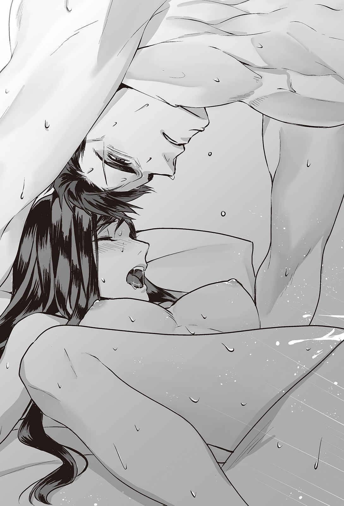

| Only with Your Heart 烈炎の騎士と最果ての恋人２【初回限定SS付】【イラスト付】 (フェアリーキス) | |
| 泉野ジュール | |
| 株式会社ジュリアンパブリッシング (2018) | |
この作品はフィクションです。
実際の人物・団体・事件などに一切関係ありません。
プロローグ
暗闇の中にひとりの男が立っていた。周囲に人はいない。彼自身がひとりになることを望み、人払いをしたからだった。男がたたずんでいる寝室は贅 を尽くした豪華なものだったが、闇の中に沈んでなにも見えない。
王座の栄光もまた、同じだった。
ひとたびそれを照らす光が消えれば、あってもなくても同じ。
アスリッドには、それがよく分かっていた。だからこそ、アスリッドは彼の王座を脅かす者には残忍だった。濡 れ衣 、失脚、追放、時には殺害の形をした制裁が、アスリッドの地位を脅かす政敵に下された。
「この国の王はわたしだ......。わたしこそが王に相応 しい......」
アスリッドの独り言を闇がのみ込んでいく。沈黙だけがアスリッドに対する返事だった。
もう何日もろくな睡眠を取っていない。
時々訪れる眠りは浅かった。訪れたとしても、すぐに漆黒の悪夢に眠りを支配されて、汗だくになって飛び起きるありさまだった。それもこれも、すべてが数日前に預言者から受けた報告のせいだ。
『悪竜を倒した巫女 が、この世界に帰って来たやもしれません』と。
十四年。
十四年もの沈黙を経て、一度は姿を消した巫女が帰って来たというのだ。
国はすでに平和だった。悪竜は十四年前に倒した。あの女がこの世界に帰って来なければならない理由があるとしたら、それはただひとつ......。
アスリッドはぶるりと身震いをした。原因は寒さではない。しばらく頭の中から追い出すことに成功していたのに、預言者のせいで思い出してしまった、あの男の影のせいだ。
かつて、英雄と呼ばれた男。
十四年前、アスリッドの地位を脅かすほど国民の人気を一身に集めたこの男は、しかし、同時に姿を消した巫女を探し求めるあまり、罠 に落ちた。
アスリッドが、罠を、張ったのだ。
うろうろと寝台の周りを行き来しながら、アスリッドは焦りと苛 立 ちを抑えようと努力したが、無駄だった。目の前に広がる闇が、あの男の髪と目の色を彷 彿 とさせる。
ルクロフ......ああ、奴 は今頃、どうしているだろう？
早急な報告が必要だった。門外不出の星見や不可思議な占術を生業 とする王家直属の預言者は、巫女がこの世界に再現したらしいことは占えても、現在の行方までは割り出せないと言った。この報告自体、すでにひと月も遅れたものだという。
すべては順調だと思い込み、謁見させる回数を減らしていたのが裏目に出たのだ。
日が昇る前に、まず、ルクロフの領地に間 諜 を送らなければ。
奴が王座に興味がないのは分かっている。しかし十年にわたって奴を騙 し続け、いいように操ってきたことを恨んでいるのは間違いない。巫女に再会する希望を失い、生ける屍 のように暮らしていると聞いて、安心していたというのに。
アスリッドは、彼の王座や生命を脅かす者に容赦をしなかった。そうしなければならない理由が、彼にはあったからだ。
その時、扉を叩 く冷ややかな音が沈黙を破った。
「アスリッド様、失礼いたします。客人が来ているのですが......」
「今夜は誰も近寄らせないでくれと言ったはずだ。ひとりにしてくれないか」
「ですが......その女は、陛下の命運にかかわる重要な話があると騒いでおります。一応、それなりの身分のある者です」
アスリッドは肩を落とし、肺を空にするような深い深いため息を吐 いた。頭を左右に振る。
女だと......。
アスリッドは女が嫌いだった。同性愛者というわけではなく、ただ、女独特の口うるさいところや、化粧で飾った顔の下に隠している狡 猾 なところが、時々どうしても我慢できないのだった。安心できない。
世継ぎをもうけるための政略結婚はしているが、夫婦間に愛はない。妃 とはもう数年来ずっと寝室を分けている。
そんなアスリッドが、こんな気分の夜に、女の訪問者を受け入れるなど考えられなかった......。しかし。
「わたしの『命運』と言ったか？」
「その通りです、陛下。我々が詳しく聞き出そうとしましたが、陛下ご本人でなければ話せないと突っぱねられました。どういたしましょうか」
声の主である年若い従者は、扉の外で返事を待っている。
その客人とやらを追い払うのは簡単だった。
もしくは明日まで待たせるのも、まったく造作のないことだ。しかし......『命運』。幼い頃から、こういった言葉はアスリッドの胸にまっすぐ食い込み、魂を蝕 み続けてきた。
アレハ、キガ、ヨワスギル。オウノ、ウツワデハ、ナイ......。
今夜のような夜は、特に。
オマエノヨウナ、ビョウジャクナコドモ、オウニハ、ナレナイ......。
幼少の頃から、父親にも側近にも親族にも王の器を疑われ続けてきたアスリッドは、王の嫡男に生まれついたという運命だけにすがりついて生きてきた。
運命だけが、今も彼を王座にとどめている。
「分かった......しっかり体を検査した上で、青の客間に入れておいてくれ。すぐに行く」
アスリッドが答えると、従者は驚いたように言葉を失った。しばらくしてから、
「承知いたしました」
とだけ言い残し、扉を離れていった。
アスリッドは再び頭を振った。
普段の彼は、こんな訪問を許したりはしない。
もし、ルクロフの悪魔のような瞳に取り憑 かれていなければ、一笑に付しただろう。しかし、アスリッドは取り憑かれていた。
だから、断る気にはなれなかった。
青の客間は、文字通り鮮やかな青に飾られた小さな接客の間だった。
アスリッドがこの小部屋を個人的な会談に使いたがる理由は、いくつかあったが、そのひとつは青という色が醸し出す冷淡な空気だった。ここに通されると、多くの者は必要以上の緊張にとらわれて、アスリッドの有利なほうに会話を進めるのが楽になった。
しかし、その夜、青の間に現れた傲慢な客人は、その限りではなかった。
「ご機嫌うるわしゅう、陛下。カフトール伯爵のひとり娘、レディ・エクシアと申します。陛下のお姿は、晩 餐 会 などで何度か拝見いたしましたわ」
濃い赤のドレスを着たエクシアと名乗る女は、この真夜中に人を引っ張り出してきたことに謝罪さえせずに、のうのうと部屋の中央に立っている。
アスリッドは顔をしかめた。
美人ではあるが、いかにも信用のならないとがった顔立ちの、冷たい瞳の女だった。ドレスの赤はまるで血の色に見える。人の血を吸う、残忍な魔物の化身のようないでたちだ。
それが、アスリッドの城の客間に我が物顔で立っている。寒気がした。
「わたしの命運にかかわる、重要な話があると聞いたが？」
「その通りですわ」
エクシアはつんと鼻をそびやかした。アスリッドを馬鹿にしてそうしているというよりも、それが日頃からの癖であるような仕草だった。どちらにしても好感は抱けない。
「ご存じの通り、わたくしの父の領地は現在、ルクロフ公爵の支配下にありますの」
「ほう......？」
その時、アスリッドはやっとエクシアが誰であるのかを思い出した。
四年ほど前、ルクロフに辺境の領地と爵位をやって厄介者払いをした時、そのルクロフに向かって牙をむいた地元の有力者がいくらかいた。
カフトール伯爵はその中のひとりだ。一応伯爵といえども、やっていることはただのならず者同然。そんな連中ばかりが勢力争いにしのぎを削っている土地だったからこそ、ルクロフを追いやったのだ。
アスリッドは......ルクロフが怖くてたまらなかったから。
「そのルクロフ公爵について、お教えしたいことがございますの。ええ、これは本当に、今すぐ陛下にお伝えしなければならないと思ったのですわ。ルクロフ公爵は現在、出自の知れない異国風の女を城に囲っておいでです」
予感的中。
異国風の女。預言者の報告......『この世界に帰って来たやもしれません』。あの女は本当に帰って来たのだ。この世界に。ルクロフのもとに。信じられなかった。
呆 然 とするアスリッドを尻目に、エクシアは熱弁を振るい続けた。
「鼻持ちならない女ですわ！ 聞いてください、ルクロフ様はもともと、わたくしにご執心でいらしたんです。ええ、それはもう熱烈に求婚されておりましたわ。そんなよしみで、来客を迎える歓迎の宴 の際に、城にお邪魔させていただいたんです。そうしたら、あの女がいて......」
あの女、という言葉に、震えるほどの悪意を込めたエクシアは、野獣さながらに顔を歪 めた。
「まるでルクロフ様が自分のものであるような、あの態度......あの顔といったら......。ああ、悔しい！ 忌 々 しい！ 結局、その女はどうにかしてルクロフ様を丸め込んで、わたくしを彼の城から追い出したんです！」
「わたしの城で、声を荒らげないでもらいたいな......」
眉を寄せながら不機嫌さをあらわにすると、さすがのエクシアも口をつぐんだ。
暗に、ルクロフの城同様、この王宮でも彼女は歓迎されていないと伝えたつもりだったが、この高慢な女にそんな皮肉は通じていないだろう。
女の噓 は、アスリッドにもすぐ分かった。
ふん。特にカリスマ性に溢 れているわけでもないこのアスリッドが、魑 魅 魍 魎 が跋 扈 する王宮を生き抜いてこられた理由は、噓の匂いを嗅ぎつける才能があったおかげだ。
噓、謀略、下心に溢れたおべっか使い......そういったものに、アスリッドは敏感だった。
そして、容赦なく対処してきた。そうすることで生き抜いてきた。
それだけではない。
たとえ直感などなくても、考えるだけで頭痛がするほど、アスリッドはルクロフのことを知り尽くしている。ルクロフの巫女への執着心をもっともよく知っている人間が、他ならないアスリッドだった。
アスリッドは長年......そう、十年の長きにわたって、その執着を利用し続けたのだから。
あのルクロフが、巫女以外の女に求婚？ ありえない。片腹痛いとはこのことだ。
ルクロフの巫女への情念は常軌を逸していた。あの黒髪の騎士は、巫女の名をちらつかせさえすれば、それだけでなんでもした。
名誉や評判を汚すのもいとわなかった。人も殺した。戦場にさえ赴いた。
すべては巫女と再会するためだけに。
「にわかには信じられないことだ。しかし、あなたが恋に破れたことと、わたしの命運になんの関係があるのか、はっきりしていただけないだろうか？」
エクシアの冷たい水色の瞳が、鋭く光った。
ぐいと胸を張り、再びつんと鼻をそびやかして、獲物を囲おうとする野犬のようにじりじりと歩き回りはじめる。
「わたくしは恋に破れてなどいません」
「それは失礼」
「あの女は......チヅルとかいう変わった名前です......ルクロフ様をそそのかして陛下に謀反しようとたくらんでいるんです。ええ、この耳でしかと聞きましたとも......。きっと異国の間諜に違いありませんわ」
アスリッドは己の耳を疑った。あの巫女が、アスリッドへの謀反をたくらんでいる？
そういった種類の女には見えなかった。
しかし、確かに......帰って来たのなら、ルクロフの口からアスリッドの所業を聞いたはずだ。
愛する男を虐げられ、間接的であるにせよ、かつての朋 友 をアスリッドに殺されたと知れば、復 讐 を考えても不思議ではない。
いやな汗がアスリッドの背筋を伝った。
アスリッドはずっと、政敵を潰すための道具としてルクロフを使ってきた。その過程で、救国の英雄としてアスリッドの存在に影を落としていたルクロフの栄光と名声をも、無残に剝ぐことに成功した。
巫女の名前さえ出せば、ルクロフはまるで頭の弱い犬のようにアスリッドの言いなりだったからだ。ちょうどアスリッドが、王座が危ういと聞けばそれだけで我を失うのと同じように。
「詳しく聞かせてもらおうか......」
アスリッドが詰め寄ると、エクシアははじめて躊 躇 のようなものを見せて一歩後ろに下がった。
「ま......まだ計画は曖昧な状態のようでしたわ......。いつか、ふたりで協力して陛下を貶 めようと......相談しているのを聞いてしまったんです」
「それは確かなのか？」
「わたくしが噓をついているとお思い？」
その通りだ、とアスリッドは声には出さずにうなずいた。
「信じてください。本当ですわ！ わたくしに案がありますの。陛下にご協力いただければ、あの女がふざけた謀反を仕かけるのを事前に止めることができます」
「その案とは？」
「簡単なことです。あの女を攫 って幽閉すればいいんですわ。わたくしの父の軍がルクロフ様の領地で小さな反乱を起こします......。そこでルクロフ様が鎮圧のために出陣している間に、あの女を捕らえればいいんです」
「それで、いったいわたしに、なにをしろと？」
「いくらかの兵力をお貸しくださいませ。それから、女を捕らえることのできる手 練 れの者も必要です。拘束した後の女の処遇は......殺してしまうのが一番でしょうけれど......不細工ではありませんでしたから、お好きになさってもいいのではないかしら......」
アスリッドはエクシアの提案を頭の中で吟味した。
巫女......チヅルをルクロフのもとから引き離す。得策だろうか？
いつも、いつも、誰かがアスリッドを貶めようと策略する。普段のアスリッドは滅多に声を荒らげない、おとなしい君主だった。
しかし──アレハ、オウニハ、ナレナイ──彼の王座を奪おうとする者に対してだけは別だ。
アスリッドはつねに王座転落の恐怖を抱いていた。それはもう病的なほど。
ルクロフは、アスリッドのこの恐怖を知っている。
もし、アスリッドに復讐したければ、どうすればいいか誰よりもよく分かっているのがルクロフだった。足元が震えそうになる。
しかし同時に、ルクロフの最大の弱点を知っているのも、アスリッドだった。
チヅル......。
この救国の巫女の存在を知る者は少ない。極秘だったからだ。
「あの女を捕らえれば......確かに、ルクロフへの軛 にはなるだろう......」
アスリッドが独り言をつぶやくと、エクシアはすぐに瞳をきらめかせてうなずいた。
「まったくその通りですわ、陛下」
「それで、あなたはなにを得るのかな、レディ・エクシア？」
「わたくしですか？ わたくしは、陛下の忠実な臣下として役目を果たすまでですわ......謀反の計画を見過ごすなど、わたくしにはできませんもの」
戯 言 、戯言、戯言だ。
「ルクロフ様はわたくしどものほうで説得いたします」
「ほう......？」
なんと愚かしい女だ。しかし、使い道はある。
まずはチヅルを捕らえて真否を確かめなくてはならなかった。そして、ルクロフへの牽 制 として、チヅルの存在を使わなければならないだろう。
もし、アスリッドの王座を脅かすつもりなら、彼女の命はない、と。
「その女を捕らえたら、すぐに場所を知らせなさい......。わたしが直々に話をする」
「もちろんですわ、陛下。勇敢なお方......」
エクシアの赤いドレスが、部屋の四方に揺れるロウソクの灯 火 に映し出されて、不気味に際立つ。アスリッドはこの女が好きになれなかった──アスリッドが好意を感じる人間など、片手の指で数えきれるほどしかいなかったが。
国王の手の甲に忠誠の口づけをするつもりだったのだろう、エクシアが一歩前に進み出てきたが、アスリッドは顔をしかめてエクシアに背を向けた。
「お望みの兵はいくらか出そう」アスリッドは冷たく硬い声でそう告げた。「後は好きにするといい......」
──もしルクロフの軍と、このエクシアの父の軍が勝手に殺し合ってくれれば、アスリッドとしては万々歳かもしれない。
ほくそ笑むエクシアを残して青の間を出る時、アスリッドの頭にそんな考えが横切り、彼の薄い唇は数日ぶりの笑みを描いた。
第一幕 たまゆらの朝
朝日のきらめきが訪れるころ、千 鶴 はまどろみながら何度かまたたき、気だるげに両手を上に伸ばした。石 鹸 の香りがするシーツはなめらかで、千鶴の裸の肌に優しく触れている。
「ん......朝......？」
声を出すと、喉がからからに渇いているのに気がついた。
白いシーツの波間で、仰 向 けだった体をゆっくりと横に倒す。無意識に人のぬくもりを探すが、手を伸ばしてもそこには誰もいなかった。
続いて、目覚まし時計を求めて手をさまよわせたが、それも見つからなかった。
──目覚まし時計？
寝ぼけていた頭がだんだん冴 えてくる。ぱっちりと目を開くと、視界に飛び込んでくるのは四柱式のベッド、石造りの壁の上部にはめ込まれた窓から注ぐ白い陽光......そして。
窓のすぐ下に、朝日を背中に受けた背の高い男性が立っていた。
逆光のせいで全身が影になり、光の流れに輪郭が覆われてはっきりと姿が見えない。でも、彼はこちらを向いて、胸の下で腕を組んでいるようだった。
「ルクロフ......？」
「おはよう、チヅル」抑えた低い声が返ってきた。「もう少し寝ていたらどうだ。昨夜は、疲れさせてしまったからな」
その言葉に、曖昧だった寝起きの意識がすっと戻ってくる。
昨夜の情熱的な愛の営み。執 拗 なほどの愛 撫 に激しい抽挿......そして訪れた夢のような絶頂。
ルクロフ。
漆黒の髪と瞳の、長身の騎士。
高校三年生の夏休み、救国の巫女として異世界へと召喚された千鶴をずっと守ってきてくれたのが彼だ。
千鶴がはじめて心から恋に落ちた男性。そして心ならずも離れ離れになってしまった恋人。
時空の歪みのせいで、千鶴にとっては一年と二カ月、ルクロフにとっては実に十四年間という長い長い年月の乖 離 がふたりを襲った。
でも、それももう終わり。過去の話だ。
ふたりはついに再会して、幾夜もの誤解とすれ違いを経て、明るくて暖かい朝を今ここで一緒に迎えている。
しかし、幸せそうにしていていいはずなのに、寝起きの千鶴を見守るルクロフの輪郭には隠しきれない影が差していた。もちろん千鶴はその影の正体を知っている。
胸元にシーツをたぐり寄せながら、千鶴はそっと上半身を起こした。
「心配しなくても、わたしはどこにも行かないから......」
ルクロフは片方の眉を上げ、自嘲っぽい笑みを唇に浮かべた。
「分かっているよ」
と、ルクロフは優しく答えた。
「ただ、あまりにも長い間お前を求め続けていたせいで、時々、夢と現実の区別が曖昧になる。こんな完璧な朝は特に」
愛する男性に恍 惚 とした瞳でじっと見すえられて、千鶴の胸はきゅっと切なく締めつけられた。裸の肌が火照る。彫りの深い端整なルクロフの顔立ちは、左の眉の端を切り裂くような額からこめかみにかけての傷痕によって渋みと迫力を増していた。
ルクロフが近寄って来てくれるのを待つのは簡単だった。
でも、千鶴は心のどこかで彼の恐れを理解していた。会えなかった十四年間に、彼を傷つけた孤独を。それを癒せるのは千鶴しかいないということも。
もしかしたら賢い選択ではないのかもしれないけれど、千鶴はおずおずと体を隠していたシーツを手放した。するりと布が落ちる音がして、冷たく乾いた朝の空気に素肌がさらされる。
あらわになった千鶴の裸体を前に、ルクロフが息を止めるのが分かった。
自ら一糸まとわぬ姿をさらすのには勇気がいった。千鶴がこれからすることにはもっと勇気がいる。でも、それでルクロフを安心させられるなら、胸の中にあるありったけの勇気を絞り出す覚悟でいた。
「わたしを信じて。わたしを......見て。感じて」
千鶴はゆっくりと寝台から立ち上がった。
ふたりの愛の行為は大抵においてルクロフが主導権を握っていたから、こうして千鶴から誘いをかけることは滅多にない。もしかしたら、これがはじめてかもしれない。
緊張に心臓がどくどくと高鳴り、指先が震えて、思わず怖 気 づきそうになる。
でもルクロフの瞳に宿った欲望の炎に気がつくと、千鶴はいくらか勇気づけられて石畳の床を裸足 で進んだ。
手を伸ばせば届きそうな距離までルクロフに近づいていくと、彼がまるで息を止めているようなのに気づいた。彼の瞳はじっと千鶴の一挙一動を見つめ、その細胞のひとつひとつに至るまでを、どうやってのみ込んでやろうか吟味しているようでさえあった。
「これは夢なんかじゃないって、し......証明してあげる......」
思わず声が震えてしまうと、ルクロフは興味深そうにさらに片眉をつり上げた。
「どんなふうに？」
ぶっきらぼうながらも熱のこもった質問が返ってくる。
「わ、わたしに......触れて......？」
なんとか大胆に答えた。しかしルクロフは言われた通りにはせず、胸の前で腕を組んだまま背後の壁に背を寄せた。
「どのあたりを？」
彼の声は遊んでいる。
「どこでもあなたの好きなところを......ね、恥ずかしいから、じらさないで。意地悪言うなら、わたし、もうやめちゃうから」
千鶴が胸を隠して一歩退こうとすると、ルクロフの腕が素早く伸びてきた。千鶴の手首を摑 むとそのままぐっと腰を引き寄せる。千鶴はあっというまにルクロフの腕の囚人になっていて、悲鳴を上げる隙さえなかった。
ルクロフは千鶴の髪の中に鼻の先をうずめるようにして、けぶった声でささやいた。
「それは困るな。一度はじめたものは最後まで続けてもらわないと」
低くて色っぽい声音に反応して、千鶴のうなじの毛がぴんと立つ。ルクロフはすでに服を着ていたけれど、彼のものは千鶴のおへその下に押しつけられていて、目に見るよりも明らかにその硬さと大きさを感じることができた。
何度......何度抱かれても、千鶴はその度にルクロフの情熱の深さに驚かされ、ルクロフは千鶴への欲望をさらに募らせていった。
──こんなことって、ありえるの？
ふたりは結婚の約束をした。後数週間......さらに冬が深まる頃には、ふたりはきっと夫婦になっている。でも、いつまでたってもこの緊張とときめきは静まる気がしない。
──もしかしたらルクロフも同じように思ってくれているの？
声にならなかった千鶴の疑問に、声にならないルクロフの答えが返ってきた。彼は片手で千鶴の髪をひと束にして摑むとすくい上げ、むき出しになった彼女の首筋に唇を寄せた。柔らかにはじまった口づけはすぐに熱気をはらんだきついものに変わり、千鶴の肌に赤い刻印を残す。
「あ......つっ！」
下がってきた唇に、鎖骨の端を嚙 まれる。もしくは嚙まれていると錯覚してしまうような強さで肌を吸われる。
同時に、ルクロフは千鶴の髪を摑んでいるのとは別のほうの手で、彼女の胸を包んだ。
体が浮いてしまうのではないかと思えるほどの力でぐっと乳房を持ち上げられて、千鶴はあえいだ。間髪を入れずにルクロフの大きな手が千鶴の柔らかな乳房を揉 みしだきはじめる。
「はぅ......う、んっ、ルクロフ......やぁ......」
千鶴の声が熱をはらみはじめると、ルクロフの呼吸も荒いものになっていく。
「見せてくれ」
と、ルクロフはささやいた。
「証明してくれ......お前は永遠に俺のそばにいると。この幸せは本物だと」
赤く熟れて敏感になった乳首を、ルクロフの指がぐっと押す。ぷすりと乳房の中に頂がめり込み、甘い痛みが全身を駆け抜けた。
「や......いた、い......あんっ」
千鶴が懇願すると、ルクロフの指は押しつけるだけの行為から、小さな円を描いて乳首を転がす行為へと移った。それは、かすかな痛みをともないつつも、千鶴の中の女を弾 けさせる媚 薬 のような動きだった。
これは千鶴が一番弱い愛撫だった。ルクロフはそれをよく知っている。
髪を引かれ、首元を甘嚙みされ、乳房を蹂 躙 されて、千鶴は小刻みに震えながらルクロフの烈炎の情熱を受け入れようと必死で彼にすがった。この行為の果てになにがあるのか、ふたりがどこまでいくのか、不安と同時に期待が広がっていく。
疑心暗鬼に駆られた時のルクロフは本人も御しきれないほど激しくなれる。
時々訪れるそんな時、千鶴は心から彼を受け入れ、その不安を包み、心も肉体も、捧 げられるすべてを差し出してきた。
ルクロフは千鶴を傷つけたりはしない......。でも激情に流されるこんな時、彼は、壊れてしまうのではないかという極限まで千鶴を追いつめながら抱いた。
「う、ん......ひぁ......あぁ......ん、し、しょうめい......してあげる......から」
まだはじまったばかりなのに、感じすぎて呂 律 が回らない。
ルクロフのほうも、言葉にならないつぶやきを千鶴の耳元に吹き込みながら、さらに愛撫を強めた。
「あぁ......ん......！」
ルクロフの唇が千鶴の胸に吸いついた。それも強く。
頂をとらえるように乳首の周囲を軽く歯で固定され、硬くなった蕾 を舌で乱暴に転がされる。刺激は快感となって千鶴の全身を駆け巡った。手足がひくつき、力が入らなくなる。
千鶴が崩れ落ちそうになると、ルクロフはいったん唇を離した。
「お前は......甘い......甘くて、柔らかい」
片手で千鶴の腰を抱き寄せながら、もう片方の手で千鶴の髪を撫 ではじめる。優しさと激しさと皮肉の交じったとらえどころのない瞳が、じっと千鶴を見下ろしていた。
「だからこそ、いつかふっと溶けて消えてしまいそうな気がして、怖くなる」
千鶴は息をのんだ。
愛する男性からこれほどまでに求められて、心の躍らない女性はあまりいないはずだ。千鶴だって彼の激情の吐露に胸が高鳴る。体の芯が疼 く。
できるなら、彼の必要とするものをすべて与えてあげたかった。
「ルクロフ......」
千鶴はそっと両腕を伸ばしてルクロフのほおを包んだ。少しざらついた寝起きの肌に指が触れると、ルクロフはやんわりとわずかに微笑 んだ。
「そうやってお前の声が俺を呼ぶのを、ずっと夢見ていた。十四年間」
「他に......他には？ 他にどんなことを......？」
ルクロフの瞳が鋭く光り、千鶴を抱き寄せる力がぐっと強まった。髪を撫でくれていた手が、いつのまにか千鶴の首の後ろを強く摑んでいる。
「そんなことを知ってどうする？」
「だ、大事なことよ。離れていた間に欲しかったものを全部あげる。たくさん。そうすればきっと不安も減っていくわ......違う？」
ルクロフは疑わしげに片眉を上げてみせた。だからといってひるむわけにもいかず、千鶴はできる限りの背伸びをして、大胆にも騎士に顔を近づけた。
「たとえば......キスとか」
「きす？」
「く......口づけのこと......です」
明言してしまってから、千鶴はうろたえて後悔した。ルクロフの目に完全なる野獣の輝きが宿ったからだ。
「それでは......遠慮なくいただくことにしよう」
そして与えられた口づけは、ついばむような甘いものからはじまり、すぐに舌で唇を割り入る激しいものへと流れていった。
「この感触だ。この、味だ。ずっと愛 しかった。ずっと、恋しかった」
身長差のせいで、ルクロフは千鶴に覆い被 さるような格好で立ちながら、舌で彼女の口内を味わい尽くした。それはある意味、お互いの息を交換し合うような神聖なやり取りだった。
ルクロフは千鶴の吐息から唾液、苦しげにあえぐ声までをも貪欲に吸い尽くしていった。そして千鶴は、ルクロフから与えられる愛情......力強さ......渇望......そういったものを受け取り、その身に染み込ませていく。
ふたりはぴたりと体を合わせて、いつ終わるとも知れない長い長い口づけに身を任せた。
──十四年分の口づけ。
過去の悲しみをうずめ、未来を築くもの。
窓から揺らめく朝日がふたりの上に光りの雨を降らし、どこか遠くから聞こえる小鳥のさえずりがふたりのこれからを祝福するように響いている。
ルクロフの言う通り、これは完璧な朝だ。完璧すぎて不安になってしまうほどの。
やっとルクロフが唇を離した時、千鶴はもう体中の骨という骨が溶けてしまったのではないかと錯覚するほど力を失っていた。
「好きよ、ルクロフ......」
小さな声でそうささやくと、ルクロフはしばらく黙って言葉の意味を──意義を、心に刻んでいるようだった。そして千鶴の額に優しい口づけを贈り、
「俺もお前を愛しているよ」
と、告白を漏らした。
──この朝が永遠に続けばいいのに。
千鶴がぼうっと恋に惚 けた瞳でルクロフを見上げていると、ルクロフはやっと満足げに微笑んで、千鶴を抱いていた腕を緩めた。
（これで終わり？）
激しい愛の行為が続くと覚悟していた千鶴は、少し拍子抜けした。いつもならこのまま、すべてを奪われるのに......。
そんな千鶴のわずかな落胆と疑問を、ルクロフは読み取ったのかもしれない。ルクロフは急に千鶴をくるりと回転させて、背後から耳元にささやく。
「今朝は少し趣向を変えてみようか、チヅル」
どこか悪魔じみたくらいの、低くて野性味溢れる声だった。
「え......？ な、なに？」
なんの抵抗にもならない、気の抜けた質問が千鶴の唇から漏れた。でもそんなものは無意味だと千鶴は知っている。きっと答えは、言葉ではなく行動で与えられる。
ルクロフは背後から千鶴を軽く押して、前へ進むようにうながした。
訳の分からないまま小刻みに足を動かしていると、ふたりはすぐに四柱式の寝台の前にたどり着いていた。
ルクロフの寝台は、隣の小部屋にある千鶴の寝台よりも格段に大きかった。あちこちで波打つシーツが昨夜の名残りを雄弁に物語っている。
「残念ながら口づけだけでは足りない。お前がくれると言うのなら、遠慮なくすべてをいただくことにしよう......」
耳の外形をそっと舐 められる。ぞくりとした冷たい快感が背筋を上り、体温が上昇する。
「いやならそう言っていい。ただ......お前を傷つけないことは約束しよう。信頼してくれ」
「え......」
背中を軽く押されて、千鶴の体はポンとシーツの上に投げ出されてうつ伏せに沈んだ。肩越しに振り返ろうとすると、ルクロフに優しく、しかし超然と遮られる。
「そのまま寝台の中央へ。うつ伏せのままで」
断ることなどできなくて、千鶴は言われた通りに寝台の中央まで這 って、そこにうつ伏せのまま止まった。
「どう、するの......？」
声を出そうとすると喉の奥が震える。喉だけでなく、指先までが期待と不安に小刻みに揺れた。
「腕を伸ばして。両腕を、外に向けて」
どくんと心臓が跳ねた。それでなくても完全に一糸まとわぬ姿なのに、あまりにも無防備でいやらしい......原始的な姿になることにわずかな抵抗を覚える。
──でも約束したの。欲しかったものを全部あげるって。
千鶴は言われたように、寝台の中央で裸のまま、ゆっくりと両手を広げた。
それを背後から見下ろしていたルクロフは、なにか聞き取れない単語を低くつぶやいた後、「いい子だ」と千鶴を称賛した。
千鶴が羞恥にきゅっと唇を嚙むと、シュッという切れのいい衣 ずれの音がした。
「あ、ルクロフ......」
歴戦の戦士を恋人に持つということ。それはたとえばこんなふうに手首を縛られる時、容赦ないほど素早くやられてしまうということでもある。
千鶴の手首は黒い絹でできた帯のような長い布に縛られ、素早く寝台の柱にくくりつけられていた。両方の手首を拘束するのに、ルクロフは二分もかけなかっただろう。痛いほどではない......でも、節々をツンと引っ張られるような感覚のある強度で、両手を開かせられる。
肺が破れそうなほど呼吸が荒くなった。千鶴のものも、ルクロフのものも。
次にくるだろうルクロフの指示を、千鶴はなんとなく予想できた。
きっと脚を......。
「脚を開いて。両方だ」
やっぱり......。千鶴はおずおずと、震える脚を開いていった。その恥ずかしさは両手を開く時よりもずっと大きく、あまりにも無防備な格好になることへの羞恥心と不安が渦巻く。
「傷つけないよ。俺を信じてくれ」
ルクロフはもう一度、千鶴の安全を保障してくれる。ルクロフを疑っているわけではない。でも、これは究極の信頼が必要な行為だった。
「う......うん......」
千鶴は完全に大の字になる形で脚を開いた。
ルクロフはなにも強制していない。これはすべて千鶴が自らの意思で、彼の指示に従い、手を縛られ、脚を開くことに合意した結果だった。
足首も、手首も、同じように縛られて寝台の支柱にそれぞれ繫 がれる。
「ルクロフ......おねがい......おねがい」
千鶴はもう、これ以上ありえないほどにルクロフの囚人になっていた。
どうしてこんなことをするの？ 疑問が頭をよぎる。確かにふたりの愛の行為ではいつもルクロフが主導権を握った。再会したばかりの頃、激情に駆られた彼に手首を縛られて抱かれたこともある。でも、あれは突発的なものだった。
こうしてゆっくり順序を踏み、合意の上でこんなふうに千鶴を縛るのははじめてだった。千鶴の知る限り、ルクロフは激しいけれど、そういった趣味は持っていない......。
「もう少し待ってくれ。こうしてしばらく......お前を眺めさせてくれ」
かすれた声が聞こえてくる。
縛られた状態でなんとか肩越しに振り返ると、じっと千鶴の裸体を見下ろしているルクロフがいた。じっと......まるで千鶴の姿を魂に刻んでいるような......恍惚とした瞳で。
「どうして......し、縛る必要があるの......？」
ルクロフはしばらく同じ姿勢のままで答えなかったから、答える意思がないのかと思って千鶴はぎゅっと目をつぶった。恥ずかしい。でも、これが彼の望んだことだ。
すべての望みを叶 えてあげると約束したのは自分......。
「どうしてかな」
彼らしくないぼそりとした声が返ってきた。
「俺に縛られて動けないでいるお前を見ていると......。そうだな、象徴のようなもの、かもしれないな。二度と俺のもとから離れないという約束の具現を見ているようで......安心する」
「きゃんっ！」
ルクロフの手が千鶴のふくらはぎを下から上へ撫で上げた。
それ自体はなんでもない行為のはずなのに、縛られているせいで全身がかつてないくらい敏感になっている。ぶるりと体の芯が過剰反応した。
「そしてなによりも......美しい。チヅル、どの男にも、愛する女を縛りつけて動けなくして自分のものだけにしたいという欲求があるものだ。俺だけが例外ということはない」
「あ......あ......ルク、ロフ......」
「お前が許してくれるなら......受け入れてくれるなら、今朝はこうしてお前を抱きたい」
ルクロフはゆっくりと、しかし迷いのない動きで千鶴の背後に覆い被さってくる。ルクロフの唇が肩甲骨に触れると、千鶴は全身を硬直させた。
星が見えた。世界が揺れる。こんな......。
恥ずかしい。動けなくて心細い。でも心のどこか奥深くで、女の本能が叫んでいる──愛する男性に支配される喜びを。
「いい、よ......ルクロフ......こうして、抱いて」
震える声で千鶴が答えると、ルクロフの動きがぴたりと止まった。
「本当に？」
「うん......。い、痛くは、しないでくれるん......でしょう？」
「ああ。それは約束しよう。少なくとも傷痕が残るような悪さはしないよ。傷ついたお前の肌を見るのはつらいからな」
そしてルクロフは熱い息を千鶴の背中に吹きかけながら、ゆっくりと上がっていった。背中に広がっていた髪をシーツの上にどかして、首のつけ根に唇を寄せる。
ちくりと注射のような痛みがして、ルクロフの支配欲の証 が赤い花となって千鶴の肌に刻印された。
──これは儀式なのかもしれない。ルクロフが千鶴を完全に取り戻したことを象徴する......そんな儀式。
こうして千鶴の肢体を縛ることで、ルクロフは千鶴がどこにも行かない証拠を体感できる。
象徴......。安心......癒し。一見、こんなに淫らで艶 めかしい束縛なのに、彼の行為の裏にはそんな心の叫びが隠されていた。
もしかしたら千鶴も、その最上の信頼をルクロフに与えることで、さらなる寵 愛 を受けられるのかもしれない。さらなる......快感を得られるのかもしれない。
千鶴は深く息を吸うと、彼にすべてを預ける覚悟をした。
その瞬間。
「あ......っ！ そ、れ......ひ、あぁ......っ！」
いつのまにかルクロフは衣服を脱ぎ捨てていたらしかった。熱くて厚い裸の胸が千鶴の背中に押しつけられる。そして後ろから両方の乳房を強く揉みしだかれた。
両腕を広げているせいで、快感がより間近に迫ってくるのが分かった。
動けないせいで、刺激から逃げる道もない。背中を圧迫されて千鶴はすべてを一身に受け止めるしかなかった。
「あぁ......あ、ん......つよ......つよすぎる......ル、クロフ......っ」
ぴくりぴくりと体が跳ね震えるたびに、それがさらなる快感になって千鶴の頭のてっぺんからつま先までをつらぬく。ルクロフは千鶴の動きを押さえるように彼女の上に乗って、胸を愛撫しながら耳たぶを唇と舌でもてあそんだ。
何度抱かれても、千鶴の奥はまるではじめて彼を迎えるように攣 縮 する。
蜜が溢れ出すのを止められない。硬くそそり立った肉棒の先が尻の割れ目を刺すように触れて、それがますます千鶴の淫情を誘った。
与えて。与えられて。
ふたりの性交はただ快楽を求めるためだけのものではなかった。十四年にわたる孤独を癒すためのもの。時に激しすぎる彼の情熱を鎮めるための救いの手。
離れ離れだったふたりの肉体をひとつに繫ぐ手段。
時々、千鶴は、ふたりはもともとひとつの体を共有していたのではないかと錯覚する。同じ魂が神の気まぐれでふたつの体に分かれてしまっただけで、ふたりはひとつだった。だからこそ、これほど求め合わずにはいられないのだ、と。
ルクロフと交わる時、千鶴はそれくらいの快感と安 堵 、そして愛を感じた。
「ん......ぁ......だ、だめ......これ、いじょう......」
「困った女だ、チヅル。まだはじまってもいない......俺達はまだはじまってもいない。すべてはこれからだ」
「は......んっ」
ルクロフの片手が、艶 めかしい動きで乳房から秘部へと下っていった。人差し指の腹が陰核に触れると、そこがすでに、ぬるりとした液で濡 れそぼっていることが分かる。
ルクロフは丹念に、執拗に、花弁を指でいじめた。
「やぁん......あ、あ......き、きちゃ......ぅ......あっ」
絶頂の波が近づいてくると思わず手足を引こうとしてしまい、繫がれた部分が引きつるように痛んだ。動けないせいで、千鶴は否 応 なしにルクロフの存在を意識した。
彼の動き、ひとつひとつを。
すべての動作が持つ意味を、まっすぐに感じた──千鶴を悦 ばせようとする指先。千鶴をとらえようとする腕。千鶴に愛をささやこうとする唇。
千鶴はそのすべての受け皿になった。
「綺 麗 だ......チヅル......お前が悶 える姿は......この世界のなによりも美しい」
「あぁ！」
その言葉を合図に、ルクロフはその長い指を一本、千鶴の蜜 壺 にずぶりとうずめ込んだ。多分、中指を。同時に人差し指と親指で花弁をいたぶりながら、中指で膣 をかき回す。
もちろん胸への愛撫も続いていた。
耳への侵略も終わらない。
千鶴は体を大の字に縛られ、愛する男性に背後からすべてを奪われていた。実際に与えられる快感に加え、その淫らな想見が体の奥に眠っている『女』にさらなる火をつける。
クチュ、クチュ。ずぶ。
火照った素肌からは汗がしたたり、目からはうっすらと涙がにじむ。恥部からはとめどなく甘い蜜が溢れ続け、いやらしい嬌 声 と一緒によだれが一筋顎を伝った。
「ルク......ルク、ロフ......ルクロフ......っ」
もうそれ以外の言葉を思い出せなかった。逃げ場もない。逃げたくもない。
「チヅル──」
熱気のこもった、ざらついた低い声。お互いの名前を呼び合うだけの行為が、どんな愛の旋律よりも深く美しいものに思えた。
「......ぁっ！」
ずぶっと、ルクロフの男性自身が千鶴の中に深く侵入してきた。
予告もなしに。忠告もせずに。
千鶴は声にならない叫びを上げて背をしならせたが、手首と足首の拘束がその肉体の反応を阻止する。普段なら、あまりにも大きくて硬い彼の質量を受け入れるために腰を引くのに、それさえもできない。
ルクロフは容赦なく一気に最奥まで突き進んできた。
千鶴はすすり泣きながらすべてを受け入れた。すべてを──愛も不安も。過去も未来も。
これ以上、ふたりに言葉はいらなかった。
ルクロフは情熱の剣で千鶴をつらぬき続け、彼女を高みに押し上げながら自らも絶頂へ近づいていった。肌と肌がぶつかる音、寝台のきしみ、女の啼 き声、男の息づかい。
今が朝だということさえ忘れて、ふたりは求め合い、与え合い、愛し合った。
抽挿がより一層激しくなると、千鶴は肢体をぶるぶると震わせながら絶頂の波に包み込まれていった。
ルクロフはそれよりも少し遅れて、獅 子 の咆 哮 に似たうなり声を上げながら頂点へ達した。
爆発したルクロフの白濁が千鶴の中に放出される。それをのみ込むために千鶴の蜜壺は躍るように震えた。
その恍惚は......どこか非現実的なほどだった。
ふたりはしばらく繫がったまま動かず、絶頂の余韻に酔いしれていた。今しがたふたりの間に起こったことがまだ信じられないくらいの、極上の瞬間だった。
「は......ぁ......ん」
千鶴が切なく吐息を漏らすと、ルクロフはようやく低く喉を鳴らしながら腰を浮かせる。
「よかったよ、チヅル......素晴らしかった。ありがとう」
今まで聞いてきた中でも、最上に優しい口調でルクロフは千鶴をねぎらい、耳の後ろに甘い口づけをした。そして、『ありがとう』──その言葉の意味を、千鶴は肌に感じて理解した。
これはただ快感のためだけの行為ではなかったのだ、と。
少し屈折した方法だったのかもしれないけれど、これはある種の信頼と、安心を、ルクロフに与える通過点だった。それを彼に与えられたことに、千鶴は喜びを感じていた。
そしてルクロフは、挿入する時はなにも告げずに突然だったくせに、「抜くから......力を抜いてくれ」と助言してから肉棒を引き抜いた。
「あん」
体の芯を押し広げていたものが急になくなってしまった哀 しさに、千鶴は身震いする。
ルクロフはまだ息の荒いまま、しばらく千鶴の背に覆い被さっていた。ところどころ千鶴の首や背中に唇を寄せて、熱心に赤い花を咲かせながら。
ルクロフの力強い肉体に抱かれる安心感は何事にも代えがたいものがあった......。でも、千鶴だって彼を抱き締めたい。彼の黒髪を梳 きたい。
もどかしくなって縛られた手足を引っ張ったが、びくともしなかった。
「駄目だ、チヅル......無理やり引きすぎると怪 我 をするから」
情事の名残りを思わせる、彼の気だるげな声と動きには妙な色気があった。ルクロフはゆっくりと上半身を起こすと、まず右の手首からはじめて時計回りに千鶴への拘束を解いていく。
千鶴はなんとかよろよろと身を起こした。
「大丈夫だったか？」
両手を取られて、わずかに赤い線の走った手首に口づけをされる。
さすが正真正銘の騎士だ。その仕草は見 惚 れるほど堂に入っていて、千鶴の胸をときめきで満たした。
「うん......。少し怖かったけど、痛くはなかったから......」
それどころか、身動きの取れない愛の行為に、千鶴は背徳的な快感を与えられて溺れた。
いつもこうして抱かれたいかと聞かれたら答えは否だが......でも、いやではなかった。
千鶴を縛ることでルクロフがつかの間の安堵を感じるというのなら、千鶴のほうは、いつもと違う束縛に自分さえ知らなかった情欲を刺激された。
千鶴はその自覚に顔を赤らめ、もはや用途を失って投げ捨てられていたシーツをかき集めようと急いで手を伸ばした。が、ルクロフの動きのほうがずっと早かった。
ばさっという勢いのいい音と共にシーツが広げられ、そのままふわりと首から下を包まれる。
「ありがとう、ルクロフ」
「礼を言うのは俺のほうだ。チヅル、お前は俺のすべてだ」
ルクロフは千鶴の両方のほおに優しく口づけた。感謝と愛情に溢れたキス。優しさに満ちた甘い触れ合い。
シーツに包まれていたせいもあって、暑くてルクロフを見上げる千鶴の顔は真っ赤だった。
すると、ルクロフの大きい手がそっと千鶴の額に当てられた。
「ど、どうしたの？」
「熱でもあるのか？ 顔が赤い」
「え、ち、違うの。大丈夫......こんなふうにするのははじめてだったし、ちょっと恥ずかしくて、火照っちゃって......」
千鶴の説明に、ルクロフはかえって眉をひそめる。手のひらをひっくり返して甲を当ててみたり、彼自身の額と体温を比べてみたり、千鶴の左手を取って脈を測りはじめたり。
「本当に、大丈夫よ？」
確かに、まるで熱を出したかのような肌の熱さはある。でも、たとえ実際に熱だったとしてもただの風邪だ。そこまで心配そうな顔をすることはないのに......と思った瞬間、千鶴は自分の間違いに気がついた。
──ここは現代の日本ではない。
風邪薬もなければ、もちろん抗生物質もない世界。ちょっとした風邪が人の命を奪ってしまうことも少なくない時代なのだ。千鶴を失うことをなによりも恐れている彼が、過保護になってしまうのも分かる気がした。
千鶴は手を伸ばしてルクロフのほおに触れた。
「心配しないで。わたしは大丈夫だし、もうどこにも行かないから」
ほおに触れた千鶴の手をぎゅっと握ったルクロフは、その細い指先に唇を寄せる。指が性感帯だという話は聞いたことがない。でも千鶴は確かに甘い痺 れを感じて、小さく身震いした。
「そうであることを願うよ」
ルクロフは神妙につぶやいた。
朝食は寝室まで運ばせようか......というルクロフの心遣いには魅 かれるものがあったが、ふたりは結局大食堂まで下りてきて皆と食事を共にすることにした。
この城での日常は、すでに千鶴の一部になってきている気がする。
高度な文明の利器がないこの世界では、たくさんの人間がその体力と知恵を持ち寄って協力しながら生活している。厚い石の壁に守られて、百人以上の者がルクロフをその長として日々の暮らしを営んでいた。
食事は朝も夜も大食堂で皆が一斉にとる。
お喋 りというほどではなかったが、千鶴は人と一緒にいるのが好きだ。特にルクロフが彼女を婚約者と公言してくれてからは、使用人達の態度もずっと親しみのこもったものになって、この習慣を気に入っている。
それに、城の中にはまだ......。
「おはよう、チヅル！ 今朝はまた格別に美しいな！ ルクロフとの結婚は考え直して俺の嫁になってくれないかい？」
席に着こうとする直前、背後からやって来たローンが千鶴の肩に片腕を回した。
甲 冑 こそつけていないが、鎖帷子 をチュニックの下に装着しているのでジャラジャラとした細かい金属音がやかましく響く。
でもそこがまたローンらしくて、千鶴は微笑んだ。
「おはよう、ローン。ルクロフとわたしの結婚式には奥さんも連れて来てくれるって本当？」
「おっと......そこを突かれると痛いね。妻には今の台詞 は内緒にしてくれるかい？ 俺はまだ死にたくないんでね」
内緒話をするように千鶴の耳元に顔を近づけてきたローンの肩を、大きな手が摑む。
わざとらしく片眉を上げて肩越しに後ろを向いたローンの視線の先には、刺すような目の仏頂面なルクロフがいた。
「お前はそろそろ帰ったらどうだ？」
「お・は・よ・う、ルクロフ隊長。お前こそ、そろそろおとなげある行動を心がけてみたらどうだ？ 挨拶くらいしてくれてもいいだろう？ 俺はチヅルに挨拶しただけだぞ」
「ふん」
ルクロフは友人の提案を鼻で笑った。千鶴の肩に乗せられたローンの手を忌々しげに外すと、彼女を自分の腕の中にすっぽりと包む。
「挨拶？ 叩き出されないだけマシだと思うんだな。チヅルに手を出そうとする男に食わせる飯などここにはない」
ルクロフはそのまま千鶴を彼の上座の隣へ連れて行った。後ろからローンがついてきて、ルクロフをからかうような軽口を叩き続けている。
椅子に座りながら、千鶴はくすくすと笑ってしまった。
──まるで昔みたいだ。十四年前。
千鶴が日本へ帰ってしまい、不在だった間に亡くなってしまったザインとエディナはもういないけれど......。
「おはようございます、ルクロフ様、チヅル様！ あ、ローン公爵もどうもー」
大食堂に隣接した調理場から顔を出したナダル──ルクロフの従者兼給仕係の少年──が、いそいそと嬉 しそうに近づいて来た。
「なんなんだ、俺に対するそのオマケのような挨拶は」
ローンは唇をとがらせながら千鶴の前に着席した。
「すみません。僕が仕えているのはルクロフ様なものですから。こう、自然と」
「くそ、この城の連中は躾 がなっていない......。俺ならもっと厳しくしてだな......」
なんだかんだ文句を言いながらも、ローンがこの城の居心地を気に入ってくれているのは間違いない。その証拠になにかと理由をつけて滞在を引き延ばしている。
ナダルも結局、客人であるローンをきちんともてなし、朝食はつつがなく普段通りに進んだ。
──素朴だが新鮮で美味 しい食べ物。懐かしくて親しい友人。家族のような使用人達。そしてなによりもルクロフ......。
千鶴が日本に置いてきてしまったものは大きい。仕事。親友の舞 。祖母の墓。便利な文明。それでも千鶴はこの世界で生きることを選ぶ。生涯、もうここを離れることはない。
食事が終わるとふたりは立ち上がった。ルクロフは歩き出す千鶴の背中の真ん中に手を当てて、過保護にぴたりと背後について進む。
ルクロフの言う通りだ──わたし達はまだはじまってもいない。すべてはこれから......。
中庭に隣接する回廊を通り抜ける時、千鶴はふと顔を上げて空模様に目を留めた。起きたばかりの頃は明るかったのに、いつのまにか厚い雨雲が重々しく空を支配している。湿った冷たい空気が充満していて、ここからそう遠くない場所ではすでに雨が降りはじめているのが感じられた。
きっともうすぐ、ここにも雨が来る。
第二幕 約束を重ねて
朝食を終えると、ルクロフは城の雑事のために千鶴のそばを離れなくてはならなくなった。
雨であっても、騎士達の訓練は休まないことが多い。戦いは晴れた日にだけ行われるわけではない。いざ戦が起きるとなれば、風も雨も雪も関係ないからだと教えてくれた。
千鶴はいったん女中アルデと共に自室へ戻り、顔を洗い直してから子供の世話をしに行くつもりでいた。
城の一角にある、使用人の子供達を日中に預かる場所だ。
アルデの娘であるノーアをはじめとした小さな子供達は特によく千鶴に懐いてくれていて、この日課はすでに生活の一部になってきている。生きがい、と言ってもいいかもしれない。
千鶴が水 桶 で顔を洗っている間、アルデはベッドを直し、激しい愛の行為の名残りを確認しながらこっそり微笑んでいた。
「でも、チヅル様、早く婚礼の衣装を仕立てなくてはいけませんわね。ローン公爵歓迎の宴の夜にルクロフ様と買いつけられた布の中に、素敵なものがいくつもありましたわよね」
「う、うん......」
宴の夜のことを思い出して、千鶴はほのかにほおを赤らめた。
もちろん、アルデはすでにルクロフが千鶴を婚約者と呼び出したことも、冬が深まる前に婚儀を済ませたいと明言したことも知っている。特に知らせを交付したわけではないが、使用人達の噂 の伝達は想像以上に早かった。
千鶴本人は、実際に結婚するのはそんなに急がなくてもいいと思っている。
でも、ルクロフがそうしたいと言うなら明日でも構わない。ただ確かに、一生に一度のことだ。ウエディングドレスくらいはきちんとしたものを用意したい。
樽 から頭を上げて布で顔を拭くと、千鶴はアルデにたずねた。
「婚礼のドレスを仕上げるのって、どれくらいの時間がかかるものなのか分かる？」
アルデは仕事の手を止め、どこか宙を見上げながら、ぶつぶつと日数を数えていた。
「そうですわね......手の空いているお針子達を総動員したとして......。装飾にもよりますけど......公爵の花嫁に相応しいものを作るには十日は欲しいかしら」
「そんなに豪華じゃなくていいの。ルクロフの隣に立って恥ずかしくなければ、それで」
「まずは仕立屋を呼んで、図案を考えなくてはならないですわね。それができたら、後は縫うだけですから。そのあたりの手配は、ルクロフ様と相談なさるといいと思いますわ」
「そっか」
やはり現代のように、お店へ入って出来合いのものを選ぶというわけにはいかないようだ。
公爵であるルクロフの社会的な立場もある。本格的に準備をはじめるとなると忙しくなるのかもしれない。
今は夜になるのを待ち、ルクロフが寝室へ戻って来たら一緒に色々と考えよう。千鶴はそう思っていた。
灰色の雨雲が空を端から端まで覆っていて、大きな雨粒がひっきりなしに大地を濡らし、地面にぬかるみを広げていく。
お昼近くになっても天候が回復する兆しはほとんどなく、千鶴は窓越しに外を眺めながら、説明しがたい妙な不安を感じていた。
悪天候のせいだろうか？ こんなふうに胸騒ぎがするのは。
「チヅルさまぁ、どうしたの？ 球遊びしようー」
ノーアにドレスの裾を引かれて、千鶴ははっと我に返った。
アルデそっくりの、きらきらと輝く水色の瞳が不思議そうに千鶴を見つめている。慌てて周囲を見回せば、雨のために外へ出られない子供達が周囲を騒がしく走り回っている。いけない、いけないと自分を叱 咤 しながら、千鶴は笑顔を作った。
「ごめんね、ちょっとぼうっとしていたみたい。球遊びをしたいの？」
「うん！」
「じゃあ、いらっしゃい。他に球遊びをしたい子はいる？」
千鶴が部屋全体に向かって声を上げると、ノーアと同じ年の子と、もう少し小さな子が二名名乗りを上げて嬉しそうに近寄って来た。皆、可 愛 らしい。
肝心のボールは動物の皮を縫い繫いで綿をつめたもので、完全な球体ではなく少しいびつな形のものだし、あまり跳ねてもくれないのだが、子供はそれでも楽しそうに千鶴と一緒に遊びはじめる。
千鶴も今まで感じていた杞 憂 を忘れるくらい、楽しく子供達と戯れた。
──そういえば、昔は幼稚園の先生になるのが夢だったっけ、と千鶴はふと思い出した。
大学進学をしないと決めた時点で諦めた夢だったけれど、どういう星の巡りか、今は異世界の、愛する男性の城の中で似たようなことをしている。
しかも、もうすぐ彼と結婚するのだ。
別れ。すれ違い。友の喪失......。運命を乗り切るのは容易ではなく、時には希望さえ失いかけた。でも結局、最後にはこうして予期してもいなかった形で夢を叶えることができている。不思議なものだ。
このままなにもなく、平穏に結婚式を迎えることができるといいのだけど......。
そう考えた時、宴の夜に現れた氷の瞳を持った令嬢の姿が脳裏を横切った。ルクロフに横恋慕をしていた彼女。千鶴がいるのを知りながら、ルクロフに結婚を持ちかけた美女......。
名前はエクシアだった。
そして昼食を前に、アルデと共に城内の回廊を渡っていた時、千鶴はまたもうひとつの心配事と遭遇してしまった。
壁際を伝うようにひっそりと歩いている......バルだ。
控えめな曲線を描いた茶色の髪と、同色の瞳。目立ちはしないが誠実そうな顔立ち。鍛えられた頑健な体は若さに満ち溢れている。彼はローンが供に連れて来た騎士のひとりだ。ローンの領地ではもっとも腕の立つ若手の騎士だという。
そんな彼が、鎖帷子も甲冑もつけない、目立たない土色の上着とチュニックだけでひとり回廊を歩いていた。
「バルさん......」
なにか考え事をしていたのか石畳の床にばかり目を向けていた彼が、千鶴のささやきにはっと顔を上げた。その目には一瞬の驚きと、それに続く大きな動揺がありありと浮かんだ。
ローン歓迎の宴の夜──バルはルクロフと、千鶴を巡る決闘試合を繰り広げた。結果はルクロフの勝利になったとはいえ、彼はその若々しい俊敏さと力強さを群衆に披露した。
ただ、結果として、敗北したバルは謹慎に近い身になったらしいことを噂で聞いている。
すべてはローンのいたずらで、千鶴への想 いをはっきりさせないルクロフに対する当て馬として、バルを使ったせいなのに。言ってしまえば、バルは貧乏くじを引かされてしまっただけで無実なのだ。
「大変失礼いたしました。よい一日を」
千鶴と目を合わせないように斜め下へ視線を滑らせたバルは、深く頭を下げた。そのまま踵 を返すと、走り去ろうとする。
分かっている。きっと彼はルクロフに、千鶴とは顔を合わせるなと命じられているのだ。その理由も理解できる。ルクロフの気持ちも知っている。裏切るつもりなんかない。
でも、千鶴は彼に怪我がなかったかどうかをずっと心配していた。
バルはなにも悪くなかったのに、ローンの挑発のせいで罰を受けてしまったことに傷ついていないかどうかも知りたかった。
「ま......待ってください、バルさん！」
一歩前に進んだ千鶴が抑えた声で叫ぶと、バルはぴたりと歩を止めた。しかし、すぐには振り返らなかった。でもそれで十分だ......千鶴はただ彼の安否が知りたかった。
「体は大丈夫ですか......？ もしかしてあの夜、怪我とか......」
バルは千鶴に背中を向けたまま、定規をのみ込んだようにぴんと姿勢を正した。
「軽い打ち身だけです。もう治りました」
ぼそぼそとした早口で答えると、バルは拳を口元に当ててごほんと咳 払 いをした。早くこの場から逃げてしまいたいと思っているのがありありとうかがえる。理由は理解できる......が、知り合って間もない人にこんな態度を取られるのは、寂しいものがあった。
多分、誰も悪くはないのに。
「あの夜は、ごめんなさい......」
雨音にかき消されてしまいそうな細い声で、千鶴は小さくつぶやいた。
きっとバルはこのまま走り去ってしまうだろう。それはそれで仕方ないと千鶴は納得していた。千鶴がしたかったのは彼の無事を確認し、できれば謝罪をすることだけだ。
しかし次の瞬間、バルは肩越しに振り返って千鶴を見つめた。
長い時間ではない......でもふたりの関係を考えれば不適切な数秒間、バルの視線はまっすぐ千鶴に向けられていた。
バルの瞳は数回、不自然なまたたきを繰り返した。
「お気になさらないでください。どうかルクロフ公爵とお幸せに」
それだけ告げると、バルは騎士的な礼もそこそこに、千鶴とその後ろに控えているアルデに背を向けて走り去った。その姿はすぐに回廊の奥へ吸い込まれるように消えていく。
その場はしばらく静寂に包まれた。
「チヅル様、今のことは......」
呆然と立ちすくんでいた千鶴の横から、アルデの気遣いに満ちた声が聞こえてくる。千鶴は緊張を解くために深いため息を吐き、女中を振り返った。
「ごめんね。分かってる。ただ、あの試合の後からずっと彼を見てなかったし、怪我がなかったかどうかだけ知りたくて......」
アルデの水色の瞳が心配に揺れている。
「ルクロフ様には、もし彼とチヅル様が顔を合わせるようなことがあったらすぐに報告しろと言われてますの」
その言葉には、もしルクロフが今さっきの千鶴とバルのやり取りを知ったら、あまり気分の良くないことが起こるかもしれないという心配が含まれていた。
「どういたしましょうか？」
「黙っていて......くれる？ 本当になにもなかったでしょう？ 引き止めたのはわたしのほうだし、それでなくてもきっと謹慎中なのに、これ以上なにか罰を受けたら酷 いわ。もし必要なら、ちゃんとわたしからルクロフに話すから」
アルデは少しの間、渋りつつまごついたが、最終的には「分かりました」と答えてそれ以上はなにも言わなかった。
それに続く昼食の席で、千鶴はルクロフに会うことができなかった。
他の騎士達の姿はあるのに、ルクロフの上座だけがぽつんと無人だった。ナダルに尋ねても、なにも聞いていないという。
確かにルクロフは城の采配に熱心だったから、こうして食事に現れないことも時々ある。
携帯電話があるわけでもないし、こうした細かい伝達が届かなかったり、遅れたりすることもままあった。だから......。
（忙しいだけ......よね？）
でも、千鶴の心は形容しがたい不安に揺れた。
これはきっと陰鬱な天候のせいだと自分に言い聞かせながら、パイとスープをなんとか喉に押し込んだが、ほとんど味は感じられなかった。
自分が理性を失いかけていることを、ルクロフは認識していた。いつもそうだ。
いつだって、千鶴のことになるとルクロフは正気を失う。
彼女が微笑むのを眺めているだけで、ルクロフは獣のような激しい欲望に駆られる。ただ少し彼女と離れているだけで、悪魔がルクロフの魂を引き千切りにくる。そして彼女が他の男に近づくのを見るだけで、体中の血が沸騰した。
中庭に面した回廊の途中で、千鶴があのバルという名の青年騎士と偶然顔を合わせた場面に、ルクロフは出くわしてしまった。昼食のために大食堂へ移動する途中だった。供の騎士もつけずに、ふらりと彼女を迎えに行こうかと思っていた矢先に。
十年にわたる暗殺者まがいの生き方は、物陰に潜む術 をルクロフに教え込んだ。柱の陰で気配を消すのは簡単だった。
──すぐその場を離れようとしたバルに、声をかけたのは千鶴のほうだった。千鶴が！
会話はほんの一瞬で、内容までは聞こえなかった。聞こえたとしても、ほんのひと言かふた言だけの短いやり取りだったはずだ。ふたりは触れ合うことさえなく別れた。
しかしルクロフの血は狂気を叫び出した。
このまま大食堂へ出て千鶴と顔を合わせるのは危険だと分かっていたから、ルクロフは颯 爽 と踵を返し、城の外へ出た。激情のおもむくままに城壁が見渡せる城の裏手に進む。降りしきる雨風は、しかし、ルクロフを止めることも鎮めることもできなかった。
苔 の生 した石の連なりが、ルクロフの城とその住人を頑健に守っている。
──ルクロフもこうして、千鶴を分厚い壁の中に閉じ込めてしまいたかった。分厚い、誰も崩すことのできない囲いを作って、その中に千鶴を入れて鍵を閉めてしまいたい。もちろんその鍵に触れることができるのはルクロフだけだ。
自分が理論的でないことは分かっていたが、理解や理性は制御の助けにならなかった。今すぐ千鶴を抱き尽くしてしまいたい。しかし今、千鶴に向き合えば、彼女を抱きつぶしてしまう......。残忍に。無情に。
決定的に。
ルクロフはひと気のない城壁の前にたたずみ、雨水に濡れて密 かに照り輝く岩石に触れた。
──落ち着け。千鶴はどこにもいかない。そうだろう？
──数え切れないほどの夜を、朝を、四季を、千鶴を求めてさまよった。十四年間......粉々に千切れた心と、悪魔に売り渡した魂と、抜け殻になった体を引きずりながら怨霊のように千鶴を求め続けていた。その傷は一朝一夕で消えたりはしない。ほんの些 細 なことでさえ、いともたやすく塞がりかけたルクロフの傷を引き裂いた。
氷のような冷たさが石から指先に伝わる。
その冷たささえ沸騰させてしまいそうな熱が血管を巡り、やっと訪れたルクロフの心の平安を、焼き尽くそうとしていた。
──神よ、この愛にご加護を。この想いにご慈悲を。もう二度と、俺から千鶴を奪わないでくれ。
そして昼が過ぎ、夕方になっても重苦しい空模様が変わることはなかった。
雨は執拗に降り続け、風に至ってはさらに勢いを増して城壁に吹きつけている。そしてさらに千鶴の心を重くすることに、結局ルクロフの姿をまったく見られないままだった。
そして気がつけば、時は夜を迎えていた。
釈然としない気分を抱えたまま、千鶴は自室のベッドの縁に座って静かに髪を梳かしていた。
無心に手を動かしながら、窓にしたたる水滴をぼんやりと眺めていると、この世界に帰って来てからの日々がゆっくりと思い出される。
最初に森で迷ったこと。
ロドルゴに連れ去られてたどり着いたボロ屋敷に、ドローテ婆との日々。甲冑を身につけ兜 を被ったままのルクロフとの再会。そして聞かされた拒否の言葉。なかば無理やりの、でも情熱的だったルクロフとの肉体の交わり。ローンとの再会と、宴の夜。
そして雨の中で聞いた告白......。
短い間だったけれど、あまりにもたくさんの出来事があった。落胆したり傷ついたり、希望を持ち直したり、まるでジェットコースターのような激しさで感情の波にさらされて。
それは多分......ルクロフも同じだったのだろう。
彼に会いたかった。少し顔を合わせていないだけで、千鶴は心の一部が失われてしまったような心 許 なさに襲われる。
普段はこういう時、ルクロフのほうが千鶴の部屋を訪ねてくるので、千鶴は自室でおとなしく彼の帰りを待っている。でも、早く会いたかった。
心を決めて櫛 をベッドサイドの小さな棚の上に置き、靴を履き直そうとした時だった。部屋の扉がノックもなくギイっと開き、背の高い影がゆっくりと中に入って来る。
ルクロフ。
「どうしたの......？ 今日はあんまり会えなかったから、今から部屋に行こうと思って......」
千鶴は靴を履こうとするのをやめて、ベッドの端に座ったまま背筋を伸ばして騎士が近づいて来るのを待った。
どうしてだろう。近づいて来れば来るほど、ルクロフの瞳が暗くよどんでいるように見えてしかたがない。
鎖帷子をつけたままの彼は、それでも音らしい音をほとんど立てずに、あっというまに千鶴のすぐ目の前まで迫ってきた。
「ル、ルクロフ......？」
「誓ってくれ。もっと。何度でも」
吐き出すようにそううなった後、ルクロフは片手を伸ばし、千鶴の首の後ろをぐっと摑んで引き寄せた。
「誓うんだ......お前は約束した。そうだな？ もう二度と、俺から離れないと」
ぴんと張った緊張に鼓動がはやり、胸を締めつけてうまく声を出せない。ただ肯定の意思を伝えるために首を上下に振ると、ルクロフはさらに身を乗り出し、千鶴に迫ってくる。
熱く、荒い呼吸が千鶴の顔にかかった。
「必要なら、お前を縛りつけてでも離さない」
険しい皺 が眉間に寄せられ、ルクロフの両手が千鶴の腰に回りたぐり寄せられる。どうしていいのか分からず、千鶴はただふるふると首を振りながらささやいた。
「誓います......。約束するわ。どこにも行かない......」
急にルクロフの瞳に妙な表情が走った。
まるで、突然見えない壁にぶち当たって狼 狽 しているような。まるで、もう二度としないと誓ったイタズラを見つかって、どう弁明していいか分からないでいる少年のような。
「ルクロフ、どうしたの？ きちんと話して、教えて......」
千鶴は懇願した。
するとルクロフは、彼には珍しく打ちひしがれたように肩をすぼめて、千鶴の首元に顔をうずめてきた。
「くそ」
男らしい声の振動が、千鶴のうなじのあたりをくすぐる。
「くそ、またこれだ......。俺はお前のこととなると我を失う。物事をまともに見られなくなる......」
ルクロフの体重が肩にどっかりとかかってきて、千鶴は両手を広げてなんとかそれを受け止めた。おずおずと彼の背中を抱き締めると、ルクロフはさらに甘えるように全身をすり寄せてくる。
まるで愛に飢えた大型犬みたいだと、千鶴はこっそり思ってしまった。
とりあえず彼の怒りはやんだらしい。千鶴はためらいながらルクロフの短く切り揃えられた黒髪に触れ、慈しむように撫でた。
「どうして急に、またそんなこと言うの......？」
ルクロフはすぐには答えなかった。
まるで己を恥じるように千鶴の肩に顔をうずめたまま無言で、大きな体を隙間なく近づけてくる。いつのまにか彼の両手が千鶴の背中に回されていて、きつく抱き締められていた。
なにかがおかしい。
でも、可愛いかも......。
ルクロフのような、文字どおり百戦錬磨の輝ける甲冑の騎士が、年端もいかない少年のように甘えているのだ。どんな女性だって思わず微笑まずにはいられないだろう。
たとえどんな状況であっても。
「......なにがおかしい？」
聞かれてはじめて、千鶴は自分がくすくすと笑ってしまっていたことに気がついた。
「ごめんなさい、わ、笑うところじゃないんだけど」
「謝罪など聞きたくない。説明しろ、この魔女めが。さんざん俺を狂わせただけでは気が済まないんだな？」
ルクロフの口調はいつもどおりの、男らしさと鋭利なユーモア、そして深い優しさが交じった落ち着いたものに戻っていた。
千鶴は今度こそ遠慮なく微笑みながら、正直に指摘した。
「だってルクロフが可愛いから」
ルクロフは顔を上げると眉をひそめ、目の前に深刻な軍事問題を突きつけられた武人のような顔をした。いや、実際に経験し、目撃したところによると、ルクロフはそういった難事に立ち向かう時、冷たい無表情になる性質のようだったから、逆かもしれない。とにかくいわゆる、いぶかしげな表情になった。
千鶴は本当に声を上げて笑った。
ルクロフの腕の中に捕らえられたまま、しかもベッドの上で、あまり賢いことではない。でもどうしても抑えきれなくて、ころころと笑った。
「この小娘めが」
もちろんルクロフは、風のような速さで千鶴をベッドへ押し倒した。そしてありとあらゆる口汚い罵り言葉を千鶴の耳に吹き込んだ。
「意地の悪い女 狐 だ。おまけに行儀がなっていない......お仕置きをする必要がありそうだな」
「あ......っ」
「意地汚い売女 」
服の上から胸をぐっと摑まれて、揉み上げられたと思うとすぐに頂を指でもてあそばれる。
「ん......ぁ......あぁん......！」
電流が駆け巡ったかのように背筋が震え、つま先にまで甘い快感が行き渡った。
──言葉も、また。
酷く乱暴な言葉を言われているはずなのに、なぜかまるで愛を語られているような優しさと心地よさがあった。
そして続ければ続けるほど、ルクロフは緊張をほぐしていくような感じがした。
「どうした、この淫乱め」
かりっと耳たぶを甘嚙みされ、男性的な低い声でそっとささやきと熱を吹き込まれ、すっかり敏感になった乳房をさらに愛される。千鶴はもう息苦しいほどの快感にさらわれていった。
「ふ......ふぅ......んっ、あ、だめ......ルクロフ......」
ルクロフの指先は巧妙に動いた。ほんの小さな動きさえ千鶴の弱点を熟知していて、さらに深遠なるどこかへ彼女をいざなう。
徹底的な愛撫をくまなく受けた千鶴の胸部は、歓喜の悲鳴を上げだしていた。
はじめての経験ではないのに......自分の体の一部がこれほどまでの快感を感じられる事実に、あらためて驚かされ、とまどう。
普段のルクロフならここで手を滑りおろし、千鶴の秘部にも夢のような愛撫をほどこす。そしてとろとろに溶けきった花弁を押し広げ、熱く硬い肉の剣で千鶴の内部を満たしていく。
でも、今夜のルクロフにそんな忍耐はなかった。
胸への愛撫で千鶴の体の芯に小さな炎が宿ったのを見ると、なにかにせき立てられるように荒々しく衣服を脱ぎ捨てる。鎖帷子はただの鉄の塊となり床に投げ出され、服は切り裂かれんばかりの勢いで肌から離れた。
ルクロフは素早く千鶴の夜着も脱がせた。
「え、あ......きゃっ！」
そのまま、目の回りそうな勢いで上半身を抱き上げられ、ふたりはシーツの上で向き合いながら座る形になった。千鶴の柔らかい腹部が、ルクロフの鋼のような硬さのそれとぴったり重なる。
ルクロフの瞳を見上げると、そこにはくすぶった篝 火 のような切なさがあった。炎は消えかけて暗い......でも、まだ熱い。
これから起こることを予期して、千鶴はごくりと喉を鳴らした。その瞬間、ルクロフの硬くとがった男性自身の先端が、千鶴の中を刺すように入ってきた。
「はぅ......ア、あぁ......んっ、こん、な......」
普段とは違う角度に入った肉棒が、千鶴の膣道を押し広げる。座った姿勢でいるせいか、圧迫感が尋常ではなかった。
「ん......あ、ぁ、う......動か、ないで......」
大きく硬い彼のものをこの鋭角で受け入れるには、少し時間が必要だった。千鶴は浅く息をはやらせながら、わずかに腰を浮かして強すぎる刺激から逃げようとした。
「逃げるな......俺から、離れる......な！」
「あぁん！ きゃうっ！」
尻を両手で鷲 摑みにされ、ぐっと腰を引き寄せられる。一気にずぶりと最奥まで支配され、千鶴は衝撃に震えた。
まるで罰のように千鶴をつらぬく雄々しいもの。痛いほど感じる、彼の情愛。
再び腰を浮かそうとしたら、きっとルクロフはもっと激しく突いてくる。千鶴は肢体をひくつかせながら彼の男性自身を必死で咥 え込んだ。唇をきゅっと嚙み、両手でルクロフにすがる。
今、動いたら......動かれたら、千鶴はそれだけで達してしまいそうだった。
ふたりは裸の体をぴったりと寄せ合い、男女の神聖な部分を繫げたまま、互いの存在に溺れた。荒い息づかいが耳を打つ。汗がにじみ、混ざり合う。
「ここからは、お前が動いてくれ」
ルクロフはからからに乾いた声でつぶやいた。
「そうしないと......お前を、壊してしまう。どこまで......なにを......してしまうか、分からない」
「あ......」
愚直なまでに正直なルクロフの言葉に、千鶴は切なく身を震わせた。
ルクロフの瞳に宿る闇と、その奥に密かに燃える炎を見ると、彼が噓を言っているわけではないと分かる。今、ルクロフは、千鶴の体を慮 って一種の譲歩をしてくれているのだ。
この状況で自ら動くなんて......千鶴にははじめてだった。
でも、彼の配慮を無為にはしたくない。
「う......うん......」
そろりと腰をわずかに持ち上げるだけでも、結合部分のかすれに全身が反応する。千鶴はきゅっと目をつぶり、その快感の波にのまれないように耐えた。
だめ、こんなすぐにイッてしまうなんて......。
「や、やっぱり......でき、ない......」
「腰を下ろすんだ。急がなくていい......深く......俺のものを、受け入れてくれ」
生々しい会話に、胸が妙なときめきを覚える。こんなやりとりができるのは、ふたりの間に愛と信頼があるからだ。少なくとも千鶴にはそう思えた。
彼の願いを叶えたい。
覚悟に首を反らし、千鶴はゆっくりと腰を下ろしていった。ルクロフのものが深く千鶴の中に入ってくる。えぐられるようでいて、満たされるような、言葉にならない感覚。
そのせいで膝が震えて、体重を支えきれなかった。ぐちゅ、とあられもない音を立てると、千鶴の膣は完全にルクロフの大きな男性自身に突き上げられた。溢れ出す蜜は、千鶴のものか。ルクロフのものか。
「ふぅ......っ、あ、あぁ......んっ」
重力のせいでいつもより深くつらぬかれた蜜壺から、快感が全身を駆け巡っていく。我慢しなければ、これだけで達してしまいそうだった。
千鶴はもう無 垢 な少女ではない。快感を得る方法を知っている──快感を、与える方法を。
このまま達して果ててしまうのは楽だった。
でも、千鶴だってルクロフに大きな快楽を味わって欲しい。あの夢のような至福を愛する男性に与えたい。だから千鶴は、健 気 にきゅっと唇を結び、のまれそうになる絶頂の荒波を我慢しながら腰を上下させた。
ルクロフはしばらく、千鶴の動きを助けるために重心を調整する以外、ほとんど動かなかった。ぐちゅり、ぐちゅりと、溢れる愛蜜がふたりの愛の行為に旋律を加える。
「う......ぁ......ひぁっ、く、くぅ......ン」
千鶴の嬌声は、さながら、その調べに命を吹き込む歌声だった。
汗だくになった肌と肌が張りつく。
千鶴の女性部分と、ルクロフの男性部分が、お互いを求めて貪欲にこすれ、重なり合った。それだけの原始的な行為に、どうしてこれほどまでの佳 さが伴うのだろう？
「いい子だ......チヅル......くそ、お前は......熱、い」
「ルク、ロフ......あ、ハ......こ、これ、いじょう......だめ......ぇ！」
限界がきそうになって、千鶴はびくりと背中を反らして激しく震えた。そこに覆い被さるように、ルクロフの口が千鶴の乳房をひとつ吸い、舌で乱暴に乳首を転がした。
「あっ、あぁん......！ ひぁ！ ア！」
千鶴はひとたまりもなくイッてしまった。ルクロフの子種を搾り取ろうとするかのように、膣がきつく締まる。そのせいでルクロフのものは興奮し、逆に大きさを増した。
秘部へのあまりの強圧で動けなくなった千鶴の体を、両手で抱き締めて支えたルクロフは、胸への愛撫を続けた。
「ふ......あぁ......、ルク、ロ......フ......」
やめて、とは言えなかった。
こんな夜......ルクロフにとってふたりの愛の営みは、不安を覆すための唯一の秘薬だと分かっていたから。
もはや動けなくなった千鶴に代わり、今度はルクロフが激しく腰を打ちつけてくる。かつて烈炎の騎士と呼ばれた男の荒々しい激情を一身に受けて、千鶴の体ははかなく妖艶に揺れた。
「あ......あ......ひぁ......も、もう、こわれ、ちゃ......ぁ」
気が遠のきそうなほどの抽挿に、千鶴のあえぎ声は散りゆく花びらほどの弱々しさになっていった。上半身を立てたままの姿勢でいるのが難しくなってくると、その頃合いを見計らったルクロフが、千鶴の背を寝台に横たえる。
そして正位置での交わりがはじまった。
「もう少しだ......もう少し......チヅ、ル......」
「き......きゃう......っ」
ふたりが揺れているのか、世界が揺れているのか、分からないほどに揺さぶられた。すぐに訪れた二度目の絶頂は、最初のものよりさらに深いものだった。
同時にルクロフの肉棒も一気に限界を迎え、爆発するように大量の白濁を千鶴の中に放った。
「ひぁ......あ......っ」
千鶴の膣道はひくつき、愛する男性の液を必死でのみ込もうとする。それでも少なくない量が結合部分から溢れ出し、千鶴の甘蜜と混じってシーツを濡らした。
小刻みに震える千鶴の肢体を、ルクロフはぎゅっとかき抱いた。
「お前は俺の天国だ......チヅル」
熱い息の交じった声で、ルクロフは千鶴の耳元につぶやいた。
「俺のような男が触れていいはずがない......しかし、もう離すわけにはいかない」
「ルク、ロフ......」
気だるげに顔を上げると、ふたりの目が合った。ルクロフは疲れと満足の交じった表情で微笑む。そして腕を緩めて、千鶴をやんわりと抱き締めた。
今度は、今までの情熱的な抱擁ではなくて、まるで親が子供にするような温かくて心地のよい、少し過保護な抱きとめ方だった。
千鶴は安堵のため息を吐き、ゆったりと恋人の体温に身を預けた。
しばらくすると、外の雨音が再び耳に入ってくる。
夜の雨は重く陰鬱であったが、同時にある種の生命力に溢れてもいた。したたかに降り続け、大地を泥沼にし、時には生命を脅かすのに、森羅万象に息吹を与える。
愛というものも、それと同じなのかもしれない。千鶴はルクロフの腕の中で、ぼんやりとそう考えていた。
「どうして急に、わたしが離れていくだなんて思ったの......？」
ところどころに傷痕のあるルクロフの胸に手を当てながら、千鶴は静かにひそめた声で聞いた。
ルクロフは答えなかった。千鶴は続ける。
「誰かに、なにか言われた......？ それともなにか見たの？」
言いながら、千鶴はひとつだけ身に覚えがあるのを思い出した。今日の昼前に、偶然バルとかち合ってしまった、あの場面だ。あれから不自然なほどルクロフを見なかった......。
ああ、なんてことだろう。
「昼間にあの人と会ったの、見てたの......？」
千鶴の静かな疑問に、ルクロフは肯定もしなかったが否定もしなかった。しばらくして、ルクロフはかすれた低い声を苦々しげに吐き出した。
「偶然だったのは分かるさ。あの男を罰する気もない。お前に怒っているわけでもない。ただ、お前があの男の手をとって、俺から離れていってしまう妄想が頭を離れなかった......」
千鶴は目をむいて顔を上げた。
「そんなの、ありえないわ」
「言っただろう、俺は、お前のこととなると我を失う、と」
「でも、それにしたって」
荒唐無稽な話だ。そもそもこの世界に帰って来てからというもの、千鶴がずっとルクロフに片思いをしていたのであって、逆ではない。少なくとも表面的には。
それを、やっと片思いが実ったというのに、どうしていきなり他の男の手をとって逃げたりしなければならないのか。
千鶴がそれを指摘すると、ルクロフは自嘲気味に喉を鳴らし、恋人を抱く腕を強めた。
「ふん、『片思い』ときたか。そんなことを本気で信じていたのは多分、お前だけだろう。他の連中には火を見るよりあきらかだっただろうな」
「な、なにが......？」
「俺が、頭の先からつま先に至るまでお前に夢中で、年 甲 斐 もなく追いかけ回していたのを、さ」
思いがけない告白に驚いて、千鶴はルクロフの顔をじっと見つめた。
冗談を言っている雰囲気ではない。精 悍 で美しい漆黒の瞳が、愛おしげに千鶴を見下ろしている。千鶴は胸が熱くなるのを感じた。
性的な恍惚を迎えたばかりの体が、再びじわじわと火照ってくる。
「本当に、素直じゃないのね」
はにかみながら、千鶴は軽くルクロフをからかった。ルクロフの唇が楽しげな曲線を描く。
「性分でね」
「あなたの奥さんになるのは、なかなか大変そうだわ。前に来ていたあのエクシアっていう人も、自分がなにを欲しがっているのか、分かってなかったんじゃないかしら」
「まったくその通りだ。俺を諫 め、飼い慣らせるのはお前しかいない」
今度は千鶴が楽しげに微笑む番だった。
ずっと心の隅にのしかかっていた不安が、夜霧が朝日の前に薄らんでいくように、静かに消えていく。今なら素直に伝えてもいい気がした。
きっとふたりの間に秘密は必要ない。あってはならない......。
「実はね、わたしもちょっと不安だったの。あの人、わたしのところに近づいてきて、まるでルクロフを自分のもののように言うから......」
「あの人？」
ルクロフの口調は、すでに伯爵令嬢の存在など忘れているような感じだった。千鶴は彼に思い出させるために指摘する。
「エクシア」
「ああ、あの馬女か。くそ、城に入れるんじゃなかった。なんと言ってきたんだ？」
「わたしのことを、あなたの慰み者だとか、あなたはもっと派手な女性が好きだからせいぜい頑張れば、とか......。意味深で、いかにも昔、ルクロフと関係があったみたいな感じで......」
堅苦しくない、何気ない口調を装ったつもりだったが、千鶴は自分の声がわずかに震えているのに気がついていた。ルクロフがそれをどう取るかは、想像するのも恐ろしい。
案の定、かつて烈炎の騎士と呼ばれた男は、殺意に瞳をぎらつかせながら低くうなった。
「な ん だ っ て？」
一語、一語に怒りがこもっているかのように、ゆっくりと確実にルクロフは言った。
千鶴は焦って早口でつけ加える。
「も、もちろん、完全に信じたわけじゃないわ。あの人がわたしを邪魔に思ってるのは明らかだったし。そ、それに、ほら、十四年もあったわけだし、一度や二度、ひとりやふたりと関係があっても、それは理解できるっていうか、だから怒ったりしてるわけじゃないから......」
「チ ヅ ル」
ルクロフの声色はさらに凄 みを増した。
「男の人って、そそそその、時々は必要なんでしょう？ だから、えっと、わ、わたしは気にしないから......」
「だ ま れ！」
寝台がふたつに割れてしまうのではないかと思えるような勢いで、ルクロフは千鶴をシーツの上に押し倒し、のしかかった。千鶴は思わずひゅっと細く息を吸う。
ふたりの顔が、口づけをする直前のように近づいた。
ルクロフはこれ以上ないほどに真剣な顔をして、千鶴に深く深く言い聞かせるように、ゆっくりと宣言した。
「エディナとザインの魂にかけて誓う。俺はお前と出会ってから、お前を見失っていた十四年間も含め......一度たりとも他の女と関係を持ったことはない。持ちたいと思ったことさえない」
「ルクロフ......」
と、名前を呼ぶのが千鶴の精一杯だった。
そのくらい真摯で、重すぎるくらいに大きく、熱すぎるくらいに燃える告白だった。しかもそれはまだ続く。
「いいか、チヅル。確かに男には放出が必要な時がある。それがなんだって言うんだ？ 俺にはまともに動く右手がある。それで十分だった」
「み、みぎ......」
手。
放出。
一瞬、頭の中が真っ白になったが、千鶴も赤ん坊ではない。すぐに言葉の意味することに気がついて、顔を真っ赤にした。
「お前を忘れようとしたことはあった。だがそれは、お前を忘れて他の女に移ろうとしたという意味ではない。意味深？ 笑わせるな。芝居をするならもっとましな芝居をしろと言い返してやれ」
言い捨てるだけ言い捨てたせいか、ルクロフの声は少し落ち着きを取り戻していたが、それでも苛立たしさは隠しきれていない。そもそも隠す気もなさそうだ。
千鶴が絶句していると、ルクロフは彼女に覆い被さったまま唇を這わせ、喉に、耳元に、熱い息の交じった口づけをしていった。
「あ......ん」
「そして誓おう。それはこれからも変わらない。俺がお前以外の女を抱くことはない」
千鶴は彼の名前を呼ぼうとしたが、それはささやきにさえならなかった。
「そして......もう一度......何度でも、誓ってくれ。お前は俺のもとから離れない、と」
その誓いを。約束を。
破るつもりなんてなかった。この命にかけても、守り通してみせると思っていた。
「うん」
涙で声がつっかえそうになりながらも、千鶴はなんとか答えてみせた。
「うん......絶対にどこにも行かないから。ずっとあなたのそばにいるから......安心して」
第三幕 破られた誓い
そして朝が訪れると、あれほど強く降り続けていた雨はどこかへ消えて、鮮やかな朝日が濡れそぼった大地を優しく照らし出していた。
城壁を伝う雨の名残りが、ぽつぽつと地面に落ちていく。
太陽は冬のはじまりを告げるように、繊細で鋭い光を空から投げかけていた。葉を失った木々からしたたる水滴。雨を吸った地面から匂い立つ、甘い香り。
そんなさわやかな朝だった。
「領地の辺境で、反乱の動きが？」
まだ寝室にいた千鶴とルクロフのもとに、ナダルが緊急の伝言を届けに来た。
ちょうど、千鶴がルクロフの着付けを手伝っていたところだった。薄い肌着の上に鎖帷子を着せて、その上にチュニックを重ねる。命のやり取りをする騎士にとって、こんなことを任せられるのは本当に心を許した相手だけだ。
若いナダルは恋人達の親密な空気を察して、たちまち赤面した。
ルクロフは背後で帯を調節している千鶴をちらりと振り返ってから、ナダルに向き直った。
「具体的な規模は？ 首謀者は分かっているのか？」
「詳しいことはまだ探らせていますが、過去と比べるとかなり大規模なもののようです。首謀者はまだ名乗りを上げていませんが、北東にある山脈地帯の外れです。立地から考えて......」
そこで、ナダルは言いよどみながら千鶴にちらりと視線を流した。
意味が分からず、千鶴はきょとんとする。
ルクロフは短いため息を吐いた。
「カフトール伯爵だな。娘が邪険に扱われたのが気に入らなかったのか」
「え......」
その名を思い出すのに数秒がかかった。
カフトール伯爵は......エクシアの年老いた父親だ。ふたりが想いを確かめ合った晩、ルクロフが説明してくれた。確か、ルクロフが公爵としてこの地方を受け渡された時、最後まで抵抗した地元の有力者がカフトール伯爵だったとか。
つまり、この反乱の蜂起ははじめてではない。
でも、このタイミングで再び起こるということは、間違いなく......。
「そんな、わたしの......せいで......？ ご、ごめんなさい......」
千鶴は声を震わせた。
──ルクロフが、エクシアからの結婚の願いをはねつけたから。その原因は千鶴だ。もし千鶴がいなかったら、多分、こんなことにはなっていなかった。
「それは違う、チヅル」
素早く背後に向きを変えると、ルクロフはぎゅっと千鶴の手を取った。
「お前はなにも悪くないよ。たとえお前がここにいなくても、俺はあの女と結婚など絶対にしなかった」
ルクロフに握られた手をじっと見下ろした後、千鶴は恐る恐る顔を上げた。
真剣な黒い瞳に見つめられて、どきりと胸が鳴る。
ルクロフだけでなくナダルも、主人の言葉を裏づけるように、しきりにうなずいている。千鶴はなんとかうっすらと微笑んだ。
「そんなふうに言ってくれて、ありがとう......」
「別にお前を慰めるために言ってるんじゃない。ただ事実を口にしただけだ」
「でも......反乱だなんて穏やかじゃないわ。止めるためには、ルクロフが行かなくちゃいけないの？ この城の騎士達を連れて？」
「多分、そういうことになるでしょうね。もうすぐ間諜が詳しい情報を届けに来ますから、そうしたら出兵を──」
熱弁しはじめたナダルに、ルクロフは戒めを含んだ鋭い視線を投げる。
「余計なことを言うな、ナダル。ついでに言っておくが、お前はまだ連れて行かないからな」
「えー！ 僕だってもう十分大人ですよ！ そろそろ機会があれば連れて行ってくれるって約束だったじゃないですか？」
「だめだ。足手まといは連れて行けない」
「そんなぁ......」
ナダルはがっくりと肩を落として意気消沈している。
確かにこの少年は、まだ大人と子供の境目で、普段の生活では頼りになっても混乱した戦場に出ていける年齢ではない。
もちろん贅沢を言えば、誰も戦いになど行って欲しくない。
しかし、ここで千鶴が泣いて「行かないで」と懇願しても、ルクロフが行かなければならないことは、もう分かっている。そういう時代で、そういう立場で、そういう人なのだ。
だったら、取り乱して彼を困らせるよりも、助けてあげたかった。
「違うわ、ナダル。あなたがまだ子供だから同行できないんじゃなくて、もう十分頼りになるから、わたしを守るためにここに残れってことよ。そうでしょう、ルクロフ？」
気丈に言った千鶴に、ナダルは生き返ったように目を輝かせ、ルクロフは称賛のまなざしを向けた。
「そういうことにしておこうか」
ルクロフは皮肉っぽくそう答えたが、ナダルは声を上げて笑った。
「ルクロフ様、早くチヅル様と結婚してくださいよ！ こんな方が女主人になるなら、僕は今の十倍も頑張って仕えますよ！」
「分かってる」
と、ルクロフは応じた。そして千鶴に熱っぽいまなざしを向けて、つけ加える。
「そのつもりだ。すぐにでも」──と。
彼の瞳にみなぎる明らかな決意を受けて、千鶴はほおを赤く染めた。
ああ、千鶴はいったい、いつになったらルクロフのこういうまっすぐで情熱的な仕草に慣れるのだろう？ それでなくても千鶴はもともと愛情表現の控えめな日本人で、ルクロフは外国の雑誌広告にでも出てきそうな美形で、見つめられるだけでも膝から力が抜けてしまいそうなほどなのに。
十四年経 っても変わらない......それどころか、さらに魅力的になった感のある救国の騎士は、真っ赤になっている千鶴のほおにそっと片手を寄せた。
「そんなわけだ。ナダル、すぐにアルデを呼んでチヅルの世話を頼んでくれ」
ナダルは「はいっ」と威勢よく答え、そのまま駆け足で主寝室を後にした。
残された千鶴は、未来の夫をじっと見つめながら、その端整な顔に昨夜横切った不安を思い出した。そして、交わした約束を。
──ずっとあなたのそばにいるから。
いつになったら慣れるのだろう、という疑問は、きっとルクロフの心にも重くのしかかっているはずだ。いつになったら、千鶴がある日突然泡のように消えてなくなってしまうのではないかという不安を払拭できるのだろうか、と。
だからこそ彼は何度も千鶴に懇願する。
だからこそ千鶴は、この約束を絶対に破ってはいけない。
「ちゃんと待ってるから......ちゃんと、帰って来てね。危ないことはしないで......」
そう懇願すると、ルクロフは振り返った。
そして、まるで千鶴の中からなにかを絞り出そうとするかのように、強く、ぎゅっと彼女を抱き締めた。
「分かっているよ」
千鶴は、ルクロフが続けてなにか言うのを待ったが、結局彼はそれ以上なにも言葉にはせず、ただ千鶴の体をたぐり寄せるだけだった。
アルデはすぐに現れて、すでに計画してあったかのように手早くドレスを選び、千鶴に着付け、髪を整えていった。
その間に、城には間諜からの知らせが届いた。
千鶴のところに詳しい数までは伝わってこなかったが、やはりルクロフ本人が兵を引いて鎮圧へ赴く必要がある......とのことだった。
「大丈夫ですよ、チヅル様。今までにも何度かあったことです。大抵は怪我人さえ出ないで済みましたわ。彼らは少し、憂さ晴らしをしているだけなんです。示しをつけるためにルクロフ様も行きますけど、戦いにはなりませんわ」
千鶴の髪を梳きながら、アルデはそう言って女主人を慰めた。
「うん、そうだといいけど......」
そうだと思いたい。それでも不安がぬぐいきれないのは、エクシアのあの執念深そうな水色の瞳を覚えているからだろうか......。
ルクロフの旗が黒地に赤糸模様なので、暗にそれに合わせたドレスを着込んだ。
騎士が出陣する際の、願掛けのようなものだ。
鎮圧は早ければ早いほどいいと、城門の前にはすでに少なくない数の騎士が集められていた。皆、すでに装備を整えた軍馬に騎乗している。
鎖帷子、鉄の甲冑、興奮した馬のいななく声......。手入れされた蹄 が昨夜の雨を吸った地面を踏み鳴らして、四方に泥を飛ばす。
千鶴はかつて救国の巫女として、恐ろしい悪竜を騎士団と共に討つ旅をしていた。
こういった場面を前にするのもはじめてではない。だから、取り乱したりはしなかったけれど、不安と恐怖に膝が震えそうになるのは変わらない。
千鶴はアルデと連れ立って、出軍する前のルクロフに会いに来ていた。
近づいてくる千鶴を見て、騎士達は道を空ける。ルクロフは誰よりも気高い姿で先頭にいた。それでも、千鶴がすぐそばまで来ると、優しく表情を崩した。
「ローン達をこの城に残しておく。必要になったら奴を頼るといい。だが、すぐ帰って来るよ」
軍馬を降りたルクロフは両手で千鶴の顔を包み、上を向かせると優しく口づけをしてきた。
周囲に控えている従者や騎士がとまどうほどの、甘美でゆっくりとした口づけで、千鶴はルクロフの腕を摑んでいないと立っていられないほどだった。
「ん......っ」
ルクロフの唇が名残り惜しげに千鶴の顔から離れると、ふたりは無言でじっと見つめ合った。
朝の空気に、互いの吐息が白く浮かび......いつのまにかルクロフの顔が再会した時とは別人のように柔らかくなっているのに気がついた。
世を拗 ねたような頑 なさが消え、代わりに力強い希望に溢れた青年の表情がある。
千鶴は急に保護欲のようなものを感じた。
わたしはこの人を守らなくちゃいけない。
この人との約束を。
この愛を。
だから、自意識過剰な金髪碧 眼 の伯爵令嬢の復讐なんかに、負けていちゃいけないんだ。ちゃんと背筋を伸ばして。自信を持って。
千鶴はかかとを上げ、ルクロフの甲冑の端を片手できゅっと摑むと、彼のほおに自分からちゅっと短い口づけをした。
正直、日本人の千鶴にとって、こんなことを公衆の前面でするのはかなり勇気のいる行動だった。
でも。
予想通り......顔を離すと、ルクロフは満足げに......幸せそうに微笑んで千鶴を見下ろしている。それだけですべて報われる気持ちになった。
「待ってるから」
そう伝えると、それを合図にしたように、ルクロフは颯爽と彼の馬にまたがった。
「一団、進め！」
ルクロフの号令が晴れた空に響き、領地の反乱を止めるために組まれた一団は、弾かれたように一斉に城門を出て行く。先頭にルクロフ。最後尾にはルクロフの旗が高く掲げられ、風にはためいていた。
ぽつねんと彼らを見送る千鶴のすぐ隣に、気がつくと、アルデが立っていた。
「中に入りましょう。早く婚姻の儀の準備をしてしまわなければいけませんわ、ね？」
女中の瞳は満ち足りたように細められ、千鶴に称賛の視線を送っている。
千鶴はうなずいた。
そして、ルクロフ達が城を囲む林の先に消えていくのを見届けた後、アルデについて城の中に戻った。
部屋に戻る途中、千鶴は城の大広間で足を止めた。
ちょうど遅めの朝食がはじまる時間で、隣接している大食堂から食欲をそそる豊かな香りが漂ってきている。ルクロフ達の出陣があったせいだろう、使用人達はいつもより忙しげに歩き回っていた。
「おはようございます、チヅル様。今日はだいぶ天気が良くなりましたね」
千鶴が立っているのに気づいた料理人のひとりが、すれ違いぎわに、汚れた手をさらに汚れた前掛けでいそいそと拭きながら、うやうやしく頭を下げてきた。
それに続いて、残っている騎士や従僕達などが次々と千鶴に挨拶や軽い会話を持ちかけてくる。
「ルクロフ公爵ならすぐ帰って来ますよ。本当に有能な方です。公爵がいらしてから、この土地の暮らしは本当に良くなりました。どうかご心配なさらぬよう」
「ありがとう。みんなもよく働いてくれてすごいわ」
千鶴はそのひとりひとりにきちんと返事をするようにした。
これまでだって、この城の住人が千鶴を軽々しく扱うことなんてなかった。
ルクロフがきちんと忠告し、暗に目を光らせてくれていたお陰だろう。それでも最近は、少し雰囲気が違う気がした。
今までの『大切な客人』ではなくて、彼らの仲間として受け入れられているような感じ......だろうか。
「皆、これからチヅル様がこの城の女主人になると、確信したからでしょうね。そしてそれを歓迎しているんですよ。そのドレスもよくお似合いですわ」
アルデは誇らしげに微笑み、ルクロフの旗に合わせて仕立てられたドレスを指した。
「そ、そうかな。ありがとう」
ドレスを褒められただけなのに、まるで自分の新しい女主人ぶりを称 えられたような気分になって嬉しくなり、千鶴はほおを染めた。
これから。
これから千鶴は、本当にルクロフと結婚する。
一年と数カ月前──ルクロフにとっては実に十四年前──からすでに心の中にあったこととはいえ、現実にそれを目前にすると、言いようのない興奮が身を包んだ。
このまま大食堂に入れば、きっとすぐ温かい朝食にありつけるのだろう。でも、千鶴はなんとなくそんな気になれなくて、自室でルクロフの帰りを待つことにした。
彼が帰って来るまでどれくらいの時間がかかるのか、千鶴には見当もつかない。でも、早駆けの知らせくらいは時々届くはずだ。
ひとりぼっちで上座の隣に座るというのも、寂しい。いつローンが起きてきて食事をはじめるのかも謎だ。自らが参加する戦いの類がない時のローンは、貴族然として朝寝坊なのが常だ。
「アルデはもう大食堂に食べに行っていいわよ。わたしはまっすぐ部屋に戻るから」
「そうですか？ では、すぐに朝食を部屋に運ばせましょうか？」
「ううん、あんまり食欲なくて......。でも、アルデは朝早かったしお腹 空 いたでしょう？ 食べ終わってからまた手伝いに来てくれればいいから」
明るく微笑む千鶴に、アルデは安堵のため息のようなものを吐いて、一礼すると食堂へ入って行った。アルデの背中を見送った後、千鶴も同じように深く息を吐いた。
きっとルクロフは無事に帰って来る。
これからドレスや、式の装飾や、誰を招待するかといった準備がはじまるはずだ。
曲がりなりにも新郎が公爵という地位を持ち、一城の主であるわけだから、まったくふたりだけの地味婚というわけにもいかないはずだ。もちろんローンや、彼の妻子も招待したい。この城の住人達にも楽しんで欲しいし......。
そんな考えを巡らせながら、千鶴はのろのろと石畳の回廊を歩いていた。
城下町には花屋さんがあるのだろうか？
式場になる場所にはたくさんの花を......できれば白い花を......飾りたい。ドレスはシンプルでいいけれど、上品な感じにして。
ローン歓迎の宴の時のように、城下町の人達も参加できるような催しをするべきだろうか？
考え込んでいる時の癖で、千鶴はうつむき加減になって歩いていた。
上階に上がる階段の手前で向きを変えようとすると、突然、千鶴の目の前に大きな黒い影が現れ、どすんとぶつかってきた。
衝撃に後ろに傾き、驚いて顔を上げる。するとそこには、千鶴と同じくらい驚いた顔をした青年がいた。
バル、だ。
「申し訳ない、チヅル殿」
バルはとっさに二の腕を摑んで千鶴が転ぶのを防いでくれたが、慌ててすぐに手を離した。
まるで間違えて禁断の果実に触れてしまったかのように。
まるで熱した鉄に触れてしまったかのように。
千鶴は慌てて一歩後ろへしりぞき、バルを見上げた。
「こっちこそ、ごめんなさい......その、ぼうっとしていて」
バルはすぐに千鶴のとまどいを理解したようで、自らも一歩後ずさり、誠実そうな笑みを浮かべた。
「あなたのせいではない。気にしないでください。今朝は、ただ、出兵騒ぎがあったようですから気になって、大食堂で状況を教えてもらおうかと思って」
「領地内で反乱騒ぎがあったみたいなの。みんなは、前にもあったことだから大丈夫だって言ってるけど......」
バルは真剣に考え込むような表情になったが、それを見た千鶴が不安そうに瞳を揺らしたのを見て、すぐに笑顔に戻った。
「確かに、年に一度や二度はどこの領地にもあることです。ご心配なさらないでください。それよりも、僕がまたあなたのそばにいるとルクロフ公爵が知ったら、ただでは済まないでしょう。おひとりですか？ 護衛か侍女は？」
優れた体 軀 を隠すように肩を狭めたバルは、周囲をさっと見回している。
もしかしたら、千鶴の知らない忍びのような者が城内を見張っている可能性もある。いかがわしいことをしているわけではないが、彼に会ってしまうのは二度目だし、いらぬ誤解を招くのは避けたい。
それはバルも同じ気持ちだろう。
「女中には今、食事をしてもらってるところなの。わたしは部屋に戻るだけだから、あなたは食堂へ行っても大丈夫だと思うけど......」
千鶴は階段のほうへ目を向け、もう去るつもりだということを示した。
きっとお互い、この偶然はなかったことにするのが最善だ。バルはこくりとうなずいて、寂しげに微笑んだ。
「では、失礼......」
そう言って、バルが立ち去ろうとした瞬間だった。
最初はあるのかないのか、分からないような、わずかな人の気配を背後に感じただけだった。それが急に光を帯びて、疾風のような素早さで体にまとわりつき、千鶴の上半身を締め上げた。
「んん......っ！」
口を塞がれ、千鶴は反射的にくぐもった声を漏らした。
得体の知れない人物に背後から拘束されたことに気がつくのと、後ろから回された手に握られている短剣が、喉元に突きつけられているのを感じたのは、ほとんど同時だった。
氷のように冷たい短剣の刃が、喉に押しつけられている。
抵抗する隙もなかった。
あったとしても、千鶴が抵抗できるような力ではなかった。
「騒ぐな。声を上げたら殺すぞ......生きたままのほうが好ましいが、なんなら死体でも構わないと言われているんでね」
ぞっとするような、しわがれた低い声が耳元にささやかれる。
千鶴は恐怖に硬直し、全身から汗が噴き出してきそうなほどの動揺に襲われた。
いったいなにが。
誰が。
どうして......！
一 縷 の望みを持ってバルを見つめてみるも、彼は目を見開いて硬直した状態だった。
確認するまでもない──バルは明らかに丸腰だった。
きっと宴の夜のルクロフとの試合以降、武器の携帯を禁止されているのだろう。混乱を起こした騎士に、そういった罰を与えることがあるのを知っている。
ああ......。
しかも、この襲撃者は用心深かった。
「そこに突っ立ってる若造も同じだ......俺はひとりじゃねぇ......ひと言、一動でもしてみろ。この女の首は胴体からすっぱり切り離されるだろう」
バルの瞳に、激しい怒りの炎が燃え上がるのを見た。
精悍な顔が歪められ、額に脂汗がにじみ出す。バルのような戦士にとって、丸腰のところを襲われ、そばにいた女性を人質に取られて手も足も出せなくなるなど、不名誉もいいところだろう。
それでなくても千鶴はバルにとって頭痛の種だったはずだ。
ちょっとした親切心で一緒にいてやったところを誤解され、ルクロフの怒りを買ってしまったばかりだというのに、今度はこれ。
悲しいかな......バルがここで、逃げることを選んでも無理はないと、千鶴には分かっていた。
それで千鶴の首が切られようと、どこへ連れ去られようと、彼には関係ないはずだ。それどころか、理不尽な怒りをぶつけてきたルクロフに仕返しができて、すっきりするかもしれない。
千鶴は溢れそうになる涙をこらえ、喉に上がってくる嗚 咽 をのみ込んだ。
「行くぞ」
襲撃者の不気味な声が千鶴の耳を撫でた。
誘拐。
生きたままでも。死体でも。
ルクロフはきっともうすぐ帰って来る。千鶴は、彼のもとから二度と離れないと約束したばかりで......。
「させるか！」
短い怒声を上げて、バルが襲撃者に襲いかかろうとした。
さすがに、ルクロフと互角に戦ったほどの戦士だ。武器は一切持たないにもかかわらず、彼は勇敢にも短剣を構える襲撃者の手に摑みかかった。
バルと襲撃者、そして千鶴の三人は床に重なり合うように倒れた。
「ぐ、ぁっ！」
バルによってぎりぎりと腕を石の床にねじり伏せられた襲撃者が、悲痛のうなり声を漏らす。千鶴はふたりの男に挟まれている体勢で、どう頑張っても身動きが取れない状態だった。
「逃げてください！ 早く！」
バルが大きく叫んだ。
彼が命を賭して千鶴を逃がそうとしてくれているのは明らかだった。
千鶴はなんとかふたりの板挟みから逃れようともがき、必死で体をよじって脱出を試みたが、もがけばもがくほど、どの方向に出ればいいのか分からなくなる。
揉み合っている男達の膝や肘があちこちから強くぶつかってきて、気を失わないでいるのがやっとだった。
でも、逃げなきゃ。
約束したの。どこにもいかないって。
千鶴はなんとか混乱から体の半分だけ抜け出した。
スカートが太 股 までめくれ上がり、髪は乱れて広がる。しかし、なりふり構わずさらに身をねじり、這うようにして逃れた。
早く、早く、早く！
助けを呼ぶために叫びたくても、息をするのがやっとで声が出せなかった。
ルクロフ、ルクロフ、ルクロフ！
もし彼に千鶴の叫びが聞こえたら、きっと世界のすべてを敵に回してでも駆けつけてくれる。戻って来てくれる。どれだけ不利な戦いでも逃げない。どれだけ苦しくても諦めない。
──そんな男性 を裏切るなんてできない。
最後に、バルが千鶴の背中を足で強く蹴り出した。乱暴ではあったが今の状況では仕方がなく、そのおかげで千鶴はふたりの男達の揉み合いから解放された。
「もたもたするな！ 逃げろ！」
バルは、いつもの敬語をかなぐり捨てて、千鶴に向かって叫んだ。
昔だったらこういう時、仲間を置いていくわけにはいかないと、逃げるのを拒んだかもしれない。でも千鶴は学んだ。ろくに戦えもしない千鶴が残っても足手まといになるだけだ、と。
千鶴にできるのは、逃げること、そして助けを呼びに行くことだ。
だからそれを全力でやらなくちゃいけない。
立ち上がって走り出した千鶴の前に、しかし、次なる影が現れた。
今度の襲撃は人の形をしていなかった。
真っ黒な布がいきなり頭上から千鶴を襲い、覆い被さってきた。視界を遮られ、外側から誰かが飛びかかってきたような衝撃を受けて倒れる。
千鶴は叫ぼうとした。
しかしそれは声にならず、腹部を殴られる鈍い痛みに襲われ......遠くにバルの叫び声が聞こえたのを最後に、千鶴は意識を失っていった。
第四幕 囚 われの記憶
千鶴は、ぼんやりとした影のような夢を、途切れ途切れに見ていた。
最初にこの世界に落ちたばかりの千鶴を、頑なながらも誠実に守ってくれた、青年の頃のルクロフの姿を。
「お前は今まで、馬にも乗れずにどうやって生きてきたんだ」
乗馬に手こずる千鶴を前に、ルクロフはその精悍な顔にあからさまなしかめっ面を浮かべてみせた。
この世界にまだ馴 染 めず、あちこちで問題を起こしてしまう千鶴は、ルクロフの頭痛の種であるようだった。ことあるごとに千鶴を叱るのを、一種の任務と考えているようでさえあった。
でも、なんだかんだ言っても最後に千鶴を助けてくれるのは、必ず彼なのだ。
「向きを変えろ。そんなに真正面から乗ろうとしても無理だ。腰の右に鞍 を近づけて......」
千鶴の背後に立ったルクロフは、両手を彼女の腰に回してくるりと向きを変えさせた。
一瞬で体がふわりと浮いて、「ひぁっ」という情けない声が漏れてしまうのと同時に、千鶴はすとんと馬に乗せられていた。
「あ、ありが......」
「質問に答えろ。お前の世界に馬はいなかったのか」
見惚れてしまうほど端整な顔に、身震いしたくなるほど険しい表情を浮かべられて、千鶴は泣き出したい気分になった。
千鶴は数週間前まで現代日本にいた身だ。
不思議な力のおかげで言葉は通じるとはいえ、こんなに近くに外国人を感じたことなんてなかったし、それが銀の鎖帷子をジャラジャラとまとい、日本刀の二倍は幅のありそうな、いかにも恐ろしい長剣を二本も背に携えている超美形とくればなおさらだった。
ああ、腰に短剣を携帯しているのも、忘れてはいけない。
携帯電話じゃなくて。
本当に。
「いないわけじゃないけど、移動のために乗ったりはしないの。乗る人もいるかもしれないけど、少なくともわたしのいた国では、趣味以外で乗る人はいなかったわ。代わりに電車や車があって......」
「デン・シャ？」
真面目な顔で聞き返された。
細められたルクロフの目は、千鶴に説明を求めている。しかし、自転車や、ましてや馬車さえろくに普及していない世界の人間に、いったいどうやって電車のなんたるかを教えればいいのだろう？ まず電気や電力からはじめるべきなのだろうか？
とりあえず、
「鉄の箱みたいなもので......お金を払って、乗っていれば勝手に目的地に着くの」
千鶴はそう概要を述べた。
ルクロフはうなずき、深く納得した声を出した。
「魔術か」
「え......えっと」
「悪いが、そんな高度な呪術はこの世界には存在しない。お前には、自力で馬に乗る術くらい習得してもらわないと困る」
「それは......わ、分かりました、けど」
もしかしたら、この人とは永遠に相容れないかもしれないと恐怖した瞬間だった。
いや、もしかしたら、この人と永遠に一緒にいたいと、思いはじめた瞬間かもしれない。ルクロフは慣れた手つきでぎゅっと馬の手綱を絞り、ひらりと千鶴の背後に乗った。
彼のたくましい肉体をぴったりと背後に感じて、千鶴は身震いする。
そして、耳元にささやかれたルクロフのけぶった声を、千鶴は今も忘れない。
「まあいい......それまでは、俺が乗せてやるよ」
............。
朝の薄 靄 があたりを白くけぶらせていた。
千鶴はゆっくりと瞼 を開いていったが、こめかみに鋭い痛みを感じて、またぎゅっと目をつむった。しばらくして、また慎重に目を開いていく。
古色に満ちた石造りの壁がまず視界に入ってきて、千鶴はまどろみながら何度か瞳をまたたいた。
ルクロフの世界の色だ。
そう思って、ほっと安堵のため息を漏らし、向きを変えるために体をねじった。後ろを向けば、そこにルクロフの温 もりがある気がして。
しかし、見つけたのはルクロフの体温ではなかった。
ルクロフの部屋でさえない。
見慣れない円状の狭い部屋......。体の下には、質の悪い麻袋のようなザラザラした敷き布......。苔の生したような生臭い匂い。
そして、石の壁に背を預けて座っている、バル。
「な......っ」
千鶴はがばりと起き上がった。正確には、起き上がろうとしたのだが、その瞬間に酷い頭痛に襲われて、両手で頭を抱え込みながら背を丸めた。
ガン、ガンと頭の中で鐘を鳴らされているような衝撃がこだまする。
喉が渇いて、お腹がきりきりと痛んだ。
「なに......どう、して......」
やがてゆっくりと、千鶴は顔を上げていった。まだ状況は分からないものの、すでに涙が溢れそうになってくる。泣く理由があることだけは、確かだったから。
ああ、ルクロフ。
「申し訳ない」
暗くよどんだ声で、蒼 白 の顔をしたバルがぼそりとつぶやいた。彼の目の下には濃いくまができていて、唇の端には誰かに強く殴られたような痣 と切り傷がついている。
「あなたを守れませんでした。本来なら、死んででもあなたを渡すべきじゃなかった」
そこまで言うと、バルはがっくりとうなだれて下を向いた。
服装は襲撃を受けたあの時と同じものだが、清潔そうだったそれはもうすっかり薄汚れている。焦げ茶色の、土なのか血なのか判別のつかない染みが点在していた。
「ここは......どこ？」
震える声をなんとか絞り出して、千鶴はあたりを見回した。
部屋は石の壁に包まれた円形状になっていて、高い天井は床よりも少し狭くなっている。小さな窓がひとつだけ手の届かない高さにあって、三本の錆 びた鉄格子が縦に並んで侵入者を拒んでいた。
もしくは、脱出者を防いでいる。
なにかの塔に閉じ込められているらしいことは、建物の構造から想像することができた。でも、それだけだ。場所も状況も立場も、すべてあたりに揺れる朝霧に包まれて見えない。
バルは顔を下に向けたまま、ぽつぽつと説明をはじめた。
「現在位置は分かりません......が、我々は捕らわれました」
「でも、誰に......」
「あなたが意識を失っている間、護衛がふたり、代わる代わる現れました。そのうちのひとりになんとか白状させたところによると......カフトール伯爵の意向によるものだと」
千鶴は絶句した。
ルクロフ達は、カフトール伯爵が音頭を取っていると思われる反乱を鎮めるために出兵したのだ。アルデも、城の住人達も、これは時々起こる憂さ晴らしのようなものだと言って、深刻には考えていなかった。
でも、違ったのだろうか──やはり。
エクシアは父親と組んで、密偵の役を負ってルクロフの城に来ていたのだろうか？ さらにふたりの仲を故意に引っかき回し、ルクロフの城の警戒を乱れさせて。
そして、千鶴の誘拐。
その先にあるものは？
絶望を感じて、千鶴は力なくうなだれた。
「ルクロフの領地を奪うため？ わたしを人質にして、出て行かなくちゃわたしを殺すとか、出て行けばわたしを返すとか、そういうこと？」
バルはほんの少しだけ顔を上げて、悲しげに唇の端を歪めて答えた。
「ええ、多分。しかしそれだけではない。ただの反乱にしては自信ありげな護衛の態度をあやしく思い、問いただしてみたのですが......どうも、かなり強力な後ろ盾があるようなことを、ほのめかしたのです」
幸せな夢から覚めてみれば、世界は灰色で重く、悪夢のような現実が目の前に横たわっていた。
それからバルは味気ない無感情な口調で、彼の知っている細部を嚙み砕いて説明してくれた。
ふたりが連れ去られてからすでに丸一日が経っていること。
バルはここに運ばれる道中に一度目を覚ましたが、手足を拘束された上に猿 轡 を咬 まされていて、反抗できなかったこと。どうもここは深い森の中で、部外者はそう簡単に見つけることはできないということ......。
千鶴はそれらの説明を黙って聞いていた。
たった今、目が覚めたばかりだというのに、全身が疲れにとらわれている気がする。
目がかすみ、涙がこぼれないように歯を食いしばって息をひそめなければならなかった。
「でも......彼らはどうしてあなたまで連れ去ったの......？」
力なく発せられた千鶴の質問に、バルは首を左右に振り、千鶴ではないどこか壁の一点をにらみながら返事をした。
「ひとつには、わたしがしつこく食い下がって戦おうとしたからです。あなたを連れ去らせるつもりなど、さらさらなかった。向こうとしては、状況的に仕方がなかったんでしょう」
そこまで言って、バルは一瞬、躊躇のようなものを見せた。
「ふたつ目には、わたしも同時にいなくなったほうが、ルクロフ公爵を錯乱できると目 論 んだからのようです」
千鶴の脳裏に、ルクロフの苦々しげな告白が思い出された。
『......ただ、お前があの男の手をとって、俺から離れていってしまう妄想が頭を離れなかった』
千鶴は思わず、その場に突っ伏して大泣きしてしまいたい気分になった。
まさに悪夢だ。
ああ、なんていうことだろう。もしあの場に目撃者がいなかったら......帰って来たルクロフは、千鶴とバルがふたりして同時に消えてしまった現実と対面することになる。
まさに彼が危惧していたことが、現実となって......。
あの悪賢いエクシアが現れて、ふたりはルクロフを騙して駆け落ちしたんだとでも耳打ちしたりすれば、いったいどうなるだろう......？ 想像するだけで恐怖にのみ込まれてしまう。
「申し訳ない......」
痛々しげにつぶやかれたバルの声が、妙なほど遠くに聞こえる気がした。
千鶴は、なにを言っていいのかさえ分からなくて、黙っていた。
少し時計の針を戻すだけで、愛と幸せとルクロフに包まれて寝台のシーツに横たわる自分がいるのに、今はこうして薄暗い牢 獄 のような場所に閉じ込められている。
嫉妬深くて意地の悪い伯爵令嬢の罠にかかって......しかも、その黒幕に、もっと大きな存在の影があるかもしれないだなんて......。
その時だった。急に外が騒がしくなったのが聞こえて、しばらく暗い思考にとらわれていた千鶴は慌てて顔を上げた。
「な......なに......？」
「しっ、静かに......誰か近づいてきます。数人ですが......馬と......多分、甲冑で武装した者がひとりかふたり......」
武装と聞いて、千鶴の緊張は否応なしに高まった。
熟練の動きで素早く立ち上がったバルは、重い鉄の扉の前に立って耳を澄ましている。ひとりでなくてよかった......。でも、いったい誰が来たのだろう？
もしかしたら、ルクロフがどうにかして千鶴の救助に来てくれたのだろうか？
千鶴はつかの間の期待に胸を膨らませたが、反乱を鎮めるために出兵していた彼が到着するには早すぎるのも、心のどこかで分かっていた。
まさか、エクシアが護衛を引き連れて......。
混 沌 とした恐怖に体が震えそうになる。
しかし、それらの問いに答えが出るのに時間はかからなかった。ガチャガチャと乱暴に施錠をいじる金属音が扉を打ち、それからすぐに錆びた鉄がこすれるいやな音が響く。
扉が開いて、陽光を背にした人影が入って来るのが見えた。逆光で顔までは見えない。でも男性だ。それも豪華な衣装をまとっている。
「だれ......」
千鶴がつぶやいた疑問に、その人物が答える気はなさそうだった。影の中に潜む鋭い瞳が、静かにじっと千鶴を見すえている。
千鶴は立ち上がったが、それ以上動くことはできなかった。まさか。
この人は、まさか......。
「......国王......？」
「本当にお前だったのだな......巫女よ。わたしを破滅させに来たか......。お前が......十四年前と変わらない姿なのはなぜだ？ 魔術か？」
徐々に目が光に慣れてくると、男の姿がはっきりと浮かんできた。
国王だ......間違いない。十四年前に何度か謁見したきりだが、ぼんやりと覚えている。確か名前は、アスレッドとか言ったはず......。いや、アスリッドだ。国王アスリッド。
──千鶴の行方を盾にとって、ルクロフを地獄に引きずり落とした張本人。
加えて、ルクロフに協力していたザインとエディナが亡くなったのも、このアスリッドの無茶な命令が原因だったという......。
目を細めると、彼の後ろに控えるふたりの甲冑の騎士が、兜の間からこちらの一挙一動を厳しくねめつけているのも見えた。
従順であるべきだ──と、本能が千鶴に警告している。
いくらバルがいても、国王の護衛に選ばれた騎士ふたりを相手に素手で戦うことなどできない。反抗して、今よりさらに状況を悪化させては元も子もない。
でも、千鶴は我慢できなかった。
──憧れだったエディナ。優しかったザイン。わたしを探してくれたルクロフ。
そのすべてを、この男は最悪の形で踏みにじった。
「黒幕はあなただったのね！ どうしてそんなにルクロフを目の敵にするの？ 彼を傷つけて、ザインとエディナを殺して......それだけじゃ気が済まないの？」
強気に言い切った千鶴を、バルが緊張の面持ちで見守っている。
ふたりの護衛騎士は、たとえわずかでも千鶴が間違った動きをすれば、国王を守るために剣を振りかざす準備ができている。
危ない橋を渡っているのは、千鶴も分かっていた。でも、止めることなんてできない。
「どうして！ どうしてこんなことをするの！」
「少しでもわたしの王座を脅かす者がいれば、制裁が下る......そういうものだ。わたしの気が済むということはない。あの男は英雄になりすぎた」
「ルクロフにあなたの王座をどうこうする気なんて一切なかったのに！ 今だってそうよ！」
「あの男にはなくとも、わたしに敵する勢力があの男を担ぎ上げれば、どうなる？ 同じことだ。放っておくわけにはいかなかった。そして都合よく、お前もいなくなった」
アスリッドの瞳は冬の空のように冷たい灰色だった。その目を冷徹に細めながら、千鶴を責めるように続ける。
「そう......いなくなったのはお前のほうではないか？ それが原因であの男が狂ったのも、仲間がいくらか死んだのも、わたしのせいではないだろう......」
「............っ」
返す言葉もなくて、悔しくて、千鶴は唇を嚙んだ。
千鶴にはたったひとりの祖母がいた。彼女だけが千鶴の肉親だった。その祖母が心臓を壊して苦しんでいると知らせを受けて、居ても立ってもいられずに元の世界に帰ってしまったのだ。
それは事実だ。確かに、それが悲劇の引き金だった。
千鶴は無実ではない。
千鶴にも罪はある。
でも、それが、これ以上ルクロフを苦しめていい言い訳にはならない。
「どうして......わたしを攫ったの？」
両脇にぎゅっと拳を握り、怒りに震える声で問う。アスリッドは急に落ち着きなく視線を泳がせながら答えた。
「ある筋から、お前達ふたりがわたしの王座の転覆を狙っていると聞いた。それは事実か？」
「まさか！ なんのために？」
「わたしへの復讐ということも、ありえるだろう」
「そんな馬鹿げたことをしても、ザインとエディナの命は返ってこないでしょう！ わたし達は、ただ静かに生きていければ、それで十分なの。邪魔をしないで！」
千鶴が声を荒らげると、ふたりの護衛がシンクロしたように同時ににじり寄って来た。それを受けて、バルが、千鶴を守るために一歩前に進む。
──ここは止めなくちゃ。自分の命だけじゃなく、バルまで危険に巻き込むようなことをしてはだめ。
一触即発の空気が漂う中、千鶴はなんとか踏み留 まった。本当ならこの場で、一発でもいい、ほおを叩いてやりたいところだ。
しかし、千鶴も馬鹿ではない。アスリッドの言う『ある筋』がエクシアであろうことも、予想がついた。
アスリッドが悪政を敷いているという話は聞かない。この男はただ、王座への執着心と、それを失うことへの恐怖心が強すぎるだけだ。
「わたしを帰して......。わたしも、ルクロフも、あなたの王座に興味なんてないの。本当よ。静かに暮らしたいだけで......」
「言っておくが、お前を攫った黒幕はわたしではない。そうしたいという者がいたから、好きなようにさせただけだ。こうしてお前の顔も見ておきたかったしな」
「じゃあ、もう見たでしょう？ わたしもルクロフも、あなたに反抗なんて考えてもいません。分かった？ 早く帰して。お願い......」
眉間のあたりがツンと痛んで、涙が流れてくる。
アスリッドはそれを黙って見下ろしていた。
涙で歪んで見えるアスリッドの姿は、この世界の男性にしては驚くほど細身だった。もともと細かった記憶があるが、さらに痩せたように見える。
剣の腕が多くを決定するこの世界で、彼のような繊細で神経質そうな人物が、王座を維持し続けるのは楽ではないだろう。
英雄として大きな称賛を浴びた最強の剣士であるルクロフに、この国王がどんな脅威と劣等感を感じたのかは......想像に難しくない。でも、もう過去のことだ。
千鶴自身も言った通り、たとえここでアスリッドに襲いかかって彼を傷つけることができても、ザインもエディナも帰って来ない。
千鶴にできるのは、一刻も早くルクロフのもとに帰ることだけだ。
「お願いします。帰して......」
必死で懇願すると、一瞬だけ、アスリッドの冷たい表情に動揺が走った気がした。でもそれは本当に一瞬だけで、もしかしたら千鶴の幻覚だったのかもしれない。
アスリッドは憮然と口を引き結び、素早く千鶴のいる牢獄のような部屋に背を向けた。
「帰る」
とだけ、ぼそりと短く言い捨てると、アスリッドはつかつかと部屋を後にした。
護衛の騎士はまるで訓練された番犬のように、従順にアスリッドの後をついていく。そのうちのひとりが、外に出ると同時に扉を閉め、解錠した時と同じようにやかましい金属音を立てながら施錠した。
部屋は再び千鶴とバルだけに戻った。
それから夕方になり日が暮れはじめるまで、千鶴とバルが閉じ込められている石造の塔ではなにも起こらなかった。
重たく厳重な鉄製の扉は、道具を持たないふたりに破ることはできない。看守のような見張りが数人周囲を囲っているらしく、一度だけお粥 に似た味気ない食べ物を、扉についている隠し窓のような穴から乱暴に投げ込んできた。
用を足したいと抗議すると、錆びたブリキのようなお椀 が同じ隠し窓から投げ込まれる。
寒くて、みじめだった。
千鶴は疲れ果てていたが、どう頑張っても眠りは訪れない。
もともとのおとなしい性格もあるのだろうが、落胆しているらしいバルはほとんど会話というものをしようとしなかった。千鶴がなにか質問をすれば慇 懃 に、しかし短く、答えをつぶやいたが、できる限り千鶴との距離をとったままだ。
それほど、ルクロフを恐れているのだろうか。
それとも、これほどまで迷惑のかかる千鶴には、もう近寄りたくないくらいうんざりしているのだろうか。よりによって国王までかかわってきたのだから......。
正直なところ、千鶴はもうどっちでもよかった。
息をするたびに、ルクロフのことを想って胸が苦しくなった。まばたきをひとつするたびに、ルクロフの残像が脳裏を横切って、涙が溢れそうになった。
どうすればここから出られるのか......出られたとしたら、どうやってルクロフのもとへ帰ればいいのか。そればかりを考えていた。
そして夜が訪れ、再び同じようなお粥が差し出されると、千鶴はただ精気を保つためだけにそれを食べた。
遠くからフクロウの鳴き声が聞こえた。
外では看守が焚 き火をしているのか、枯葉がはぜるようなパチパチという音が時々耳に届く。
手の届かないところにある小さな窓から漏れる薄い月明かり以外はなにもない闇の中で、千鶴はついにうとうとしてきて、与えられた薄汚い布を肩からまとって壁に背を預けた。
ドレスは連れ去られた時のままだ。
ルクロフの旗に合わせて仕立てられた、綺麗な黒のドレス。もうすっかり汚れてしまっているけれど。
刺 繡 のほどこされた袖元を指でいじりながら、千鶴は目を伏せ、ここに戻って来る前に親友の舞に借りて読んだ本のことを思い出した。
異世界に召喚されて、恋に落ちる女の子達の物語。
あれらの本は、やっぱり夢物語なんだ。現実にこんな中世のような世界に迷い込めば、待っているのはお風呂もなし、明かりもなし、まともな食事もなしの寒々しい現実......。
千鶴はできるだけ前向きになろうと努力したが、成功したとは言いづらかった。
もしかしたら今頃ルクロフは、千鶴とバルがひと揃 いになって彼の留守中に消えてしまった事実に直面して、怒り狂っているかもしれない。
本当に怒った時のルクロフというのを、千鶴はよく知っている。
アルデは大丈夫だろうか。
ナダル少年は困惑していないだろうか。
ローンが少しでも混乱を鎮める助けになってくれればいいのだけど......バルが、ローンの連れて来た部下だという事実は消しがたく......火に油を注ぐ結果になりそうな気さえした。
ここで泣いてもどうにもならない。千鶴はぐっと歯を食いしばって床を見つめた。
──大丈夫。ルクロフはきっとわたしを信じてくれる。
信じて、わたしを探してくれる。
何度もそう自分に言い聞かせて、時が過ぎるのを待った。
「わたしがルクロフ公爵との試合に負けた後......」
うつろうつろしはじめていた千鶴は、そんなバルの声にはっと顔を上げた。
バルはできるだけ千鶴と距離をとるように、反対側の壁に背中を寄せながら、ざらついた床を見つめている。暗くて、彼の表情までは読めなかった。
「ローン公爵がいくらか、あなたとルクロフ公爵の過去について話してくれました。わたしを慰めるつもりだったんでしょう」
なんと返していいのか分からなくて、千鶴はただ、ぎくしゃくと背筋を伸ばした。
しかしバルは、特に千鶴の意見を求めているわけではないらしく、少しのあいだ沈黙した後、とつとつと語り進めた。
「ルクロフ公爵は、ずいぶんと長いあいだ、いなくなったあなたのことを探し求めていた......と」
千鶴は暗闇の中でまたたきをした。
「あなたを求めすぎるあまり、まともな判断力を失っていた、とも......」
こうして、失われたルクロフの十四年間の話を他人から聞くたびに、千鶴の心は痛む。それでも、これほど痛烈だったことはない。千鶴は今、この寂れた塔の中で、彼と交わした約束を破っているのだから。
バルは続けた。
「試合の翌朝、ルクロフ公爵はわたしのもとに来て、罰を言い渡しました。あなたに近づかないこと。滞在中は武器を携帯しないこと。もちろんわたしはすべて承諾しました。破るつもりもなかった」
平静だったバルの声が、妙にうわずる。
それは、彼の誠実さの表れでもあるのだろう。千鶴はこくりとうなずいた。
「興味本位でつい聞いてしまったのです。彼女はあなたに片想いをしているだけだと言っていた。もし、本当にそれだけ愛しているなら、どうして彼女にそう告白しないのか、と」
千鶴は黙っていることができなくなり、口を挟んだ。
「それで......ルクロフはなんて答えたの？」
「知りたいですか？」
「う、うん」
多分......。そう念を押されると、知るのが怖いような気もしてくるけれど。でもルクロフのことなら、どんな些細なことでも知り、感じたかった。特に今のような寂しさの中では。
暗闇の中でさえ、バルが悲しげな笑みを浮かべるのが分かった。
「ルクロフ公爵は言いました。『あれがなにを言ったか知らないが......俺にまだ生きる理由があるとすれば、それはあいつだけだ』と」
「............」
「愛しているとか、好きだとか、そういった言葉は一切使いませんでした。しかし、これほど確かな愛の宣言はないと、わたしには感じられましたよ」
我慢していた涙が、すぅっと一筋の流れになって千鶴のほおを伝い落ちた。
ルクロフ、ルクロフ、ルクロフ。
運命はわたし達に優しくなかったかもしれない。でも、彼は努力をしてくれた。ふたりが『ふたり』でいられるように。いつか、いつかと、見えもしない未来を探して、求めて、なにがあっても諦めずに。十四年間。
それが、やっと今、実現しようとしていたのに。
「だから......」
と、優しくささやいて、バルは再びうつむいた。
「彼があなたを諦めることはありません。変な誤解をすることもないでしょう。間違いなく、必死であなたを探していらっしゃる。たとえ国王がかかわっていても関係ありません。必ずあなたを見つけ出してくださいます。ですから、もうしばらくの辛抱を」
涙をのみ、ぎゅっと下唇を嚙んで、千鶴は無言でうなずいた。
今、この牢で、千鶴にできるのは彼を信じることだけなのだから......それだけはしっかりしようと決心した。
次にまた彼に会えた時、誇れる自分であるように。
その夜、千鶴はまた昔の夢を見た。
短く切り揃えられた漆黒の髪と、彫りの深い端整な横顔のコントラストがあまりにも綺麗で、千鶴はぼうっとルクロフの一挙一動を目で追っていた。
綺麗、などという女性的な単語が彼に当てはまるかどうかは謎だ。
現代の日本語で言うなら、彼は「かっこいい」のだろうけれど、そんな言葉だと今度は軽々しすぎる気がする。
一事が万事、そんなふうに、ルクロフには言葉ではとらえきれない魅力があった。激しい人だと思えば、急に冷静沈着にもなったし、優しくもなれば、厳しくもなれる。
千鶴は座りながら、彼から目を離せないでいた。
「焚き火を見張っていろと、言わなかったか」
ルクロフの低い声が、急に千鶴を現実に引き戻した。
いつのまにか、ルクロフは眉をひそめて千鶴を見返している。千鶴は慌てて、焚き火をつつくために持っていた木の枝を足元から拾って、赤面した。
「ご、ごめんなさい......」
「そうやってすぐ謝るのはやめろと言ったはずだ、チヅル」
千鶴達はその時、山奥の小さな川の水辺に陣を取っていた。時刻は夜。時計がないから、夜の、遅い時間だったという以外は覚えていない。周囲には上部のとがった円形のテントが点在していて、野営というのはこのことなのだと、最近やっと受け入れることができるようになったところだ。
千鶴とルクロフをのぞいた全員は、すでに眠っているはずだった。
肌寒くはあったが、凍えるほどではない静かな夜で、千鶴はエディナから借りた女性用の動きやすいシャツの上に、ブランケットを羽織っていた。
ルクロフは。
ルクロフは......。
こちらの、いわゆる、下着姿だった。くるぶしまで丈のあるゆったりした麻のズボンに、同じ生地の白いゆったりとした長袖シャツ......。腰より少し上の高さの水に入って、戦闘で使う弓矢の矢だけを片手に持ち、また水面に視線を戻す。
濡れているせいで、夜闇の中でも体の線が浮かんで見えた。
たくましい胸板。
動きに合わせて躍動する二の腕の筋肉。
そして無視できない男らしい膨らみが両脚の間に......。
「あ、あの、なに、してるの......？」
はしたない妄想から気を逸 らしたくて、千鶴は慌てて質問したが、ルクロフは答えなかった。
ただ、短いが気合の入った「ハッ」という声を上げたかと思うと、手にしていた矢を水中に突き刺した。
バシャンと水が四方に跳ね飛び、勢いよく弧を描いてルクロフの腕が高く振り上げられる。
「!? 」
周囲が薄暗い上に、いきなりのことで、なにが起こったのか分からなかった。
しかしルクロフは、矢を握り締めたままザバザバと音を立ててこちらへ戻って来る。彼の、全体的に黒っぽい容姿は、闇の中でさらに美しく見えた。
ルクロフはすぐに千鶴の真横まで来た。
千鶴は木の枝を命綱のように胸元へ抱え、高鳴る心音を必死で抑えながら、間近に来た長身の騎士を見上げる。
騎士......。
下着姿だけど。普段は甲冑や鎖帷子の下に隠れているたくましい肉体が、すべてあらわになっているけれど......。
ああ！
と、恥ずかしさに顔を下に向けた瞬間、いきなり目の前になにかがどさりと叩き落とされた。
ヌメヌメとした黒くて水に濡れたなにか......。それは、千鶴が目をむいて見つめると、バタバタと尾ひれを揺らしてもがいている......魚だった。
千鶴は瞬間的に下着のことを忘れ、再びルクロフを見上げた。
「食え」
ルクロフは短く命令した。
「え」
千鶴は数回、目をしばたたいた。目の前の魚は、小さな水しぶきを振りまきながら、空気に抵抗しようと口をパクパクさせている。
「生だ」
「え......と」
「お前のいた国では生で魚を食うと言っていただろう。最近、野獣の肉ばかりで胸焼けして苦しい、と」
ルクロフは千鶴の隣にすとんと腰を下ろした。
この人は......千鶴からすれば信じられないほど大きいのに、ひとつひとつの言動が静かであまり音を立てない。
訓練された優雅さとでもいうか、他の騎士達にはない洗練さが、彼にはある。
千鶴はしばらく呆然と魚を見つめた後、恐る恐るルクロフに視線を戻した。
ルクロフの黒い瞳は、じっと千鶴を見すえている。
なにを期待されているのだろう？ 『ありがとう』と言って、自分のために取ってくれた魚を今から丸かじりしろと？
「ルクロフ！」
千鶴は笑いをこらえきれないで声を上げた。
「生でっていうのは、生きたままっていう意味じゃないの！ 確かに火を通さないで食べるけど、こんなふうにそのまま食べるわけじゃないんだから！」
千鶴は、からから笑いながら背を反らして空を仰いだ。ルクロフの真面目な表情も、だんだんとほころんでくる。
彼の口の端には、うっすらと微笑みのようなものさえ浮かんでいた。
焚き火が与える橙 色の明かりに映える、ルクロフの男らしい輪郭の影......。
夜の川のせせらぎ。
三日月が空高く浮かんでいた。
はじめてあなたを身近に感じた夜。
「でも......ありがとう、覚えていてくれて」
千鶴はつぶやいたが、ルクロフは一寸たりとも動かず、また、またたきさえせずに、じっと千鶴を見つめ続けているばかりだった。
せっかく鮮魚は揚がったが、生魚のさばき方など千鶴には分からない。
この異世界で......中世ほどの医療と衛生知識しかないこの世界で、名前も知らない魚をさばいて生で食べる勇気は千鶴にはなかった。
結局、ふたりは例の魚を焚き火であぶり、ルクロフが携帯していた塩を少しだけかけて、一緒に食べることになった。
濡れそぼった下着姿の長身美形の騎士と、真夜中にふたりきり、焚き火を囲んでひとつのものを回して食べる。
ありえない。
ありえないはずなのに、間違いなく現実だった。
注意をして観察していると、ルクロフは小骨が多くて食べにくい部分だけ自分で先に食べて、残りの食べやすい身だけを千鶴に残してくれている。
彼は紳士だった。そんな概念がこの世界にあるかどうか分からないけれど、ルクロフは優しい。その優しさを、重い鉄の甲冑と、おどろおどろしい剣と、厳しい表情の下に隠している。
千鶴はもう笑うしかなかった。
どうして運命は千鶴をこんなところに連れて来たのだろう？
朝になればまた、悪竜を求めての強行軍がはじまる。
なんと千鶴は、その竜を仕留めなければならないのだという。そのために千鶴は違う世界から召喚されたのだという......。
「どうして笑っている？」
唐突に、ルクロフが聞いてくる。千鶴は頭を振りながら微笑んだ。
「どうしてこんな状況に陥っちゃったんだろうと思って。わたし、日本で受験生してた、ごくごく普通の高校生なのに」
ジュケンとか、コウコウセイなどという、訳せない、この世界にない単語は、ルクロフ達には通じないらしかった。
ルクロフは不可解そうに眉をひそめる。しかし、すぐに真顔に戻った。
「お前は......どんな生活をしていた？」
またしても質問。
でも夜は静かで、焚き火は暖かくて、ルクロフはぶっきらぼうながらも優しくて、ついつい喋りたくなるような環境だ。
千鶴は少し考えをまとめながら、ゆっくりと語りはじめた。
「コウコウセイっていうのは......学生なの。わたしは勉強してたわ。将来は保母さんとか幼稚園の先生になりたくて、そのためには大学っていう難しい学校に行かなくちゃいけなくて、そのために試験があって......」
ルクロフは焚き火に目を移し、黙って聞いていた。
「両親は、わたしがまだ小さい頃に事故で亡くなったんだけど」
炎がはぜる。
ルクロフは微動だにしなかった。
「でも、おばあちゃんがいてね。わたしのお父さんのお母さん。彼女がわたしを育ててくれて......すごく、すごく優しい人で。経済的には恵まれてなかったかもしれないけど、充実してたと思う。ふたりで一緒に頑張って生きてて、幸せだった」
そこまで語って、千鶴は喉になにかが詰まったように、息苦しくなった。
おばあちゃん......。
ああ、千鶴がここに召喚されて、元の世界ではどうなっているんだろう。
まさか、行方不明？
死亡扱い？
今まで、千鶴はひと晩だって祖母に無断で家を空けたことがない。
それを、こんなふうに長い間、いきなりいなくなるなんて......。祖母和 代 がどんな思いをしているか考えるだけで、胸が締めつけられそうだった。
話題を変えたくなって、千鶴はルクロフのほうを見つめた。
「ルクロフは？ 故郷にご両親とか、いないの？」
奥さんとか、恋人とか？
と、言いかけて、千鶴はその言葉を切った。
なぜか知りたくないと思った......。彼の優しさが他の女性に向いているところを想像すると、なぜか体の奥がチクリと痛む。
「両親は死んだ」
短く、ルクロフは言い捨てた。
あまりに平坦な口調で、かえってインパクトがあった。千鶴はひゅっと息をのんで、続きを待った。
「俺が......九歳になる少し前だ。地方の侵略があって、ふたり共あっさり殺された。俺は父に納屋の奥のわらの下に隠されて、生き残った。俺の生まれ育った屋敷は焼かれて、石の廃 墟 になって落ちた」
ルクロフの父親は、田舎の小さな領地の男爵だったという。
彼の言葉を借りれば「そこそこの土地と、数十人の小作人がいた」程度の、地方の名士といった感じの存在だったという。ルクロフ自身は両親にとって比較的遅くにできたひとりっ子で、当然、嫡男だった。
「そのあと数年は乞食のような生活をした......。ただ、生きているというだけの餓鬼だ。それが十二になって、そこそこ体格が良くなってきたんで、なんとかして騎士として身を立てることにして、王都へ向かった」
ルクロフはあっさりと語ったが、乞食同然の生活をしていた両親のいない少年が、騎士として身を立てるためにどれだけの努力が必要か......まだこの世界の知識が薄い千鶴にさえ想像できた。
否、きっと想像を絶するものだったのだろう。
ルクロフの瞳は焚き火の炎を見つめていたが、その意識はどこか遠い過去をさまよっているようだった。
今は二十二歳だという彼と、その過去の十二歳の少年が、重なって見える。
「努力家、なんだね」
千鶴は無意識につぶやいていた。ルクロフが皮肉っぽく口の端を上げる。
「貪欲なだけだ」
「ううん......月並みな言葉だけど......きっと大変だったでしょう？ 諦めることだってできたのに」
もっと気の利いた台詞を言いたかったけれど、胸がいっぱいでそれどころではなかった。それに、きっと言葉では足りない。生きることの厳しさを表すことなんてできない。
この想いを、表現することなんてできない。
ルクロフ。
「父が、俺をわらの中に隠した時──」
いつのまにか、ルクロフはじっと千鶴を見つめていた。
見つめられたというべきか、にらまれたというべきか、判断に困るほど真剣な視線がまっすぐ千鶴に注がれている。
千鶴は目を逸らすことができず、ふたりは見つめ合った。
「父が俺をわらの中に隠した時、言った。『生きろ。ただ、生きるんだ』と」
「............」
「そして、剣を持って、侵略者が襲いかかろうとしている屋敷へ戻ろうとする直前、言い残した。『わたし達はもうすぐいなくなる。しかし、諦めるな。お前もいつか愛する者を見つけ、幸せになる。生きろ』」
............。
なぜだろう......その時のルクロフは、不思議なくらい落ち着いた、安らいだ表情を千鶴に見せてくれた。
『俺にまだ生きる理由があるとすれば、それはあいつだけだ』
ルクロフはそう、バルに語ったという。
父の遺言にあったように──『生きろ。ただ、生きるんだ。お前もいつか愛する者を見つけ、幸せになる。生きろ』
第五幕 狂乱
血を求めるように、軍馬のいななきが大地にこだました。
それとも、血を求めているのは自分だろうか？
手足を縛られて、地面に膝をついた反乱兵のひとりを馬上から見下ろしながら、ルクロフは己の中でふつふつと煮えたぎる怒りと戦っていた。
これで何人目になる？
「お、俺達は頼まれただけなんだ......っ！ ただの雇われ兵だ！ あの伯爵さんがたっぷり金を出してくれるって言うんでよぉ......金が必要だったから......」
反乱軍が蜂起したという村まで来てみれば、相手は不満を持った村の住民でも地域の農民でもなく、金で雇われた傭 兵 ばかりだった。
連中は全員武装していた......とはいえ、厳しい訓練に慣らされたルクロフの騎士団が勝てない相手ではない。多少の時間はかかったが、ひとり残らず捕虜に取った。
必要なら全員を尋問するつもりでいたが、三人目にしてすでに黒幕がカフトール伯爵だということがやすやすと判明する。
「やはり予想した通りですね、ルクロフ公爵。首謀者はカフトール伯爵。チヅル様への腹いせに傭兵を雇って反乱を誘導させたのでしょう」
配下の騎士のひとりが、なかばうんざりした表情でそう言った。
──確かに、表面上はそう見える。単なるカフトールの腹いせ。憂さ晴らし。ちょっとルクロフをつついて、小さな復讐をしたつもりになりたいだけ......。
しかし、なにかが引っかかった。なにかが腑に落ちない。
なにがどうと説明するのは難しかったが、見えない糸に手足を搦 め捕られているような不快さが、ルクロフをとらえて放さなかった。
「これ以上尋問しても無駄ではありませんか？ 傭兵など捕虜にしてもあまり価値はありませんし......どうしましょうか」
「武器と馬をすべて奪え。後は好きにさせるさ。ただ......」
ルクロフは捕虜達の群れをぐるりと見回した。
いかにもならず者といった感じの連中と、金に目のくらんだいくらか腕の立つ血気盛んな農村の青年......そういったよくある顔に交じって、いくつか、ルクロフの注意を引く顔があった。
「もうひとり尋問しよう。ついて来い」
ルクロフはぬかるんだ地面に膝をついた捕虜達が点在する広場を、馬に乗ったまま移動して、ある男の前まで来た。
この男は他の連中とは違う。格好も武器も周囲に合わせてはいるが、まとっている空気がまったく違った。ルクロフにはそれがよく分かる......なぜなら、そう遠くない昔、ルクロフ自身が似たような立場だったからだ。
今までずっと馬上から捕虜を見下ろしていたが、ルクロフはこの男の前で馬を降りた。
「顔を上げろ」
ルクロフが命令すると、男は汚れたフードを被った頭をゆっくりと上げた。その仕草だけでも、この男は金で動くだけの単なる傭兵ではないと──少なくともルクロフには──分かる。
ルクロフと男の目が合った。
ルクロフは男の、男はルクロフの、真の実力を一瞬にして嗅ぎ合った。
──勝てなくはない。ただ、戦えば厄介な敵になる。
相手も同じ結論に達したようだった。剣を抜いて抵抗すれば、ある程度まで互角に戦えるだろうが、最終的には殺される......そういう答えを本能的に感じたはずだ。
「お前の雇い主は誰だ？」
ルクロフは低く抑えられた声で聞いた。
「カフトール伯爵です。他の者がもう白状したでしょう」
「他の者は、な。しかしお前は違う。どこから雇われた？」
「そう言われましても......答えは同じ」
押し問答を続けている忍耐は、今のルクロフにはなかった。すでに丸一日以上千鶴の顔を見ていない。まるで麻薬の効果が切れたように、ルクロフは苛立っていた。
千鶴を欲していた。もっと、もっと、もっと。
「もう一度聞く......。正しい答えが得られなければ、次はこの剣が、お前をもう少し素直にしてやるだろう」
腰に携帯している長剣の柄 に手を添える。横に控えていたルクロフの護衛の騎士も、緊張に顔をこわばらせながら剣に手を伸ばした。
そこに──
「ルクロフ様！ 城から知らせです！ 早く！」
城に残してきたはずの騎士のひとりが、疾走する駿 馬 にまたがりルクロフ達に近づいて来た。駿馬は鞍以外一切武装していない。強さよりも速さを優先する時、こういう装備をする。
ルクロフは不機嫌に顔をしかめた。
「後にしろ。俺はまずこの男に用がある......」
「緊急の知らせです！ お願いです。一刻も早くあなたに知らせる必要があるのです......こちらが、ローン公爵からの手紙です」
今しがたここに到着した騎士が、円柱型に丸められた羊皮紙を胸元から抜き出す。頭に血が上っていて、文字を読めるような気分ではなかった。しかしルクロフはそれを受け取った。
幸いローンの書く文章は、いつもどおり簡潔だった。
『チヅルが攫われた。
うちのバルも一緒のようだ。
早く帰って来い』
「なんだと......？」
声が震えて、視界が一気に暗くなっていった。
チヅル ガ サラワレ タ......？
チヅル、ガ......。
──突然の反乱。
──傭兵に紛れた怪しい男。
──千鶴が消える。
この三つが偶然同時に起こることは考えられなかった。カフトール伯爵だけの力でやれることだとも思えない。なにかもっと大きくてどす黒い元凶が、ルクロフを堕 とすために蠢 いている。
怒りが爆発するのは早かった。血が沸く。
過去、ルクロフが烈炎の騎士と呼ばれたのは、伊達 でも酔狂でもない。ルクロフは一瞬にして剣を抜き、傭兵を自称する男の喉元に切っ先を突きつけた。
「答えろ。お前を、雇ったのは、誰だ......」
自分がまだ、まともに言葉を喋れるのが不思議だった。ルクロフは腹の底から野獣のような叫びを上げて、自分以外のすべてのものを切り刻んでやりたい衝動に襲われていた。
自分と、千鶴以外の、すべてのものを。
「それは、カフトール......」
「俺の質問に答えろ！」
次の瞬間、ルクロフの剣は飛 燕 のように宙を舞い、男の親指を切り落としていた。「ギャア！」という悲痛な叫びと共に鮮血が飛び散り、男は地面に突っ伏してもがいた。
「ぐ......ぐぁ......」
「これが最後だ。今すぐ答えれば、命だけは助けてやる......」
「この、悪魔め......ひっ！」
息をつく間もなく、さらなる血を求めてルクロフの剣が舞った。今度は男の顔を真正面から縦に切り裂く。額から顎にかけてを切り裂かれ、男は悶 絶 した。
「悪魔だと？ 笑わせるな......俺はそんなものよりさらに残忍になれる」
「ひぃ......あぁ......血、が......！」
男は両手で顔を覆い、地面の上を虫けらのように転がった。
それについて、ルクロフは同情も憐 憫 も一切感じなかった。
千鶴。
千鶴。
その名前だけが次から次にルクロフの胸に溢れる。
遊んでいる暇などなかった。
ルクロフは大きく剣を振りかぶり、忠告通り男の命を奪おうとした──その時。男の悲痛な叫びが周囲にこだました。
「国王だ！ 国王に頼まれたんだ！ この反乱を手助けして、隙あればあんたを捕らえろと言われたんだよ！」
騎士団と捕虜の間にざわめきが広がった。
ありえない......。
なぜ......。
口々にそんな動揺がざわざわとつぶやかれる。
しかし、ルクロフの心は冬の湖の底のように静かで冷たかった。
──国王、アスリッド......。千鶴を失い、孤独の海に溺れていたルクロフを、その策略でさらなる地獄へ落とした張本人。
そして今......千鶴が攫われた。
ルクロフは静かに剣の先を地面に下ろした。千鶴。俺の魂。千鶴。俺の夢。俺の生きる理由。千鶴......。
「あんたの女を誘拐しようと企てたのは......カフトールの野郎とその娘だ......。国王はそれを知って、後ろ盾になっただけで......」
今さらなにを隠しても無駄だと悟ったのか、男はとつとつと説明を続けた。が、ルクロフの耳にはほとんど聞こえなかった。
千鶴がいなくなったと聞くだけで、体中の血が凍 てついた。
同時に、体が、心が、魂が、彼女を求めて叫びはじめる。
「ど......どういたしましょうか......」
ルクロフ護衛の騎士が、そう、ごくりと唾をのみながら指示を求めた。ルクロフは一切の感情を遮断した冷たい瞳で、己の騎士団とその捕虜を見回す。
──決まっている。一刻も早く千鶴を取り戻す。
たとえどんな道を通ることになっても。
たとえどれだけの血がその過程で流れても。
「今すぐカフトールの屋敷を攻める......。伯爵と娘のふたりは、生かしておく必要はない」
最後まで言い切る前に、ルクロフはすでに剣とマントをひるがえして軍馬にまたがっていた。間髪を入れずに馬の腹を蹴り、気合の怒号と共に走りはじめる。
騎士団は慌ててその後を追った。
すでに日が暮れかけていた。
しかし、到着したカフトール伯爵の屋敷は、少なくない傭兵が守りを固めていた。
──だからなんだと言うんだ？ どいつもこいつも、ルクロフの激情をなめきっている。いくばくかの傭兵の警備程度で、千鶴を盗まれたと知ったルクロフを、止められるとでも思っているのだろうか？
たとえ悪魔が大軍を率いても......たとえ神が大地を割っても......今のルクロフを止めることなどできない。
後方からついて来た騎士団がまったく戦う必要がないほどの勢いで、ルクロフは先陣を切って軍馬を駆り、並みいる敵を倒していった。
肌に染み込みそうなほど血飛沫 を浴び、四方からつんざく悲鳴を聞いても眉ひとつ動かさないルクロフは、まさに鬼だった。
求めるものは、ただひとつ。愛に狂った鬼。
カフトール伯爵とエクシアのふたりは、隠れるように主寝室で身を縮めていた。
扉を蹴り破ったルクロフの姿を目にして、自分らの大きな間違いに気づいたようだったが、時はもう遅い。
「わ、わしどもを殺せば......そなたの愛人の行方が、分からなくなりますぞ......！」
年老いたカフトール伯爵が、椅子の背を盾代わりにして震えていた。哀れな姿だった。娘はその横で蒼白になっている。
「愛人？」
冷たい声で、ルクロフは片眉を上げた。
「あれは俺の妻だ、カフトール。お前の娘がなんと言ったか知らないが、お前のような屑 が触れていい女ではない」
「そ、そんなことありませんわ......！ だいたい、あの女を誘拐したのがわたし達だという証拠は、どこにもないはずです。ルクロフ様は誤解していらっしゃるのよ。あの女は勝手に間男と逃げたの！ そうでしょう、お父様っ！」
「黙っていろエクシア！ 殺されたいのか！ よくもこんな惨事にわしを引きずり込んだな！」
父娘が醜い言い争いをはじめる。
こんな下 卑 た連中の、こんなくだらない欲争いのせいで、千鶴は今、どことも知れない場所に捕らわれている。
考えるだけで吐き気がした。
千鶴が直面したであろう恐怖を想像するだけで、このふたりを生きたまま焼いてやりたい気分になった。
「俺の妻がどこにいるのか、今すぐ言うんだ。すぐに白状すれば......楽に殺してやろう」
ルクロフはまっすぐカフトールに歩み寄った。老人の顎は恐怖に震えだし、歯がカチカチと小刻みな音を立てた。まともに喋れる状態ではない。
「あ、あ......あ、あの、女は......」
答えを待っている忍耐も、ルクロフにはなかった。
ルクロフの脳裏に白い閃 光 が走る。殺せ。躊躇も慈悲もなかった。次の瞬間には、エクシアの甲高い悲鳴が響き渡り、カフトール伯爵と呼ばれていた男の首が宙を飛んだ。
「ひぃぃぃ！ ひぃぃぃぃィィ！ 悪魔！ 悪魔！」
エクシアは完全に混乱して、近くにあるものを手当たり次第ルクロフに向けて投げつけてきた。
花瓶。燭 台 。銀の箱。
それらのいくつかは体に当たったが、ルクロフは歩を緩めることはしなかった。
「許さない......許さないわ！ この狂人！ 見ていなさい、後悔させてやる！」
ヒステリックに叫んだエクシアは、なんと、背後に開かれていた窓からいきなり身を投げた。しまったと思った瞬間には、エクシアの体は主寝室から消えていた。
どさりと重いものが地面に落ちる音がする。
ルクロフは窓に駆け寄り、下を覗いたが、外はすでに薄闇に包まれていた。屋敷の裏手はそのまま深い森に繫がっている。
（くそ......）
千鶴。
千鶴。
エクシアの言葉は一部、的を射ている。
──俺は狂人だ。千鶴。お前がいないと、この心はすぐに軸を失ったかのように崩れる。
狂う。狂ってしまう。
眠りなど訪れるはずもなく......ルクロフはそのまま馬を駆り、漆黒の闇の中、因縁の男が必死に守ろうとしている巨大な石の城に向かった。
王宮......。
現国王・アスリッドが病的なまでの執着心を見せる、金 箔 に塗り固められた王座のある、壮大な城だ。
（四年半ぶりか......）
最後にルクロフがここに来たのは、ザインとエディナが殺された後......もうこれ以上アスリッドの命令には従わないと宣言しに来た時だった。あの時のルクロフは、多分、今のルクロフよりもさらに恐ろしい姿だっただろう。
殺される覚悟だった。
殺されても構わないと思っていた。
さらに言えば、ルクロフの心はすでに死んだも同然だった。
しかし、なにを恐れたのか、アスリッドはルクロフに辺境の領地を渡し、爵位を与え、反乱ばかりの荒れた一地方の統治を任せたのだ。生涯、アスリッドの犯した罪の数々を他言しない、という条件つきで。
ルクロフは馬を降り、ひとりで城壁を越えた。この城のことは知り尽くしている。秘密の抜け道も、警備の薄い門も、すべて熟知していた。
もうすぐ日が昇る。
ルクロフは誰にも気づかれずにアスリッドの寝室がある階まで到達した。
「何者だ？ ここから先は誰も通せな──」
国王の寝室を護衛する騎士が、薄暗い回廊にひっそりと現れたルクロフの影を見て、剣を構えようとした。しかし血まみれのルクロフを確認すると、驚きに固まる。
「ルクロフ殿？ なぜここに......そのお姿は......」
その騎士は一時期ルクロフの部下だった者だ。
身分は低かったが腕が立ち生真面目で、ルクロフは彼を目にかけていた。この騎士も、ルクロフを慕っていたのを覚えている。
「国王に話がある。通せ」
四年半前までは、確かにルクロフは、こんなふうにアスリッドの寝室へ出入りをしていた。
ルクロフが帯びていた任務の性質から、正規の接触はできなかったからだ。闇にまぎれ、罪人のように人目を避けて動く。
それがルクロフだった。アスリッドが、ルクロフをそんな魔物にしたのだ。
因果応報とはこのことだろう。
「しかし......それは......まず陛下にお伺いを立てねば......」
「国王は俺が来ることを知っている。不要な血を見たくなければ、さっさとここをどくんだ」
この騎士は馬鹿でも臆病者でもなかった。
「分かりました......ただ、王のところまでご一緒します。くれぐれも言動に注意なさるよう......」
「好きにしろ」
ルクロフは短く答えた。
ふたりの騎士は回廊を進み、そのままアスリッドの寝室の扉の前まで到達した。護衛騎士が扉を叩き、抑えた声で中に声をかける。
「陛下、客人が来ております。ルクロフ殿です。どういたしましょうか」
寝室の中から物音がした。が、答えは返ってこない。
「陛下──」
「通せ」
護衛騎士を押しのけ、ルクロフが扉を開けた。
寝室の中は薄暗かったが、ひとつの太い蠟 燭 が燭台に灯 っていて、淡い橙色の光を周囲にほんのりと投げかけている。
青ざめた顔のアスリッドが、そのすぐ横に立っていた。
「陛下、どういたしましょうか。ルクロフ殿をここにお入れしても......」
「どちらにしても、この男を止めることなどできないだろう。構わん......お前は、扉の裏に控えていろ」
「ですが......」
護衛騎士は数秒の躊躇を見せたが、見つめ合うルクロフとアスリッドの姿になにかを感じたらしく、一礼するとおとなしく言われた通りにした。
ぱたん、と扉が閉まり、不気味な沈黙が訪れる。
「お前が来るのは分かっていた......。これ以上、逃げても無駄だろう......」
生気のない声が静かに響く。
ルクロフはなにも言わずにアスリッドを観察した。ルクロフはかつて、一縷の望みのためにこの男の言いなりになってきた。
この男のことは知り尽くしている。ただ......どこか変わった気がした。
もともと神経質そうな細い体格だったが、さらに痩せたようだ。
アスリッドは悪王ではなかった。少なくとも民にとっては、前王の治世を継いでその統治を模倣しただけの、可もなく、不可もなくといった、存在感の薄い王だった。
だから──ルクロフはひとりで来たのだ。
たったひとりで。
部下はすべて城下町の外れに待機させているが、踏み込ませるつもりはなかった。戦争をする気はない。ルクロフが欲しいのは、千鶴だけなのだから......。
「チヅルをどこにやった」
「お前はわたしを恨んでいるだろうな」
「身に覚えでもあるのか？ お前の御 託 につき合う気などない。チヅルを、どこへ、やった」
低く割れた声でルクロフがうなると、アスリッドは観念したように目を閉じた。まるでなにかに祈るように唇を震わせた後、ゆっくりと目を開いていく。
「わたしは不安だった......。お前は英雄になりすぎていた......。お前を貶めなければ、わたしの王座は危うかったのだ」
返事をする気にはなれなくて、ルクロフは黙ってアスリッドの独白を聞いていた。
「なぜ、誰も彼もがわたしの王の資質を疑うのだ......？ 殺しても殺しても、反逆者は次から次へと沸いてくる......」
ルクロフはまだ黙っていた。
『次から次へと沸いてくる』のはアスリッドの被害妄想であって、現実の脅威ではない。
絶大な支持を受けているとは言い難いが、アスリッドは安定した王だ。
しかし、病弱で気の弱い子供だったせいで、王座に就くまで周囲から酷い扱いを受けてきた......その傷が、今もアスリッドを臆病にさせている。
ルクロフはアスリッドの心の闇を知り尽くしていた。
アスリッドが、ルクロフの心の闇を知っているのと同じくらいに。いや、それ以上に。
アスリッドは、急にくすりと笑ってみせた。
「あの女は帰って来たのだな」
名前を言う必要などなかった。
ルクロフとアスリッドの因縁は、ただ千鶴のために──ルクロフが千鶴を求めさまよったために──深まったのだ。
「カフトールの娘は、あの女とお前がわたしに反旗をひるがえそうとしていると密告してきた。それは......真実ではないな？」
ルクロフは背筋を伸ばして拳を握った。
そうしないと、アスリッドの心臓を素手で切り裂いてしまいそうだった。
「神に誓って」
ルクロフは静かに宣言した。
「俺はもう、チヅルを見つけた。他のものなどなにも必要ない。爵位も領地も、欲しければ好きなだけ取っていくがいい」
千鶴さえそばにいてくれれば、農民に身をやつそうと、森の奥で木こりとして生きることになろうと、ルクロフはまったく構わなかった。楽園だ。
たとえ公爵になろうと国王になろうと、愛する者がいなければそこは地獄と変わりない。ルクロフはそれを身に染みて知っていた。知りすぎているくらいに。
そういう意味で、多分、アスリッドは孤独なのだろう。王座しかすがるもののない、愛を知らない不幸な男......。それがアスリッドだ。今のアスリッドはその孤独さに打ちひしがれているように見えた。
「チヅルを返してくれ......。俺にはもう、あれしかいない」
気がつくと、ルクロフは懇願していた。
ルクロフは長い間アスリッドに仕えてきたが、これほど哀切になにかを乞うたことはなかった。アスリッドも驚いたようで、目を見開いてルクロフを凝視している。
しばらくの沈黙の後、アスリッドは下を向くと、
「わたしは......お前に謝罪しなければならないようだな」
ルクロフとは目を合わせようとしないまま、そうつぶやいた。
「そんなことはもうどうでもいい。どんな謝罪を受けても、ザインもエディナも帰っては来ない。チヅルはどこにいる？ 彼女を解放してくれ」
「あの女と同じことを言う」
「あれに会ったのか？」
「まあな......。今、お前が言ったのと似たようなことを言っていた。ただ、もうひとり男がおったぞ」
今度はルクロフが黙る番だった。
ローンからの短い手紙にあった一節を思い出す。
──千鶴はバルと一緒に消えた、と。
「なぜだろうか......？ わたしは、あの女を捕らえろとしか命令しなかった。それがなぜ別の男と一緒に攫われている？ おかしくはないか？」
猛毒が急速に血管を駆け巡っていくような、強い怒りが全身を襲った。元々、アスリッドにはこうした毒蛇のような性質がある。その毒で静かに人を殺 めていくのだ。
ルクロフも、一度はそれに殺されかけた。
ただ今回だけは、そういった陰湿な攻撃ではなく、純粋な疑問を呈されているように聞こえた。
「なにが言いたい......」
「所詮はただの女だろう、ルクロフ。しかも他の男と共にいるのだ。どうしてひとりのつまらない小娘のために、それほどに必死になる必要がある？ わたしには分からない──なぜお前はあの女のことを、それほどまでに愛せるのだ？ 教えてくれ......わたしは知りたい......！ 知りたいのだ！」
蜘蛛 の糸ほどに細くなっていたルクロフの堪忍の緒が、ついにぷつりと音を立てて切れた。
鬼神のような動きでアスリッドの首を締め上げたルクロフは、そばにあった椅子をなぎ倒して国王の背中を壁に打ちつけた。
アスリッドは「ひっ」という短い悲鳴を上げようとしたが、ルクロフの短剣がすでに喉元に突きつけられていた。
「お前のその汚い口で......二度と......二度と、だ......チヅルのことを侮辱するな。お前の哀れな人生につき合わされるのはもうたくさんだ！ 彼女の居場所を教えろ！」
「わ......わ、わたしを、殺すの、か」
「お前など殺す価値もない！ チヅルはどこにいる！ 彼女は無事なんだろうな！」
ルクロフが怒声を上げると、扉の後ろにいた護衛騎士が大急ぎで寝室に入って来た。
ルクロフは護衛騎士の首すれすれのところに、構えていた短剣を投げ放ち、瞬間的に騎士の動きを封じた。
アスリッドは蒼白の顔で唇を震わせながら、消え入りそうなか細い声で、ある場所の名前を出した。
それは辺境に点在する王家の隠れ家のひとつで、ルクロフの領地からそれほど離れていない寂れた古城の塔だった。ルクロフはその場所を知っていた。
「チヅルは無事なんだな？」
「ああ......少なくともわたしは、巫女を捕らえて詰問すること以外、なにもしていない......」
──少なくとも。わたしは。
聞き捨てならないふたつの言葉に、ルクロフは厳しく眉をひそめた。
アスリッドはそれを感じ取ると、力なくささやいた。
「言っただろう、この茶番劇を仕組んだ主犯はわたしではない。わたしは影からほんの少し手を貸しただけだ......。カフトールの娘が主犯で、あの女は巫女の居場所を知っている。わたしが去った後、巫女がどうなったかは......まだ、知らされていない」
第六幕 この愛の果てにあるもの
二日後──。
その夜は前夜よりもぐっすりと眠れたが、それでも朝に目を覚ますと、体の節々が痛くて千鶴は顔をしかめた。
なんとか起き上がって石の壁に背を寄せ、ひと息つこうとした時......千鶴は異変に気がついた。ぴんと張った緊張感が、狭い部屋中に満ち溢れている。
扉にぴたりと身を貼りつけたバルが、千鶴に向かって「しぃっ」と警告し、人差し指を唇に当ててみせた。
「また誰かが近づいて来るようです......今度は、五、六人はくだらないかと」
抑えた低い声でバルは素早く説明した。
寝起きのぼんやりとした感覚がさっと消え、千鶴は顔を引き締めてこくりとうなずいた。
──誰かが近づいて来る。
とっさに千鶴が期待したのは、ルクロフが彼女を見つけ出し、助けに来てくれたのではということだった。
遠すぎて、訓練していない千鶴には聞こえなかった人の声と馬の足音が、だんだん近づいて来る。次第に千鶴にもはっきりと聞き取れるようになってきた。
しかし、最初は期待に逸 った鼓動も、訪問者が近づいて来るにつれて急激にしぼんでいった。
ルクロフの声がしない。
それだけじゃない。下手にバイオリンの弦を引っ搔 いたような、甲高くていやな声色......エクシアの声が、不機嫌そうにわめいているのが聞こえてきた。
「この役立たず！ 小娘ひとり襲うこともできないの！」
千鶴はその場に凍りついた。バルを見やると、彼はおとなしく肩をすくめている。
エクシアの苦情に、看守達が「しかし、あの男がいて......」とか、「歯を折られちまいました、見てくだせえ」というような弁明をしている。
千鶴はますますじっとバルを見つめた。
バルは再び肩をすくめ、仕方なさそうに小声でささやく。
「あなたが気を失っていた時のことです」
驚きと感謝が溢れてきて、千鶴は息をのんだ。
最初にこの塔で目を覚ました時、バルはだいぶ疲れているように見えたし、衣類に血の汚れらしきものもあった。
つまり彼は、千鶴を襲う命を受けていた看守達から、彼女を守ってくれていたのだ。それも相当にこっ酷 く打ちのめしたのかもしれない......以来、看守達は食事を投げ込む以外、ほとんど千鶴に近寄ろうとしてこなかった。
「気にしないでください」
バルは少し声を強くして言った。
「本来なら、あなたをここから救い出し、ルクロフ公爵のもとまで届けるのが筋だったのですから......。後からさらに数人が現れて、それは叶いませんでしたが」
現在の時刻はまだ朝の七時くらいだった。
場違いなくらいに清々しい、朝露のしとやかな香りがあたりに漂っているが、太陽はもうしっかり上がっている。
千鶴はバルに礼を言いたかったが、今はその時ではないのは、きちんと理解していた。上ずったエクシアの声が、ついに扉の前まで届く。
「さっさと開けなさい！ ああ、この能無し！ なんて汚らしい場所なの......」
さんざんに部下を罵倒するエクシアの声に、千鶴は眉をひそめた。
エクシアのあさましい策略にはまって誘拐され、陰気で不潔な牢獄に捕らわれているのは千鶴のほうだ。エクシアは本来なら勝ち誇ってよさそうなところを、イライラと周囲に当たり散らしている。
なにかがおかしい気がした。
乾いた音を立てて扉が開くと、ここ数日ほとんど見ていなかった強い日光が入ってきて、千鶴は目を細めた。朝日を背にしたエクシアの黒い影が、入口を塞ぐように立っている。
彼女の後ろには数人の部下らしき男達がいた。
「この小娘......」
エクシアは苛立たしげにうなったかと思うと、ドレスの裾を持ち上げてずかずかと部屋の中に入って来た。
彼女の目的が自分であるのは分かっていたから、千鶴は慌てて立ち上がった──しかし、いきなり飛んできたエクシアの平手に構える時間はなかった。バシッと冷たい炸 裂 音がして、千鶴は石の壁に背中をぶつけていた。
叩かれたほおがじんじんと痛む。
「なんて忌々しい女なの！ わたしの計画がすべて台無しじゃないの！ この魔女のせいで！」
いつも着飾っていたエクシアが、今朝は地味な亜麻色のドレスを着ている。
髪も乱れていて、ルクロフの城で見たような優雅さは消え去っていた。代わりに、ヒステリーを起こし、取り乱している見るに堪えない女の姿がある。もちろん千鶴だって、数日この部屋で過ごした後なのだから、見られた格好ではないのだろうけれど......。
気を強く持つために、千鶴は打たれたほおを片手で押さえて背筋を伸ばした。
「あなたが......わたし達をここへ攫ってきたんですね」
エクシアはふんと鼻を鳴らした。
細くて白い首を伸ばして、ぐっと千鶴に詰め寄る。
「なにを今さら。さっさと殺しておけばよかったんだわ。でも、お父様が人質として使えるだろうと言って聞かなかったのよ。とんだお笑いぐさだわ」
なにか言い返すべきだったのだろうけれど、千鶴は言葉に詰まり、なにも言えなかった。
エクシアの言によれば、千鶴は人質として使えなくなった......ということらしい。それはつまり、ルクロフが千鶴を見放したということだろうか？ そんなことが、ありえるだろうか？
泣いちゃだめ、と千鶴は自分に言い聞かせた。
彼を信じて。
「ルクロフの領地が目的なら......バルは関係ないでしょう。解放してあげて」
扉のすぐ横に張りつくようにして立っていたバルが、さっと表情を硬くした。
バルは、もし誰かが千鶴に乱暴を働こうとすれば、容赦なく襲いかかる構えであるのは明らかだった。見上げた騎士道精神ではあるが、危険すぎる。これ以上彼に迷惑をかけるわけにはいかなかった。
エクシアの薄い唇が、にやりと不気味な微笑を描いた。
「こんな狭い部屋にふたりきりで放り込んでも、彼はあなたを欲しなかったみたいね。本当に、なんの魅力もない醜女 。それがあなたなのよ」
今さらそんなことを確認されなくても、自分がエクシアのような派手な美女ではないことくらい、よく分かっている。
でもこれは......きっとエクシアの挑発だ。一時の怒りに任せて爆発したりすれば、彼女の思う壺になる。千鶴はぐっと出かけた反論をのみ込み、エクシアをにらんだ。
この千鶴の反応が、エクシアにはおもしろくないらしかった。
「おお、いやだわ。泣いて命乞いでもしたらどうなの？ この期に及んで、わたくしがあなたをおめおめとルクロフ公爵に返すとでも思っているの」
「............」
千鶴の背筋が冷たく凍りついた。
まともな法律も警察もないこの世界で、権力争いの末に女がひとり切り捨てられるくらい、日常茶飯事のはずだ。千鶴がそのひとりになったとしても、なんら不思議はない。もしかしたら、今まで生かされていたことのほうが不自然なのかもしれない。
「それでも......バルは関係ないはずよ。彼はローンの騎士だわ。あなたはローンをも敵に回すことになるのよ」
できるだけ恐怖を律しながら、千鶴はじっとエクシアを見すえた。
分かりきった理論で、ただ窮 鼠 猫を嚙むの心境で言い返しただけだ。しかし、エクシアの反応は予想外だった。まるでドレスに火をつけられたかのように狼狽し、怒りに身を任せて地団駄を踏みはじめる。
「遅いのよ！ 今さらもう遅いの！」
エクシアの叫びには、千鶴とバルだけでなく、彼女が引き連れてきた部下達もが不可解に顔を曇らせた。エクシアはさらにドレスの裾を力任せに持ち上げ、歯をむき出しにして千鶴に迫ってきた。
「あなたの......婚、約、者」
身がすくみそうになるほどの怨念を込めて、エクシアはゆっくりと語り出した。
「ルクロフ公爵はね、あなたが消えたと知るやいなや、父の城に進軍してきたわ。悪魔の大群も恐れをなすような勢いだったわ。父は、交渉しようとしたのよ......でもその途端、残忍に首を切り落とされたわ」
エクシアの唇は、血の気が引いて紫色になっている。
千鶴は言葉を失い、気が触れたように目を充血させたエクシアを呆然と見つめた。
「首を切り落とされたのよ！ ああ、あの気狂い！」
エクシアはさめざめと泣きはじめ、両手に顔をうずめた。啞 然 としながらエクシアの慟 哭 を見つめていた千鶴は、ややあってちらりとバルのほうに視線を移した。
バルは神妙な顔で千鶴に向かってこくりとうなずく。
──逃げるべきなのだろうか。
でも、外には少なくない数のエクシアの護衛がいる。バルは丸腰で、数日たいした食事もしていない上に、千鶴というお荷物までいる。逃げるにしても、バルはローンの領地の騎士で、このあたりの土地勘はほとんどないはずだ。勝機は悲しいほど少ない。
「でも......だったらもう......わたし達を捕らえておく理由は......」
時間稼ぎをしたくて、千鶴はゆっくりとエクシアに向けて話しはじめた。しかし、エクシアの耳にはなにも聞こえていないようだった。しばらく同じ姿勢で嘆き続けていたが、急にぴくりと背筋を硬くして、涙に濡れた顔を上げる。
千鶴は息をのんだ。
エクシアの目が、この世のものとは思えないほど残忍に濁っていたからだ。
「父は死んだわ」
いやな予感がした。エクシアの声は、すでに周囲の現実とは切り離された、どこか遠い世界からの宣託のように不気味に響いた。
同時にバルも体を硬くするのが分かった。
「わたくしがここまで逃れられたのは奇跡......。ああ、そうね、天もわたくしに少しは味方しているのでしょう。違うかしら？」
答えなんてなかったから、千鶴は黙って息をひそめていた。緊張に汗がじわりとにじむ。怒鳴り散らしていてくれたほうが、恐怖は少なかったかもしれない。
エクシアは微笑んだ──まるで童女のように。
「きっとルクロフ公爵は一瞬の慈悲もなくわたくしを殺すでしょう。でもね、わたくしにだってできることがあるわ」
千鶴は、エクシアが突然気を変えてくれることを神に祈った。それが無意味な祈りであると分かっていながらも、そうせずにはいられなかった。
「あなたを道連れにすること......そうでなければ、あなたの気の狂った婚約者を道連れにするの。選んでいいのよ、お嬢さん。どちらがいいかしら？」
「な......っ」
呆然としてエクシアの顔から視線を離すと、彼女の肩越しに何人もの護衛の騎士が立ち塞がっているのが分かった。
騎士と呼んでいいのか......。乱れた服装や手にした武器から察するに、どちらかといえばならず者集団のような雰囲気の男達だ。どう贔 屓 目に見ても、騎士道をまっとうするような誠実さは欠片 も感じられない、鋭く濁った目をした男達。
「それで......わたし達をどうするつもり......なんですか」
震える声を絞り出しながら、千鶴は答えの知りたくない質問をした。
エクシアの表情が、突然、勝ち誇ったように輝く。
「さあ、どうしようかしら？」
エクシアは迷っているような顔ではなかった。
「ここであなたを殺して死体を差し出してもいいのよ。でも、それではお楽しみが少ないでしょう。やはり、彼の目の前で死んで欲しいわ。できれば苦しみながら......」
午後のお菓子を吟味しているような、無邪気さと恍惚が交じった表情だった。
やはりエクシアは気が触れてしまったのかもしれない......。
そうなる理由は十分にあるのだから。
すると、エクシアの背後に控えていた、ひときわ目つきの鋭い真っ黒な服装の男が、一歩前に進み出た。
──もしかしたら千鶴とバルを城で襲ってきた男かもしれない。どことなく見覚えがある気がした。だとしたら相当なやり手だ。
黒い服装の男は、エクシアにそっとなにかを耳打ちする。
エクシアは目を輝かせ、こくこくと二回うなずいてみせた。
「それはいい案ね」
残忍に光った伯爵令嬢の青い瞳が、千鶴を無遠慮に眺めまわす。なにかを思い描きながら、その想像に心底満足しているような笑みが、薄い唇を飾った。
「それはいい案だわ......」
エクシアは繰り返した。背筋に氷が滑っていくような、ぞくりとした悪寒が千鶴を襲う。
「あなたが選びなさい、お嬢さん。ルクロフ公爵の命を守るか、自分の命を守るか」
そろりと近づいて来たエクシアは、バルには聞こえないように、ひっそりと千鶴の耳元へ残酷な計画を打ち明けてきた。
──耳を澄まして目を閉じれば、今、この遠く離れた場所にいても、あなたの声が聞こえてくる気がする。
ふたりで分かち合った幸せ。共に渡った苦難。心の底から約束した未来。
すべてが明 々 と思い出された。あなたの力強い腕を、はっきり感じることさえできる。
──ルクロフ。
千鶴に迷いなどなかった。
ただ、その答えの先に彼の苦しみがあることを思うと、胸が引き裂かれるように痛んだ。
それは陰鬱とした森の中だった。
どういう経路を使ったのかは分からないが、エクシアが率いるならず者集団と、ルクロフの騎士団は塔の外で落ち合い、交渉をする算段になったのだという。
（交渉......）
そんな理知的な単語が、これから起こることに当てはまるとは思えなかった。エクシアは気が触れている。ルクロフだって冷静ではないはずだ。
そして......エクシアが企てている冷酷な罠......。
脂ぎった縄に両手首を繫がれ、馬に引かれるようにして一時間近く歩かされた後、千鶴達はついにルクロフを長とする騎士の軍勢と向き合うことになった。
ここまで強行軍を強いられながら、千鶴は、足を前に動かすこと以外はなにも考えられなかった。頼みの綱のバルは、千鶴以上にきつく縄に繫がれていて、猿轡まで咬まされていたから、抵抗する機会さえなかっただろう。
──勝ち戦は目に見えている。
そう確信しているような堂々たるたたずまいの一群が、エクシア率いるならず者の残党集団と対 峙 する姿は、正気の沙汰とは思えなかった。
喉がからからに渇いて、痛い。
この瞬間がこないでくれることを、どれほど願っていただろう。
汚れた男達の汗と馬の野生的な匂いに囲まれながら、千鶴は時が止まってくれることを祈った。エクシアの計画する決定的な瞬間が、永遠に訪れないでいてくれることを望んだ。
しかし、焦れば焦るほど、時間は濁流となって過ぎ去っていく。
気がつけばもう、ルクロフはすぐ目の前まで迫っていた。
あれほど彼のもとに帰りたいと願っていたのに、それが今は、息が詰まるほど苦しい。
ああ、ルクロフ......。
どうにかして、絶対に、絶対に、彼を守らなくては。
千鶴はあちこちへ視線を向け、例の、あの黒い服装をした目つきの鋭い男を探したが、見当たらなかった。悪い兆候だ。
もう、あの男は森の茂みのどこかに身を潜ませているのだろう。
ルクロフの心臓を射る矢を、構えながら。
彼を救う方法があるとしたら、それはただひとつ、千鶴がその身を盾にするしかなかった。エクシアの計画を知っているのは、千鶴だけなのだから。
たった数日の間だったはずなのに、鎖帷子に覆われたルクロフの長身は、いくらか痩せてしまったように見えた。
短く切り揃えられた黒髪はもう何日も櫛を通していないようで、荒っぽく乱れていたが、それがかえって野生の獅子のような迫力を彼に与えていた。
剣は携えているが、甲冑はまとっていない。
つまりルクロフは彼自身の安全より、機動性を優先したのだ。早く、早く、千鶴を取り戻せるように。
──でもそれでは、彼の命を狙う矢を、しりぞけることはできない。
「ご機嫌よう、ルクロフ公爵！ また会いましたわね！ お探しのものはこちらかしら？」
先頭に躍り出たエクシアの芝居がかった声が、両軍の静寂を破った。
双方の馬が、鼻息を荒く吐いてその場で足踏みをしている。馬具と武器がぶつかりあってガチャガチャと音を立てたが、エクシア以外に喋る者はいなかった。
「どうか、見てくださいな！ この女はこちらの騎士と逢 い引きをして、あなたから逃げたのですよ！ それを偶然、わたくしが見つけて、あなたのために捕らえたというわけですの......あなたが父の首を落としたのは、まったくの誤解からということになりますわ！」
エクシアの隣に立たされた千鶴は、できるものなら弁明してみろと言わんばかりに、背中を押されて最前列へ突き出された。
後ろで捕らえられているバルは猿轡を咬まされていてなにも言えないが、千鶴は手首を縛られている以外は、自由だ。
千鶴は声を上げて、そんなのは噓だと叫ぶことができる。
でも。
でも、きっと、そんなことをしたらルクロフの命が危ない。
あの黒装束の男はどこかから弓矢を構えている。普段のルクロフなら、敵にこんな油断を見せたりしない。しかし今の彼は......疲れているのだろうか......あまりにも無防備に見えた。
じっと......この刹那に溺れるように、千鶴を見つめるルクロフの瞳。
手綱を持つ彼の手は、関節が白くなるほどきつく握られている。数カ所、かすり傷がほおのあたりに走っていて、ここにたどり着くまで彼が修羅場をくぐってきたことを物語っている。
どうか、いっそ、エクシアの噓を信じて。
千鶴など、裏切り者の尻軽女だと切り捨てて、ここから逃げて。
そしてわたしを忘れて、幸せになって......。
ありえないと分かっていたが、千鶴はそんな奇跡を願わずにはいられなかった。
「なんとか言ってみたらどうなの、このふしだらな売女」
はっと我に返ると、いつのまにかエクシアが千鶴の襟首を摑んでいた。
首と背筋を無理にぐっと反らされて、喉から咳が漏れる。エクシアは千鶴の耳元に唇を寄せると、生温かい吐息と共にささやいた。
「あの男は、右手にある大きなオークの木の上に隠れているわ。少しでも馬鹿な真 似 をしようものなら、ルクロフ公爵の命は......分かっているわね？」
鬱蒼と茂った巨大な木々が、千鶴達から見て右側に林立していた。確かに、身を隠すには最適の場所だろう。
ルクロフは微動だにせず、静かに千鶴を見すえている。その瞳には優しささえあった。
彼の後ろには一軍が控えていたが、大軍と呼べるほどの多勢ではない。エクシアが率いるならず者軍勢に比べればずっと有利なのだろうが、一瞬で壊滅させられるほどの優勢かどうかは謎だった。
戦いになれば、勝てる。
しかしある程度の時間はかかる、ということだ。
千鶴の目に涙が浮かんだ。
「そうよ......ルクロフ」
なぜか、ほんの少し微笑むことに成功して、千鶴は声を絞り出した。
「わたし......もう、あなたには飽き飽きしたの......。だから自分から逃げたの。バルのほうが若くて、一緒にいて楽しいから。ね......お願いだからわたし達のことは放っておいて、あなたはエクシア嬢と結婚して？」
──この瞬間にルクロフが見せた表情を、千鶴は生涯忘れないだろう。
切なくて。寂しそうで。
しかし、同時に、いくばくかの理解を示すような優しい微笑みが彼の端整な顔を飾った。
怒りでもなく、悲しみでもなく。ただ、千鶴を思いやるような愛情を、全身全霊からほとばしらせながら。
千鶴は、ふたりの魂がひとつになったような錯覚を覚えた。
よりによってこんな時に。
千鶴は噓で彼を傷つけ、ふたりはこのまま運命に引き裂かれて、二度と幸せになれないかもしれない......こんな時に。
「ほんとう、よ」
と、千鶴はささやいた。
ルクロフはこくりと小さくうなずくと、背後の剣に素早く手を伸ばした。
蹄の音が地鳴りのように森を揺らし、剣を高く掲げた男達が鬨 の声を上げながら突進してくる。空は遠ざかり、地は裂けるように振動した。
千鶴の目には、そのすべてが酷くゆっくりと映った。
両手を縛られていた千鶴が、戦乱の中を縫うように走るのは難しかった。すぐ隣で馬が横倒しになって倒れ、その衝撃に吹き飛ばされそうになる。それでもなんとか立ち直し、千鶴は走った。
ルクロフのもとに。
どんな混乱の中でも、彼を見つけるのは簡単だった。
千鶴は彼を感じることができた。
そして、彼の危機を読み取ることもできた......のだと思う。
ルクロフは赤黒く濡れた長剣を振りかざし、馬上から次々に敵を切りつけていた。男達の目は異様なまでに光り、地獄の淵 から這い上がってくる亡者のような不気味な悲鳴が、そこここから聞こえてくる。
「ルクロフ！」
千鶴が叫ぶと、ルクロフは顔を上げた。
そしてルクロフは、騎士が生涯してはならないことを、した。
剣を手放したのだ。激しい戦闘の中、ルクロフの剣が地面に落ちる音はのみ込まれて、聞こえなかった。
彼は両手を伸ばし、ばらばらに散った砂を寄せ集めるように、千鶴を馬上に抱き上げて強くたぐり寄せた。
「チヅル......」
くぐもったルクロフの声が千鶴の耳をくすぐる。
もし両手が自由だったら、千鶴だって彼を抱き締め返していた。でも、千鶴にできたのはルクロフを見上げ、彼に全身をすり寄せることだけ。
──このまま、ここで、時が止まってくれたらいいのに。
千鶴が顔を上げると、ぎゅっと閉じられたルクロフの目尻に、うっすらと涙のようなものが浮かんでいるのが分かった。ああ、ルクロフ、ルクロフ......。
千鶴も目を閉じてこの瞬間を胸に刻みたかった。
しかし、鈍い光がきらめき、こちらを目指して一直線に矢が放たれるのを、千鶴は視界の端に見てしまった。
右手にある大きなオークの木の上。まさに、エクシアが忠告したのと同じ場所から。
千鶴にできることは、ひとつだけだった。
言葉で危険を教えている時間はもうない。宙を切り、風を抜け、鋭利に磨かれた矢がルクロフの心臓をめがけて飛んでくる。千鶴はルクロフの胸に身をすり寄せ、その瞬間を覚悟した。
ほんの一瞬だったはずだ。
でも、千鶴には永遠に思えた。
なにかに強く殴られたような衝撃が左肩に走り、千鶴の上半身はルクロフに向けてがくりと倒れた。息ができなくなり、視界には見たことのない星が散った。
激痛が襲ってきたのはそのあとだった。
「あ......ぅっ」
今まで経験したどの痛みとも比較にならない、鋭い痛苦だった。千鶴の肢体はびくりと痙 攣 して、自分の力で体を立てておくことができなくなった。
「チヅ──？」
ルクロフはすぐに異変を察知してくれた。でも、多分、彼の中にはこれを信じたくない気持ちがあったのだろう。
彼の目は呆然と見開かれ、まるでその事実を否定したくて仕方ないとでもいうように、ゆっくりと千鶴の体を見つめる。
ほんの少しの動きさえも、千鶴には苦しみだった。
──ルクロフ、そんな顔をしないで。あなたにはまだ、この戦いが残っているから。
怒り。怒り。そしてまた、怒り。
千鶴の肩の後ろに突き刺さった矢が、彼女の肌を破り、血肉を破壊していくのをなにもできずに見つめながら、ルクロフは怒りに燃え上がった。
千鶴の服は黒かったが、飛び散る鮮血を隠すことはできなかった。
愛する女の血が、己の腕の中で流れていく......この衝撃......この憤 怒 ......このやるせなさ......そのすべてが、混乱を極めた戦闘の最中に湧き上がる。
しかしルクロフは戦士だった。それも一流の。どうしなければいけないのかは、分かっていた。今すぐ彼女を揺れる馬上から降ろさなくては。そして地面に休めて、矢を抜き、消毒を......。
ルクロフは救いを求めて、傷ついた千鶴の体を抱き寄せながら、四方を見回した。
否、見回そうとした。
その時、鋭くきらめく二本目の矢が、重く茂ったオークの木の間から放たれるのを見た。その狙いは憎々しいほどに明確で、清 々 しいほどに正確だった。
──千鶴の心臓を目指して。
ルクロフの手には、防御をする盾も剣もなかった。あるのは千鶴の体だけだ。だからこそ彼女が一本目の犠牲になった......。
その瞬間、ルクロフは究極の選択をする必要があった。戦闘はまだ続いている。千鶴を庇 って自分の体で矢を受ければ、ふたりとも見るまに殺される運命が待っている。
ルクロフは力の限りに千鶴を抱き締め、全身で彼女を庇いながら、迫り来る矢を避けるために馬から落ちた。
背がどさりと地面を打ち、天地が逆転する。勢いで数回転する間、ルクロフは必死で千鶴の体を庇った。それでなくても華 奢 な彼女の体が、この時はあまりにもか弱く感じられた。
やっと態勢を立て直せるようになると、ルクロフはすぐに千鶴の安否を確認した。どうか。どうか。どうか......。
なにを期待していた......？
千鶴の左肩をえぐる矢は、落馬の衝撃とそれに続く輪転のせいで醜く曲がり、さらに深く彼女の体をつらぬいていた。大量の血が溢れはじめ、千鶴の首は力なく反り返っている。
「チヅル......」
一刻も早く止血をして、静かに寝かせてやる必要があった。すぐ横に太い木が生えていたので、ルクロフは素早くその根元に隠れると、千鶴を下ろしてやろうとした。が......。
「ぁう......あ、ぁ......っ！」
肺の奥から絞り出されるような、千鶴の悲痛なうめき声に、ルクロフは固まった。千鶴の体が下ろせない。
下ろせないだけじゃない。そうしようとすると千鶴は苦痛に震え、酷く痙攣した。
まさか。まさか。まさか......。
千鶴の傷がどうなっているのか、永遠に確認したくなかった。このまま時が止まってくれれば、彼女を抱き続けられる。このまま、地面に彼女を下ろして処置をしてやり、戦闘が終われば城へ連れ帰って適切な治療を施してやれる......だから大丈夫だと、思い続けられる。
しかし、現実はルクロフに優しくなかった──いつものように。
千鶴の肩をつらぬいた矢尻の先端が、ルクロフの鎖帷子の網目に絡まっていたのだ。
「噓だ......チヅル......くそ......噓だ......」
ルクロフはなんとか、絡まった部分をほどこうとした。
無駄な努力だった。千鶴の肉体と、ルクロフの鎖帷子を貫通した矢尻は鈍くひしゃげている。どう角度を変えても取れない。
そうこうしている間も、戦闘は続いていた。
馬が倒れ、人が切られ、武器と武器がその破壊力を競い合う。ここで鎖帷子を脱いでいる時間はなかった......。
難しい戦いではない。ルクロフの軍勢はエクシアのそれを軽く上回っていたし、士気も、装備も、比べものにならなかった。実際、ルクロフの軍はすでに敵を押し返していた。千鶴もすでにルクロフの腕の中にいる。
どんな形であれ。
しかし、エクシア側にはひとり相当に腕の立つ射手がいる。それが隠れて、ふたりを狙っている。
ルクロフはその射手を無力化する必要があった。幸い、二本目を見切ったおかげで距離も方角も分かっている。投げつけられる短剣もある。
ただ、そのためには木の陰に隠れているわけにはいかない。ここが見つかるのも時間の問題だ。
戦場に出なくては。
──傷ついた千鶴の体を抱いたままで。
「あ......ぅ......」
とろりと半分だけ開いた千鶴の瞳が、ルクロフを見つめている。愛しい少女。二度と傷つけないと誓った恋人。妻。
「すまない......チヅル......すまない......」
これからなにが起きるのか、ルクロフは千鶴に説明しなければならなかった。刺さった矢尻が鎖帷子から抜けないこと。オークの木に潜んでいる射手を仕留めなければならないこと。いつまでもここに留まってはいられないこと。
千鶴は瞳を揺らしながら、黙ってルクロフの説明を聞いていた。
覚悟と、理解と、諦めと......そして愛情が、ルクロフの愛してやまない黒い瞳に浮かんでいる。生きたまま心臓をえぐられても、これほど胸は痛まなかったはずだ。
「許してくれ」
いいや──許さなくていいよ、千鶴。贖 罪 を求める権利など俺にはない。あがないなど意味を持たない。ただ、知っていてくれ。俺はお前を愛していた。最初から、最後まで。
言葉にならなかった想いを、千鶴はどこまで理解しただろう。
こくりとうなずくと、千鶴は力なくルクロフの胸元を摑んだ。まるでルクロフが千鶴を抱き上げるのを、助けるように。
こんなに愛しいものを、ルクロフはこれから傷つけなければいけない。
たとえそれが、彼女を守るためだとしても。
幕間 回想
ルクロフ──十四年前。
世界......ましてや一国など、滅びる運命なら滅びてしまって構わないと、ルクロフはずっと思っていた。
数年前から突如天空に現れ、猛威を振るいはじめた『悪竜』は、すでに数百の村を焼き払い幾千もの人間を残忍に食い尽くしているという。
人々は戦慄し、恐怖の中での生活を余儀なくされていた。
だから──だからなんだ？
九歳になる少し前に両親を失ってからというもの、ルクロフの人生はすでに戦慄と恐怖と孤独の上に成り立っていた。毎日は生き残るための戦いで、心休まる時などまったくない。
悪竜討伐のための一軍の長となった今も、それはほとんど変わらなかった。
それでもまだ、ルクロフが生きることを放棄しないのは、命を賭して彼を救ってくれた両親の恩に報いたいからに他ならなかった。
それ以外に生きる理由など、ただのひとつさえなかった。
ただのひとつさえ。
なかった、のだ。
冬の口、冷たい朝露がしっとりとあたりを湿らせている、ある夜明け。
「ああチヅル！ 今朝こそは俺の馬に乗ってくれるんだろう？ 後ろから優しく抱き締めて、一日中愛の歌をささやいてあげよう。君はとろけて、俺と恋に落ちてしまうだろう！」
野営のテントから顔を出すと、赤毛の大男が千鶴の周りをうろうろとしながら、大げさに演説をしている姿が目に飛び込んできて、ルクロフは顔をしかめた。
早朝とはいえ、太陽はうっすらと上りはじめている。
ルクロフはすでに完璧に身支度を整えて出て来たというのに、あの赤毛の大男......ローンはいまだ、チュニックを羽織って、ズボンを穿 いただけの軽装だった。
悪竜討伐の一団の長として、ローンは常にルクロフの頭痛の種だ。
軽薄で、騒々しく、自意識過剰で......腕は立つのかもしれないが、やることといったら巫女である千鶴を誘惑することばかり。
まったくもって、いけ好かない男だった。
「でも、わたしなんかが一緒に乗ったら邪魔になっちゃうわ。乗馬、まだ慣れなくて......ルクロフはいつも怒るもの」
千鶴は、ローンを見上げながら肩をすぼめている。
「ルクロフ隊長か！ はっ！」
どうやらふたりとも、まだルクロフの存在に気がついていないらしかった。少なくとも千鶴は気づいていないだろう。ローンのほうは微妙だが。
「あの男は少し頭がおかしいんだ。君のような可愛い女の子と相乗りできて、することといったら説教なんだからな。気にしなくていいんだよ、チヅル。今日から俺の馬に乗ればいい。俺は喜びこそすれ、邪魔に思うことなんてない」
「で、でも......」
千鶴は躊躇していたが、ローンの提案にいくらか心を動かされているのも、見て取れた。
千鶴が邪魔？
いつも怒る？ 俺が？
千鶴がこの世界に現れてからというもの──それはまだそう長い期間ではないのにもかかわらず──ルクロフは彼女が自分のそばにいることに、心の平安を覚えはじめていた。
千鶴はルクロフの馬に乗り、ルクロフの隣を歩き、たとえルクロフがたいした返事を返さなかったとしても、あれこれと会話を続けてルクロフの耳をくすぐった。
彼女の宝石のような瞳はいつもルクロフを見上げていて、優しく微笑んだり、からからと笑ったり、時には拗ねたり怒ったりして、彼を楽しませた。
それはまるで中毒性のある媚薬のようで、ゆっくりと、しかし確実にルクロフの全身へ浸透していった。
そして多くの中毒がそうであるように、気がつけば『それ』なくしては生きていけなくなる。
まさに、それが千鶴だった。
俺の麻薬。
俺の......なくてはならない大切ななにか。
ルクロフはわざと音を立ててテントから抜け出ると、大仰に咳払いをしてみせた。
弾かれたように振り向いた千鶴は、テント前にルクロフの姿を見つけて、安心したような、困惑したような、複雑な表情を浮かべて立ちすくんでいる。
ローンは肩越しにルクロフを振り返り、にやりと不敵な笑いを浮かべた。
くそ、だからこの男は嫌いなんだ。
「そんなわけで、今日からチヅルは俺の馬に乗ることになった。邪魔がいなくなってせいせいするだろう、ルクロフ隊長？」
ルクロフは答えなかった。
少なくとも、言葉では。
「な、チヅル、これから一緒に......」
器用に上半身を屈 めたローンが、千鶴を覗 き込んで彼女の手を取ろうとしていた。
頭で考えるより早く、ルクロフの体が本能に反応して動いていた。腰にある短剣が、獲物を狙う鷹 のような速さで投げ放たれ、ローンの鼻先をかすめると後ろにある大木の幹にぐさりと刺さる。
衝撃に驚いた小鳥が、朝の歌をやめて木の枝から慌てて飛び立っていった。
しばしの沈黙。
「お前は正気か、ルクロフ！ チヅルに当たってたらどうするんだ！」
ローンがわめき立てた。
とりあえず、我が身よりも千鶴の身を先に心配したことについては、評価してやるべきだろう。しかし許す気にはなれない。ルクロフは記録的な大股で千鶴の前に躍り出た。
「ル、ルクロフ、あの......」
困惑する千鶴の手を取ったルクロフは、彼女をローンから引き剝がすと、ズンズンと早足でその場を離れていった。
背後からローンが文句を言うのが聞こえてくる。
耳を貸す気には、なれなかったが。
「待って......！ は、速すぎるから......ルクロフっ」
そのまま野営地を抜け、ひと気のない森の中にたどり着いてすぐ、千鶴が息を荒らげながら懇願してきた。
突然走らされたせいで、すっかりほおが赤くなり、苦しげに胸を上下させている。ルクロフはやっと我に返り、足を止めた。
「悪かった」
「う、うん......大丈夫だけど......」
千鶴は、説明を求めるようにルクロフをじっと見上げ、片手を胸に当てて呼吸を整えようとしていた。
己の行動に説明がいるのだろうか？
ルクロフは、他の男の馬に千鶴が乗る姿など我慢できなかったし、彼女が自分のそばから少しでも離れていくのがいやで仕方なかった。
理由？ 知ったことか。
そうであるという事実が、ただ歴然と目の前にあるだけだった。
しかし、千鶴は答えを求めている。この少女の願いなら、なんでも叶えてやりたいと思えるのも、また事実だった。
「俺は......お前に怒ったつもりなどない。邪魔だと思ったことも」
唐突にルクロフが告げると、千鶴はぽかんとして何度も目をしばたたいた。
ルクロフは続ける。
「説教をしていたわけではない。俺は、お前に、怪我をせずにいて欲しいだけだ。そのためにいくつか忠言はした。だが、怒った覚えはない」
千鶴はやっと、なにを言われているのか気がついたようだ。
「え、えっと......」
と、意味もなくつぶやいて、自由なほうの手で襟をこそこそといじっていた。
「そういうつもりじゃなかったの。その......わたしは、やっぱりルクロフの馬に乗りたいし」
人の言葉尻をあげつらう趣味はなかったが、この『ルクロフの馬に』という表現に、ルクロフは引っかかった。『ルクロフの馬に』乗りたいのか？ それとも『ルクロフと一緒に』馬に乗りたいのか？
これはなんだ......。俺は、馬に嫉妬しているのか？
馬に？
ルクロフの張りつめた不機嫌な表情をどう取ったのか、千鶴は少しおびえたような顔をした。
「ルクロフのそばがいいから......。その、め、迷惑じゃないなら......さっきのはローンがふざけていただけで、わたしは......」
なんとか説明しようとしている千鶴を、ルクロフはじっと見下ろした。
ふたりの手はまだ繫がれている。
離したくなかった。離す気など、なかった。
「俺の馬に乗れ。いいな。あちこち鞍替えする必要はない。お前の面倒は、俺が見るから」
ルクロフがそう言った時、千鶴は、喜びと痛みの交じった切ない顔を見せた。
──今ならその理由も分かる気がする。
ただ、当時のルクロフにはまだ、心をあけすけに開いて愛を語り、世界に向けてそれを宣言するだけの心の準備ができていなかっただけだ。
長かった冬の果てに訪れた春。
それが千鶴だった。
悪夢から目覚めたばかりの俺を、少しずつ、少しずつ、時に辛抱強く、時に優しく、慰めてくれた希望の風。
ルクロフ──その約半年後。
その夜は雨が降っていた。
確か、昼過ぎから降りはじめて、いつまでたっても止 まない強い土砂降りだった。
寂れた民家に宿を取ると、ルクロフは腕に抱えていた千鶴をゆっくりと暖炉前の床に下ろし、彼女を包んでいた布を慎重にめくっていった。
じっとりと濡れそぼった灰色の布の中から、かすかに震えるか細い体が現れる。服も、髪も、雨水に浸ったように濡れていて、暖炉の炎に照らされると繊細にきらめいた。
「震えているな」
と、ルクロフは千鶴の耳元にささやいた。
千鶴の肢体が、愛撫を受けたようにぴくんと小さく跳ねる。
「さ、寒いから......」
まるで言い訳を探しているような、緊張した声が返ってきた。本来なら、もっと慰めになる安堵の言葉をかけてやるべきだったのだろう。しかしルクロフは恥ずかしがっている千鶴が可愛くて、もう少しいじめてしまいたいような気分になった。
「それだけじゃない。熱くなってる......ここと」
ルクロフは、なぞるように千鶴の胸に唇を滑らせていった。
ぴんと張った小さな頂に、欲望に突き動かされた唇が到達すると、舌を出して布越しに刺激を与えた。
「あ......あん......ルクロフ......っ！」
千鶴はあっというまに愛撫に溶けていった。
それでも最後の羞恥心は手放していないようで、ぎゅっとルクロフの腕にすがりながら、快感に抵抗している。ルクロフは頂を甘嚙みし、もう片方の胸を指でもてあそんだ。
「きゃっ！ や、やぁ......あぁ......ああんっ」
首を後ろに反らし、小刻みに震えだす愛しい少女の体を、ルクロフはさらに攻め立てた。
「ここも」
「あ......はぅっ！」
胸の膨らみを解放し、千鶴の足の間へ手を滑らせていくと、ルクロフは丹念に恥部を探った。千鶴の瞳が驚きに見開かれる。未知の行為への期待と不安が、溢れていくようだった。
秘めやかな甘い香りが、どんどんあたりに充満していく。
ルクロフの男性部分はどくどくと血潮がみなぎり、痛いほど硬くなっていった。これから肉棒を彼女の中にうずめ、ふたりがひとつになる瞬間のことを考えると、今すぐに爆発してしまいそうなほどだ。
「あ......あぅ......ひぁ......っ」
花弁を指で攻めると、経験のない敏感なそこはゆっくりと蜜を溢れさせはじめ、定期的にびくびくと震えた。それに合わせて、千鶴の嬌声も恥じらいを捨てていく。
ルクロフは自身の強大な膨らみをこらえるために、歯を食いしばって耐えなければならなかった。
ひとりの男と、ひとりの女の汗が混じり、一体となっていく。
たとえその一方が異世界から現れた者であろうとも、ふたりの想いはどんな自然の摂理よりも強かった。今、ルクロフは千鶴を奪い、千鶴はルクロフを受け入れる。
千鶴の瞳にうっすらと涙の影が見えた。
「わたし......で......いいの......？」
消え入りそうな切ない声で、千鶴がささやいた。
ルクロフは額に汗をにじませながら、熱く荒い呼吸を繰り返し、わずかに顔を上げた。
千鶴は......なにを言っているのだろう？ そう、疑問を抱くのにすら、いくらかの時間を要した。すでに体中の血が下半身に集中していたし、千鶴の質問は馬鹿げている。
千鶴でいい、のではない。
千鶴でなければならない。
もし頼まれれば、ルクロフは頭を地面にすりつけて懇願することさえいとわないというのに。
「俺は、お前を選んだ」
熱い吐息と共に、ルクロフはそう告げた。
言葉などというものは、実際の感情を的確に表すことができない、あやふやな存在だとルクロフは信じてきた。しかし今、これほど真実に近い言葉はない。
ルクロフは千鶴を選んだ。
ルクロフの全身全霊は千鶴に属し、千鶴を愛し、彼女の存在を必要としている。
千鶴がこくりと小さくうなずくと、ルクロフの忍耐はついに限界に達した。
彼女の体を覆っていた服を一瞬にして引き裂き、自らも身につけていた鎖帷子と服を脱ぎ捨て、互いに裸になった。
暖炉の炎が踊り、ふたりの肉体を赤く照らす。
ルクロフが千鶴に覆い被さると、床がぎしりと乾いた音を立てた。
彼女の背中が痛まないよう、できるだけ上半身をたぐり寄せ、下に布をあてがった。
ふたりは重なり合い、しばらくじっと見つめ合った。
「俺が......怖いか？」
その時のルクロフ達は、突如空に現れた悪竜を捕らえるために、血みどろの死闘を終えてきたばかりだった。
結局、悪竜は倒せなかったうえに、ひとりの下級騎士の命を失った。挟み撃ちのために別行動を取っていたローン達とは離れ離れになり、ふたりだけが寂れた人家にたどり着いたのだ。
戦闘の後の常として、ルクロフは荒々しく興奮し、気が立っていた。
そういう時の自分がどんなに恐ろしい風貌をしているか、ルクロフには分かっている。
──ただ、それも、千鶴がそばにいるといくらか和らいだが。
そっと、千鶴の手がルクロフのほおに触れた。冷たい、炎を溶かすような優しい感触がルクロフの肌を撫でる。
「ううん......」
千鶴は静かに否定した。
「ルクロフが怖いなんて思ったことないわ。ただ......はじめてだから、緊張して......わたし、どうしていいか、よく分からなくて......」
千鶴は、彼女自身を差し出すことで、ルクロフの胸にくすぶる怒りと慟哭を諫めようとしてくれている。
それだけが理由ではないにせよ──ふたりはすでに互いの想いを確かめ合っていた──今夜がふたりのはじめての夜になるのは、千鶴の無償の愛の証に他ならなかった。
優しいだけの行為には、ならないだろう。
ルクロフは千鶴をむさぼり尽くす。加えてルクロフは長身で大柄で、千鶴は華奢で、はじめて男を受け入れる体だ。経験のない彼女でさえ、これからルクロフが行うことには少なくない痛みが伴うと、理解している。
綺麗事は言いたくなかった。
「痛むだろう......肩を嚙んでいて、いいから」
千鶴のためにルクロフができることは、愛撫で入り口を濡らし、少しでも痛みを少なくしてやることだけだった。そっと恥部を撫で上げ、そこがしっとりと潤っていることを確認する。
千鶴は微笑み、こくりとうなずいた。
その瞬間、まるで世界が崩れ落ち、すべてが真っ白になっていくような衝撃に襲われた。
ルクロフは歯を食いしばると千鶴の入り口に自身をうずめ、彼女の内部に侵入していった。熱い、強烈な快感が全身を駆け抜け、息が止まりそうなほどの喜びが溢れてくる。
まだ男を知らぬそこは、きつく締まっていた。
さらに奥へ、深く挿入を続けると、ついにルクロフは千鶴の処女へたどり着いた。千鶴の表情はあきらかに痛みを訴えている。今は、己の享楽ではなく、千鶴を早く解放してやる必要があった。
「あっ！ ん......んぁ......ひぅっ！」
最後の壁を破ると、千鶴は背を弓なりに反らして、震えた。
同時に男性部分への締めつけがさらに強くなり、ルクロフはこれ以上耐えることができなくなった。本能に突き動かされるまま、強く、早く、千鶴をつらぬいた。
喜びと痛みと、愛と焦燥と、過去と未来がすべて重なり合い、ふたりの間で溶けていった。
行為が済んだ後も、ルクロフはいつまでも炎の前で千鶴の体を指でなぞり、時々いたずらに愛撫を与えて、彼女の反応を楽しんでいた。
本音を言えば、ルクロフの男性部分はもう一度をねだっていた。
しかし、はじめての経験で傷ついた千鶴の体に無理強いをするわけにはいかない。破瓜 に加え、行為が行われたのは床の上で、下に組み敷かれる形だった千鶴にはつらいものだっただろう。
「次はもう少し、まともな場所でお前を抱きたい」
裸の肩に口づけながら、ルクロフはつぶやいた。
「お前の体を傷つけるのは耐えられない」
千鶴は、はにかみながらルクロフの髪に片手を伸ばす。
「ルクロフとなら......場所なんてどこでも平気よ」
「くそ。この悪竜騒ぎがある限り、俺達がまともな場所を見つけるのは難しい。あんなものは早く殺して、バラバラの肉片にして、焼いて食ってしまわなくては」
冗談だと思ったのか、千鶴はくすくす笑いながらルクロフの髪をいじっていた。が、しばらく黙り込んだ後に、小さくささやいた。
「この悪竜を倒して......平和が訪れたら、ルクロフの役目は終わりになるの？」
「終わり？」
ルクロフは気だるく聞き返した。
「その、悪竜を倒したら、ルクロフの騎士団長としての仕事は終わっちゃうんでしょう？ わたしもここにいる意味がなくなっちゃうし、どうなるのかなって......」
騎士にも階級があり、いくつかの種類がある。
ローンのように継承すべき領地のある貴族騎士は稀 で、その多くはひとつの仕事、ひとつの領主や国王にその度々仕える、いわば傭兵となにも変わらない立場だった。
もちろんルクロフもこれに属する。
ただ、少しばかり腕が立ったから団の長に選ばれただけで、この役目が終われば生活は変化する。
ルクロフはそれを千鶴に説明した。
「国王は、この仕事が成功すれば俺に領地を与えると言っていた。まぁ、どこか田舎の、毒にも薬にもならないような小さな集落だろうが、な」
だとしても、十分ありがたい申し出なのだ。
そういう意味での貪欲な出世意欲は、ルクロフにはなかった。かつて父がそうしていたように、小さな領地の統治に生涯を捧げることができれば、それで十分だ、と。
そして千鶴が......そんな彼の隣にいれば、それでいい......。
「お前のために城を建てよう」
ささやきながら、ルクロフは千鶴の首筋を唇でなぞった。
「きちんとお前を抱ける寝台と、お前のための部屋も用意しよう。こんな他人の家の暖炉の前ではなく......」
いつかそういう日が来て、ふたりは永遠にひとつになる。
ルクロフは千鶴を妻に迎え、千鶴はルクロフにいくらかの子供を授けてくれるだろう。そして時が来れば、共に、隣り合って、どこかの丘で果てのない眠りにつく。
そんな日が来ることを、夢に見ていた。
第七幕 アルデ
アルデ──現在。
いまだかつて、ルクロフの城がこれほど不安に包まれていたことはなかった。
多くの使用人達が落ち着きなく大広間に集まり、心配げな表情でひそひそと話し込んでいる。内容は、心のない噂話だったり、ルクロフをはじめとする出兵した騎士の行方を気にかけるものだったりした。
仕事はなかなか手につかず、誰もかれもが心ここにあらずの顔をして、そわそわしている。
アルデもまた、そのひとりだった。
それだけではない。アルデは他の使用人達とは違って、十四年前も千鶴達と旅を共にした。多くを知りすぎている。そしてあの昼下がり、千鶴をひとりにしてしまったことへの責任を、心に重く背負っていた。
主人が不在の城は、悲しいほど空虚なからっぽの箱のようだった。静かで薄暗い......。
「おかあさま、チヅルさまは、もうすぐ帰って来るかしら？ 晴れたら、いっしょに外で遊ぶ約束をしたのよ」
ひとり娘のノーアが、懇願するようにアルデに尋ねてきた。幼いなりに城内の焦りをきちんと感じ取っているようで、いつもより甘えてくる。
「ええ......もうすぐよ。ルクロフ様がお迎えに行かれたから、きっとすぐ無事に帰っていらっしゃるわ」
アルデは知っている。
すべてではなくても、そのいくらかを。
十四年前、千鶴が消えてからのルクロフの悲しみを。
四年前、千鶴の行方を探すことを諦め、すっかり感情を失った、抜け殻のようになったルクロフの姿を。
そして......千鶴が帰って来てからというもの、ゆっくりと生気を取り戻し、頑なだった殻を徐々に破り、幸せそうな笑顔を見せるようになったルクロフを。
──数日前、千鶴が行方不明になったことを知ったルクロフの反応は凄 まじかったという。悪魔のように怒り狂い、反乱鎮圧のために編成した騎士隊をそのままカフトール伯爵の屋敷へ向かわせたとのことだった。
当初は城に残っていたローン達も、合流するためにあたふたと出兵してしまった。
いまだに彼らは帰って来ない。
アルデにできるのは想像することだけだった。そして、祈ること。
すべてが息苦しいほどにもどかしく、食事もろくに喉を通らなかった。それでもアルデは、ルクロフが無事に千鶴を奪回し、すぐに帰還してくれることを願いながら、いつにも増して千鶴の部屋を清潔に整えることを怠らなかった。
千鶴の消失と同時に、ローンの連れて来た青年騎士バルが行方不明になったことで、無神経な憶測をする者もいた......が、そんなことはありえないと、アルデは分かっている。
アルデは千鶴の部屋の床を磨きながら、ふと顔を上げて、込み上がってくる涙をのみ込まなければならなかった。
──この城に居を構えはじめたばかりの頃、ルクロフがこの部屋の真ん中にぼんやりと立ち、焦点の定まらない目つきで静かに宙を眺めていることがあった。
それも一度や二度ではない。
はっきり口にして問うことははばかられたが、アルデには分かっていた。
この部屋は、チヅル様のものなのですね。
あなたは今も、彼女があなたのもとへ帰って来ることを、夢に見ておられるのですね。
そもそもルクロフがアルデを雇い続け、ただの女中としては異例といっていいほどの優遇をしてくれていた理由は、千鶴に他ならなかったはずだ。
アルデは静寂の中でうつむき、これ以上の苦しみをルクロフに与えないで欲しいと、天に祈った。
そして、突然城の入り口ががやがやと騒がしくなったのは、その夜だった。
食堂で夕食の後片付けを手伝っていたアルデのもとに、息を切らして顔を紅潮させたナダルが、足をもつれさせながら駆け寄って来た。
「ルクロフ様が......ルクロフ様が帰って来ます！ チヅル様を連れて！ 今、先駆けの伝達人が到着したところです。早く、早く部屋の用意をするようにと......！」
「まあ、本当ですか！」
アルデは喜びの声を上げたが、その興奮もすぐにしぼみ、不安が取って代わった。
「チヅル様の部屋ならいつも通りに整っているわ......。なにを用意する必要があるんです？」
ナダルはかなり混乱して焦っているようだった。しきりに首を振り、なにから言うべきか必死で考えを巡らせている。しばらくぜいぜいと息を整えた後、切れ切れに説明しだした。
「僕もまだ......よく分かりません......。でも、先駆けは、チヅル様が怪我をされていると。薬師 と、布とお湯が必要だと......」
自分の顔が蒼白になっていくのを、アルデは感じることができた。
アルデの返事を待たずに、ナダルは続ける。
「先駆けはかなり急いで来たようです。着いた途端、馬が倒れましたから。でも、それでも、ルクロフ様もすぐ後ろに迫っていると......」
顔を歪めたナダルは、その場にしゃがみ込んで突っ伏した。
元々、ナダルは孤児で、この城にやって来た時ルクロフが近隣の村から拾ってきた少年だった。以来、ルクロフはまるで身内の甥 っ子のようにナダルを世話してきたし、ナダルに至ってはまるで父親のようにルクロフを慕っていた。ルクロフ様のように立派な騎士になるのが夢だと言って、少なくとも従者となってからは、人前で泣いたことなどなかった。
それが今は、肩を震わせて涙をこらえている。
「た、立ちなさい、ナダル」
アルデも、声が震えないようにするのがやっとだった。
「ルクロフ様がついておいでなら、絶対に大丈夫です。早く薬師を呼んできなさい......他はわたしが用意します」
背筋がぴくりと動き、ナダルは顔を上げた。
少年の瞳はまだ困惑に揺れていたが、自分の使命を思い出し、徐々に生気を取り戻していくのが見て取れた。「はい」とかすれた声で返事をすると、ナダルはふらふらと立ち上がり、駆け足で食堂から出て行った。
アルデも顔を上げ、震える背筋を伸ばす。
隣にいた女中仲間がなにか言いたげに口をぽかんと開け、呆然とアルデを見つめていた。
「聞いたでしょう、手伝ってちょうだい」
アルデが気丈にうながすと、女中は無言のまま首を縦に振って、小走りで調理場へ駆けて行った。
大丈夫よ、とアルデは自分自身に言い聞かせた。大丈夫。だって、そうでなくてはならないのだから......。
それからすぐ、湯も沸かぬうちに城門のあたりが騒然としだしたのを受けて、アルデは集めていた清潔な布を胸に抱えたまま、早足で裏の戸口から外へ飛び出した。
普段は閉められていることが多く、歩 哨 によって厳重に警備されている城門に、慌ただしい人だかりができている。
遠目にも、どの顔にも焦りがにじみ出ているのが分かる。
アルデの鼓動は痛いほどはやり、もはやどうしていいのか分からなくなった。本来なら、こんな場所でぼうっと立ちすくんでいないで、早く言いつけられたものの準備をしなければならないのだろう。しかし、アルデの足は動かなかった。
動けなかった。
いやな予感がする。どうして。
動悸で目がかすむのと、城門の混乱が巻き上げる砂 埃 のせいで、アルデの視界が薄れる。しかしアルデは、人垣の中からひときわ背の高い黒髪の男性がゆらりと現れ、こちらに突き進んで来るのを見た。
ルクロフだ。
彼の腕の中にはなにかがきつく抱かれており、だらりと力なく垂れたなにかが宙に揺れている。
まさか。お願いだから、違うと言って。
もうすぐ満月になる夜空はいつもより明るかった。城内にところどころ設けられた篝火と、ルクロフ帰還の知らせを受けて灯された戸口の明かりが、近づいて来る影をはっきりと照らし出す。
「そんな......チヅル様！」
アルデは悲鳴に似た声を上げた。ルクロフの腕に抱かれているのは、間違いなく血の気を失ってぐったりと倒れている千鶴だったからだ。
千鶴の肩が血で汚れているのを見て、アルデはさらなる悲鳴を上げた。
黒いドレスは襟ぐりから引き裂かれ、白い布を上から巻きつけるように着せられていたが、左肩の大部分が赤く染まっている。
彼女を抱くルクロフの目は、人のものではなかった。
敵を前にした野獣のように、ぎらつく瞳......不用意に近づく者がいれば、誰が相手であろうと一瞬の慈悲もなく嚙み殺してしまいそうな、けだものの目だ。
ルクロフは脇目も振らずに城内に入り込むと、そのまま二階の千鶴の部屋へ駆け上がっていった。
アルデは必死でそのあとを追って階段を上がった。
ゆっくり慎重に千鶴を寝台に下ろしたルクロフは、アルデには聞こえない声でそっとなにかを恋人の耳元にささやいていた。息を切らしたアルデが千鶴の部屋にたどり着くと、ルクロフは後ろを振り返りもせず、かすれた低い声で命令した。
「薬師を......ここへ。今すぐ」
アルデがなんとかうなずこうとした、ちょうどその時、薬師を携えたナダルがなだれ込むように部屋に入って来た。
「ルクロフ様！ く、薬師を、こ、ここに！」
うまく呂律の回らない声で叫んだナダルは、灰色っぽい上着をまとった痩せた老婆を前へ押し出した。
老婆は名をエスタベルといい、城の一角の埃を被った怪しげな部屋で、毎日なにかの薬草を黙々と調合している不気味な存在だった。しかし、彼女の作った薬はよく効いたし、訓練で怪我をした騎士がエスタベルのもとへ助けを求めに行くと、必ずと言っていいほどすぐに完治したものだ。
ただ、その優れた治療術をのぞけば、エスタベルはまったく影のような存在だった。アルデは、エスタベルが大食堂で食事をしているところさえ見たことがない。
老婆の髪は真っ白で乱れていたが、くぼんだ瞳は思いの外、らんらんと輝いていた。
「小僧、お前はさっさと湯を持ってきな」
エスタベルは、まったく愛想を感じさせない、しゃがれた声でナダルをうながした。ナダルは入って来た時と同じように、うろたえながらも駆け足で部屋を出て行った。
残されたアルデがとまどっていると、エスタベルは年齢に似合わない綽 々 とした足取りで寝台へ近づき、ルクロフの隣に来るとのっそりと後ろを振り返った。
「その手に持っている布をよこしなさい。そう、全部だよ」
その指示が自分に向いているのだと気がつくのに、数秒を要した。アルデははっとして、慌ててエスタベルに近寄って布を差し出した。
寝台へ近づいたアルデは、ルクロフの真後ろにつく形になった。ルクロフは大きな背を丸めるようにして、千鶴の横にひざまずいている。
彼の髪は酷く乱れていて、甲冑はおろか鎖帷子もつけていない、ただ汚れた上着を羽織っただけの姿だった。
乾いた血の匂いがする。
肩幅の広い、鍛え抜かれた戦士の背中が、今は小刻みに震えていた。
「チヅル様......どうして」
シーツの波の中に寝かされた千鶴は、糸が切れた釣り人形のように力なく横たわっていた。顔色は血の気を失って白く、長い黒髪がシーツの谷間を流れるように散らばっている。
アルデは思わず、ごくりと唾をのんだ。
エスタベルが慎重に千鶴の左肩を露出させていくにつれ、アルデの膝はがくがくと震えそうになった。布の上で黒く乾いた血と、じくじくと溢れる鮮血が混ざり、錆びた鉄のような匂いがツンと鼻 腔 を刺激する。
目を逸らすことができずに、アルデは涙をこぼした。
千鶴の左肩には、鋭利な矢で射られたような円形の傷がはっきりとついていた。血を吸った布が取り払われ、エスタベルはさらに用心深く、千鶴の肌を汚す血痕を清めていく。
「かなり太い矢だったようだね」
エスタベルは確認するようにルクロフに向けて聞いたが、視線は千鶴の傷から一切離さない。
アルデは、ルクロフの背後に控えていたから、彼の表情まではうかがえない。
でも......それでよかったのだろう。
もし、今、ルクロフの顔を見てしまったら、きっとアルデは立っていられなかった。
ルクロフは聞き取れない低い声で短い返事をした。多分、エスタベルの質問を肯定するような答えだったのだろうと思う。
「毒は塗られてないみたいだ......これは不幸中の幸いだね......」
エスタベルは、引き続き千鶴の傷を丁寧に清めながら、ぶつぶつと症状について独り言をつぶやいている。
布が傷口に触れた時、千鶴がびくりと全身を震わせて顔を歪めた。
痛みに耐える哀れな動きでも、千鶴がまだ生きている印を見ることができて、アルデはやっと安堵のひと息をついた。それほどまでに千鶴は蒼白だったのだ。
ルクロフの骨ばった大きな手が、千鶴の額に触れて、髪の生え際の柔らかい産毛をなぞっていく。
「すまなかった......チヅル、もう大丈夫だ。もう大丈夫だから」
今にも崩れ落ちてしまいそうな不安と、それさえも凌 駕 する大きな愛情が交じった、信じられないほど優しい声だった。
アルデの胸は詰まり、なにかふたりのためにしてやれることはないかと、必死に考えを巡らせた。
そんな時、湯が張られた樽を抱えたナダルが部屋の入り口に現れたので、アルデは急いで駆け寄って少年を手伝った。
湯が運ばれてくると、エスタベルは熟練の手つきでさらに傷の周りを拭いていった。
アルデは布を湯に浸して絞る役を引き受け、しばらくエスタベルの指示に従い、樽の横に控えていた。
千鶴はその間ほとんど力なく横たわるばかりだったが、時々傷に触れられると痛みに肢体を震わせ、すすり泣きを漏らした。ルクロフはそのたび、例の優しすぎる声で千鶴を慰めていた。
「大事な臓器はやられてないし、太い血管も無事みたいだ......けど、矢を抜くまでにだいぶ時間がかかったんだろう？ 周りに敵がおったのかい？」
治療の手を休めずに、エスタベルは再びルクロフに尋ねた。
今度は、床に置かれた樽の横にひざまずいていたから、アルデにもルクロフの横顔を覗くことができた。彼の瞳は怒りと悲しみに燃えている。唇はからからに乾いていて、顎とほおにはもう何日もひげを剃 っていないせいで黒い影が差している。
「そうだ......しかし、それだけではない......」
ルクロフの手はぎゅっと千鶴の細い指を握り締めていた。
千鶴の薬指には、金に輝く繊細な指輪がはめられている。
その時、重苦しい雰囲気を破るように、大きな足音とがちゃがちゃうるさい防具の音を立てて、ローンが部屋に入って来た。上半身の甲冑は脱ぎ捨てていたが、膝から下は鉄の防具をつけたままで、鎖帷子も着ている。
鮮やかな赤毛は埃を被って灰色に見え、獅子のように逆立っていた。
「くそ、ルクロフ！ チヅルは......チヅルはどうなんだ！」
相当速く駆けてきたのか、ローンは荒く息を乱していた。
ナダルとアルデは驚いて振り返ったが、ルクロフはぴくりとも反応を示さなかった。エスタベルだけが、場違いなほど冷静にゆっくりと後ろを向くと、片眉をつり上げて赤毛の戦士をねめつけた。
「うるさいんだ、この若造めが。この娘を助けたかったら、お前らはさっさと外に出て、もっと湯と、塩とニンニクと、薬草の瓶を持ってきな。薬草はわたしの治療部屋にある」
そう言って、エスタベルはアルデの手から濡れた布を奪い取った。
「お嬢さん、あんたもだよ。そこのうるさい小僧を連れて、わたしの部屋を案内してやんな」
小僧若造呼ばわりされたローンは、一瞬、面食らったようだが、微動だにしないルクロフの背中と千鶴の傷を目にすると、顔をこわばらせておとなしくエスタベルの指示通り部屋を出た。
廊下に集まったナダル、アルデ、そしてローンは、暗い表情で閉ざされた千鶴の部屋の扉を眺めた。
しばらくの沈黙の後、ローンは頭を振りながらナダル少年の肩に手を置いた。
「お前はナダルといったか。いいな、もっと湯を持ってこい。後はなんと言っていたか......ネギだったか？」
「ニンニクだったと思います。塩と、ニンニク」
ナダルは気丈に答えた。
そして三人共、自分自身の傷口に塩を塗られたように、同時に顔を歪ませた。
エスタベルの判断は正しいのだろう......。しかし、開いた傷口にそれらをあてがうとなると、相当な痛みに襲われるはずだ。
千鶴と、そんな千鶴を見なければならないルクロフのことを考えると、それだけで息苦しくなった。
しかし、同情をしている暇はなかった。
「言われた通りにしろ。できるだけ早く、できるだけたくさん用意するんだ。清潔なものをな」
「は、はいっ」
ナダルはぐっと背筋を伸ばして敬礼すると、飛ぶような勢いでその場を離れた。少年の背を見送りながら、ローンはアルデを振り返る。
「そして君には、あの薬師の部屋に案内してもらわなければならないようだ。薬草の瓶だったか」
アルデはうなずいた。
「一年ほど前に、あの部屋に入ったことがあります。娘が高熱を出して......熱冷ましをいただくために。いろいろと調合を済ませた薬草の瓶が、銀の標識をかけられて陳列されていました」
「では行こう。急がなくては」
赤毛の騎士とアルデは、駆け出しそうなほどの早足で階段を下り、長い回廊を進んだ。
焦っていたこともあり、しばらくはお互い無言だったが、本棟を抜けてエスタベルの部屋のある離れの塔に近づくと、アルデはどうしても聞きたい気持ちを抑えられなくなった。
「ローン公爵......チヅル様になにが起こったのですか？ あの怪我はいったい......」
ローンはアルデを振り向かず、まっすぐ行き先を見つめながら、きつく唇を引き結んでいる。
もしかしたら、ただの使用人が差し出がましい質問をしたことに苛立っているのかもしれないと案じたが、ローンはただ、どう説明していいか迷っているだけのようだった。
目的の部屋の前にたどり着き、乾いた木の扉を開けると、さまざまな薬草の芳香と臭みが交じった独特の匂いが広がってきた。
明かりを灯して中に入ると、古い木の机の上に、大小さまざまな大きさの透明なガラス瓶がずらりと並んでいる。
液体もあったし、乾燥させた葉類が詰まっているものもある。小さな銀の板版が、細い鎖に繫がって瓶の首にぶら下がっていた。
「『熱冷まし』......これが娘にいただいたものですわ。よく効きました。『下痢』、『腹痛』......『打ち身』は、少し違いますね......」
しかし、いかんせん種類が多すぎる。
アルデとローンはふた手に分かれ、端から順番に必要なものを探っていった。
とりあえず見つかったのは『刺し傷』、『出血止め』、そして『消毒』だった。ローンはそのたくましい腕に、三本の瓶を抱えた。
部屋を出ようとする直前、アルデの一歩先を行こうとしていたローンが、ぴたりと足を止めた。
「そういえば君は、十四年前にチヅルに仕えていた少女だな？ アルデといったか？」
「ええ......その通りです」
アルデが答えると、ローンは大げさに天井を仰ぎ見た。
「なんてこった！ ルクロフは、あれだな、チヅルのために君を雇い続けてきたんだな？ そうだろう？」
はっきりルクロフがそう宣言したことはないが、アルデ本人はそう信じているし、誰からどう見ても他に説明のしようがないだろう。
アルデは淡く微笑んだ。
「ええ、多分......。そうなのでしょうね」
「くそ！」
ローンは片手で胸をかきむしったので、抱えていた瓶が危うく落ちそうになった。
不謹慎ではあるが......ローンの反応はごく素直で、正直なものだろう。ルクロフの千鶴への愛情は、探せば探すほど至るところで見つかって、切なくなるほどだった。
特に、千鶴の生死が危ぶまれる、今は。
「では、君になら言っておくべきだろう......。チヅルはルクロフを庇って矢に射られたんだ。奴の心臓を狙ったものだった。あの阿 呆 は甲冑を着けていなかったから、もしチヅルが身を挺 して救っていなければ、今頃命はなかったはずだ」
アルデの足は動かなくなった。
いくらか予想していたこととはいえ、こんな。
「それだけじゃない」
普段は明るく派手な顔を、見違えるほど引き締めたローンは、ゆっくりとアルデに向き直った。
「チヅルが射られた後、立て続けにもう一本矢が襲ってきた。今度はチヅルの心臓を狙ったものだった......。しかし、相手はルクロフだ。奴はすぐに見切り、チヅルを庇おうとした。が、剣も盾もなかった。剣は......駆け寄って来るチヅルを抱きとめる時、手放していたんだ。戦闘中に絶対やってはいけないことだ。しかし、ルクロフはあの時......」
的確な表現を見つけられずに、ローンは言葉に詰まった。
理解を示して、アルデがうなずく。
「とにかく、矢を避けるために、ふたりは馬から落ちた。その拍子か、最初からそうなっていたのかは分からないが......チヅルに刺さっていた矢の先端が、ルクロフの鎖帷子の胸元に絡まったんだ。絡まって、取れなくなった」
一瞬、なにを言われているのか分からなくなって、アルデはせわしなく目をまたたいた。
──取れなくなった？
「これだ」
ローンは分かりやすく説明するため、身につけている鎖帷子を空いているほうの手でつまんで見せた。じゃらりと重い金属音が響く。
いちいち説明されなくても、アルデだって、その厚さや重みは理解していた。
「これは重い上に着脱もかなり面倒な代物だ。とてもではないが、戦闘の最中に脱ぐことなんてできない。殺してくれと言っているようなものだからな」
「それで......ル、ルクロフ様はどうなさったんですか？」
答えを聞くのは怖かったが、アルデには知る義務がある気がした。
ふたりを助けなければならない......。
過酷な運命にさらされているふたりを、誰かが守ってあげなくてはならないから......。
ローンはなぜか慎重に周囲を見渡した後、アルデに視線を戻して、抑えた低い声で続けた。
「チヅルを胸に抱き締めたまま、片手で戦ったさ。戦闘が終わるまで、ずっと。落とした剣を拾い、迫り来る敵を何人も倒した上に、カフトールの娘を斬った。他にどうすればよかったんだ？」
すまなかった......と、ルクロフは千鶴に謝っていた。
ああ。
アルデは涙が溢れないように、瞼を伏せて深く息を吸った。
それから千鶴の部屋に戻るための道のりが、いやに苦しく、長く感じられた。
ローンとアルデが千鶴の部屋に戻って来た時、ナダルはすでに指示されたものを集めて、エスタベルの後ろに立って背を屈めていた。
いつもは快活な少年も、今は緊張にすっかり消耗しているように見えた。茶色の巻き髪は肌に張りつき、顔色も良くない上に、かすかに手が震えている。
千鶴とルクロフに気を取られて気遣っている余裕はなかったが、ナダルはまだ子供といっていいような年齢だ。しかも夜である。
アルデは静かにナダルの背後に近づくと、少年の肩に手を置いた。
「ここはわたしが手伝います。ナダル、あなたはもう自室に下がっていなさい」
「で、でも......」
ナダル少年は、エスタベルの肩越しに、寝台に横たわる千鶴を見つめていた。
同じ光景を覗き見て、アルデは思わず息をのんだ。
エスタベルは塩水を使って千鶴の傷口を洗おうとしているところだった。化 膿 を防ぐために必要な処置ではある......。しかし、屈強な騎士が同様の治療を受けて、激痛にのたうちまわるのを見たことがある。
華奢な千鶴が、今から、そんな痛みに耐えなければならない。
「よぉく娘の手足を捕まえておきな。それとも縛っておくかい？」
まったく事務的な口調でエスタベルが言ったので、アルデは一瞬、自分の耳を疑った。
アルデもローンもナダルも、緊張に体をこわばらせたが、答えられなかった。エスタベルの質問は間違いなくルクロフに向けられたものだったからだ。
この後に及んでルクロフは、千鶴が苦痛を受ける方法を選ばなくてはならない。
アルデは黙っていられなくなり、一歩前に出た。
「わ、わたしが彼女を押さえておきます。どうか、そうさせてください」
エスタベルは疑わしそうに、ちらりと顔を上げた。
老婆は、アルデとルクロフを交互に見つめて、静かに答えを待った。
「およばない」
と、ルクロフはかすれた声でアルデを制した。
「俺が押さえる。ナダル......お前は自室に戻っていろ。アルデ、お前は薬師の隣で、布を交換する手伝いを」
アルデは反論しようと口を開きかけたが、突然ローンの手が肩に置かれて、後ろを振り向いた。
赤毛の戦士は唇を引き結んだまま、静かに首を横に振っている。
そして落ち着いた声でささやいた。
「俺がルクロフでも、そうするだろう。他の人間にやらせるわけにはいかないんだ......。いかないんだよ」
アルデはじっとローンを見つめた後、彼の真意をじわじわと理解し、ゆっくりと苦しげにうなずいた。
エスタベルが取っ手のついた水差しを用意している間、ルクロフは慎重に寝台の上に乗り、覆い被さるようにして千鶴の手足を押さえた。
「ん......。は......ぁ」
千鶴が小さな声を唇から漏らす。
かすかに目を開いて、しばらくうつろに視線を宙にさまよわせた後、ルクロフの存在に気づいてじっと彼を見つめている。
千鶴はルクロフの名前を呼ぼうと唇を震わせたが、声にはならなかった。
ルクロフは悲しく微笑んでみせ、痛みと出血に朦 朧 とする恋人のほおにそっと唇を寄せた。
「チヅル......俺の夢。俺の心。お前だけだ......俺が求めるものは」
彼の声は霞 んでいた。
アルデはエスタベルのすぐ隣にひざまずいて座った。
すぐに差し出せるよう、まだ汚れていない布をそばに重ねて準備をする。
ナダルは部屋の真ん中まで引き下がったが、結局外に出るのをためらい、ローンの隣で肩を震わせながら立っていた。ルクロフはそれ以上なにも言わなかった。
「では、いくよ。痛むからね。でも、うまくいけば化膿を止められる。そうすれば死なずに済むかもしれない」
意外にも、エスタベルの口調には優しさがあった。
千鶴の瞳が不安に揺れる。
いやいやをするように、ほんの少し首を振ろうとしていたが、抵抗と呼ぶほどの力は残されていないようだった。
ルクロフがぐっと歯を食いしばるのを、アルデは感じた。
「あ......あぁ......っ！」
エスタベルは傷口を押し広げるようにして、その上から塩水をかけて千鶴の肩を洗浄していった。
水と血が混じった、薄い桃色の液体が千鶴の肩を流れるので、アルデは素早く、何度も新しい布に取り替えながらそれを拭いていった。
声にならない悲鳴が千鶴の喉をつく。
千鶴は背を弓なりに反らして、必死で激痛に耐えていた。もがこうとしていたが、ルクロフにぎゅっと手足を押さえられていては、とても動くことはできない。
永遠とも思える長い時間、エスタベルは傷口を丹念に洗い続けた。
千鶴はだんだん力を失っていき、時々震えながらすすり泣きを漏らすだけで、ぐったりと枕の上に沈んでいった。
「よし......後は薬草だ。こっちによこしな」
薬草の瓶を受け取ると、年老いた薬師の皺だらけの手は、熟練した動きで着々と千鶴の肩に何かを塗り込んでいった。そして仕上げに包帯を巻く。
すべてが終わった時、アルデは汗でぐっしょりになり、完全に疲れ切ってしまっていた。
なんとかひと息ついて額の汗を拭うと、ルクロフがゆっくりと、まるで亡霊のような生気を感じさせない動きで千鶴から離れるところだった。
かつて『烈炎の騎士』と呼ばれた男は、ゆらりと寝台から立ち上がり、床に散らばる何枚もの血に汚れた布を見て、悲痛に顔を歪めた。
その瞬間、アルデは、時が止まったようにその場に硬直した。
ひとりの男性が、これほどまでに切ない顔をするのを、はじめて見た気がする。涙がひと筋、ルクロフのほおをゆっくり伝っていった。
見ていただけのナダルもすっかり疲れ果てていた上に、さすがのローンも口を挟む気力を失っているらしかった。
エスタベルだけが、作業で汚れた手をすすぎながら、ひとり冷静に状況を説明した。
「これで、酷く化膿することはないだろう。でもね」
とはいえ、老婆の声はとても吉報を告げるような明るさではなかった。
「大量の血を失っている。ひとりの娘が失うには、多すぎる血だ。それに......分かってると思うが、これから高熱に苦しめられるはずだ。それに耐えられれば、多分、生き残れるだろう......」
ルクロフと、そしてローンが、固く拳を握る。
アルデはその多くを見たわけではないが、経験豊富な武人であるルクロフとローンはいやというほど目にしてきたはずだ。
──たとえ刺し傷を受けてすぐに死ななかったとしても、そのあとの高熱で命を落とす者はいくらでもいる、ということ。
傷の化膿という最悪の事態は避けられても、まだ危険は去ったわけではないのだ。
これから数日は、長くつらいものになるだろう。
どこまで希望を持っていいのか、アルデにはもう分からなかった。それはルクロフも同じ思いだったのかもしれない。
彼の瞳はじっと千鶴の青白い顔を見つめていて、あてのない祈りを捧げているようだった。
エスタベルが予告した通り、夜が深まるにつれ千鶴は熱を出しはじめ、太陽が淡く空を照らし出す頃には、危険なほどの高熱になっていた。
ナダルは自室に戻った。
ローンはしばらくルクロフのそばにいたものの、朝が来ると千鶴の部屋を後にした。
ルクロフはずっと、千鶴の寝台の横に置いた椅子に座り、屈強な背を屈めて彼女の一挙一動を静かに見守っていた。汗が浮かべば冷やした布で拭いてやり、高熱からくる悪夢にうなされれば、優しくほおを撫でて静まらせていた。
その間ずっと、ルクロフは寡 黙 で多くを語らなかったが、そばで世話を焼こうとするアルデの姿を見て、明け方近く、早く家族のもとへ帰れと言い渡した。
「いいえ......ルクロフ様。今のチヅル様には助けが必要ですわ。ここにいさせてください」
アルデが懇願すると、ルクロフはしばらくぼんやり彼女を眺めた後、なにも言わずに千鶴に視線を戻した。多分、もういちいち反論している気力もないのだろう。
ルクロフはそれ以上なにも言わなかった。
木棚の上にはエスタベルが残した熱冷ましの薬があったが、効果はまだ現れていない。
時はもどかしいほどにゆっくりと進み、朝になって城が活気づきはじめても、千鶴の部屋は周囲から切り離されたように静かだった。
城中を回り、さらにいくつかの清潔な布を集めてきたアルデは、千鶴の部屋に戻って来てルクロフに告げた。
「今、牛肉で出汁 をとったスープを用意させています。失った血を回復するにはこれがいいと、薬師が言っていました」
ルクロフは一瞬だけ目を上げたが、すぐに千鶴に向きなおり、なにか聞き取れないような小声で短くつぶやいた。もしかしたら礼を言われたのかもしれない。アルデは今のルクロフの立ち居振る舞いについて、批判的なことを考えるのをやめていた。
十四年間......。これほどの長きにわたって、自らの魂を切り刻んででも求め続けていた最愛の者が、目の前で命の瀬戸際にいる。
こんな状況のルクロフに、礼儀や心配りを求めるなど、酷で、愚かというものだ。
実際、ルクロフには周囲が一切見えていないようだった。
アルデが声をかけたり、千鶴のシーツを替えようと手を出したりすると、その時はじめて女中の存在に気がついたというような顔をする。その関心もたいてい一瞬で消え去り、すぐに千鶴とふたりだけの世界へ戻っていった。
熱に浮かされた千鶴は、時々かすれた声でうわごとを言った。
意味をなさないような言葉も多かったが、ルクロフはそのひとつひとつを、まるで天からの啓示のように大切に扱った。
ある時千鶴は、
「だめ......」
と、涙声で切なくつぶやいた。
ルクロフは千鶴の手を取り、その指先に何度も優しい口づけをして、背筋がぞくっとするほど男性的な低い声で恋人に答える。
「どうした、チヅル。なにがだめなんだ？」
もちろん千鶴に返事を返すだけの力があるはずもなく、ルクロフの声もほとんど聞き取れていないようで、短くうめくような声を漏らすとまた眠りに入った。
ルクロフはふっと呆れたようなため息を吐いた。
「お前は本当に気難しい女だ......チヅル。おまけに信じられないほど手がかかる。気まぐれで、無知で、なにも分かっていない......」
そして千鶴のほおを包むようにして手を寄せると、かすかに微笑んだ。
「愛している、チヅル。愛してるよ」
その時アルデが気づいたことが、ひとつある。
ルクロフのすぐ隣に、壁に寄りかかるように一本の剣が置いてあった。最初は、ただ単に片付ける時間がなくて放置されているだけなのかと思っていたが、それにしては不自然なほどしっかりと備えてあった。
鞘 もない、磨き抜かれた抜き身の長剣だ。
美しくも鋭利な......。
まさか、という懐疑と、やはり、という確信をアルデは同時に感じた。
確かに、ルクロフの私室には、少なくない武器が揃えられている。しかし、彼はそれらを千鶴の部屋に持ち込むことはなかった。たとえ千鶴の部屋で夜を明かす時も、ルクロフは護身用の短剣をどこかに忍ばせておくことが時々ある程度で、目に見える場所に武器を置くことはなかった。
きっとルクロフにとって、千鶴のいる場所は聖地であり、武器などで汚すものではないのだろう。
それが。
時々、千鶴の息が苦しげであやういものになると、ルクロフの視線がその剣に移ることがあった。
アルデはきつく目を閉じて深く息を吸うと、悲しみに揺れる心を落ち着けようと努力した。泣いている場合ではないのだから。
──もし千鶴が助からなかった時の覚悟を、ルクロフはすでにしている。
それに対してアルデはなにも口を挟めなかったし、なにを言っていいのかさえ分からなかった。
スープ皿になみなみと注がれた牛汁が部屋に届けられると、アルデは銀のさじを持って千鶴に近づいた。
「これを飲んでいただかないといけません......わたしがやりましょうか？」
基本的にルクロフは、千鶴に直接触れる世話は自分でしたがったから、本当なら聞くまでもないことだ。しかし、アルデは念のため尋ねた。
案の定、ルクロフは首を横に振った。
「貸してくれ」
ルクロフはスープ皿とさじを受け取ると、寝台の横の机に置き、千鶴の上半身を丁寧に持ち上げると、背中の後ろにいくつかの柔らかい枕をあてがって角度をつけさせた。
そして片腕でしっかりと千鶴の肩を抱き支え、もう片方の手で、ゆっくりとさじを唇に近づけた。
ふぅっと息を吹きかけてスープを適温に冷ましたルクロフは、諭すように、優しく千鶴にささやきかけた。
「少しでいいから、これを飲んでくれ、チヅル」
千鶴の意識はまだ混濁としているようで、なんとかとろんと目を開いた以外、ほとんど動けないようだった。ルクロフはさじの先端を千鶴の下唇にあてがった。
「俺のために」
千鶴は、ほんの少し口を開いた。
そこに慎重に、垂らすように少量のスープを流すと、千鶴はなんとかその琥 珀 色の液体を少量飲み込んだ。しかしすぐに咳き込み、苦しそうにあえぐ。
ルクロフはさじを横に捨て置き、愛情のこもった仕草で千鶴の顔を包んだ。
「いい子だ......。焦らなくていい。ゆっくり飲もう。お前のためなら、いくらでも時間はあるから」
ルクロフがそう慰めると、千鶴は切ないため息を吐いて、甘えるように彼の肩に寄りかかった。
そんなふうに、ゆっくりと時間をかけて、千鶴はなんとか皿の半分ほどの量を飲むことができた。そのあとすぐに疲れ切って重い眠りの中に沈んでいき、かなり長い時間、目を覚まさなかった。
こうして一日が過ぎた。
二日目、三日目と時が進んでいくうちに、わずかではあるが希望が見えるようになってきた。
熱は相変わらず高いままで、まだ下がる気配を見せなかったが、少しずつ千鶴の意識のある時間が増えてきた。
エスタベルは一日に二度、千鶴の部屋に現れて傷の具合を確認し、消毒をして新たに薬草をあてがうと布を交換させる。
深い皺に覆われた老婆の表情を読むのは難しかったが、それでもいくらか穏やかなものになってきた気がするのは......アルデの希望的観測だろうか？
そうではないと思いたい。
少なくとも危惧していた化膿は起こらず、出血も止まり、傷はゆっくりと回復に向かっているように見えた。
三日目の夕方、千鶴がほんの少し目を覚ました。
「ルク......ロフ......？」
まだ夢を見ているようなとろんとした瞳で、ぼうっと周囲を見回す。ルクロフはすでに三日間、一度だけひげを剃りに自室へ戻ったのをのぞけば、ほとんど千鶴のそばを離れなかったので......もちろんその時もすぐ隣にいた。
「チヅル」
ルクロフは千鶴の手を取り、背を屈めて恋人の顔を覗き込んだ。
ふたりは静かに見つめ合い、どちらからともなく、そっと微笑み合っていた。陰でひっそり控えていることを訓練された経験豊富な女中アルデでさえ、そわそわしてしまうほどの親密な空気が、部屋中に広がっていく。
ルクロフの手にさらに力がこもった。
「ごめんね......ルクロフ......」
聞き取るのが難しいほどの弱々しい声で、千鶴はルクロフを見上げながらささやいた。
「やくそく......したのに」
びくりと背を硬くしたルクロフは、ざらついた低い声で、
「どうして謝る？」
と、千鶴に返した。
千鶴の目尻にだんだんと涙が溜 まっていく。
「やくそく......したでしょう......？ ずっと離れない......って。ずっと、あなたのそばに......いるって」
息苦しくなってきたらしく、千鶴はここでしばらく言葉を止めた。ルクロフは辛抱強く続きを待っている。ややあって、千鶴はまたゆっくりと喋り出した。
「それなのに......いなくなって」
「お前のせいではない、チヅル。あれはお前のせいではないんだよ」
「でも」
「でもじゃない。お前が謝る必要はないんだ。お前は今ここにいる。ここに、俺のすぐそばに。そうだな？」
千鶴は唇をきゅっと嚙みながら、小さくうなずいた。
「いい子だ。そして......お前は俺を置いていかない。そうだろう？」
千鶴は顔をくしゃっと崩し、瞳に溜めていた涙を一筋こぼすと、再び小さくうなずいた。
「うん......」
「だったら、それでいい。それだけでいいよ。泣くな」
ルクロフの声も震えていた。そして彼は繰り返した。
「泣くな。傷に響くから......」
ふたりは寝台の上で抱き合い、静かにお互いの存在を確かめ合っているようだった。しばらくすると千鶴は、また熱のせいでうとうととしてきて、目を閉じる前にかすれた声でルクロフにささやいた。
「わたし......噓、ついたの」
「噓？」
ルクロフは千鶴の髪を一筋つまみ、指先でいじっていた。
「どんな噓を？」
「あなたに飽きたって......別の人と結婚して......って言ったの」
アルデは驚いて、その時していた裁縫から顔を上げた。ルクロフの顔は見えないが、千鶴は不安そうに首をかしげている。
「噓よ。噓だったの......。ごめんね。飽きたなんて、言って」
「チヅル」
「他の人と結婚しちゃ......いや」
「チヅル」
千鶴の意識がだんだんと遠のいてきたので、ルクロフは何度も彼女の名前を呼びながら軽くほおを叩いた。
「そんなことは最初から分かっていたよ、チヅル。お前は噓が下手だ。そして俺が他の女と結婚することなどありえない。今この瞬間も、早く花嫁姿のお前を抱くことばかり考えている」
それでも千鶴は、アルデには聞き取れない小声でなにかを言い返していたが、ルクロフはきっぱりと否定して首を振った。
「なにがあっても俺が愛しているのはお前だけだ。生きていようと死んでいようと、俺が永遠を誓うのはお前だけだ」
いったいどれだけの人間が、こんな愛情を夢見て、探しながら生きているのだろう。
ほんの一握りの者だけが見つけられる、真実の愛。
たとえ未来がどうなろうとも、彼らはそんな希少な愛を捧げられる相手を見つけた。時空を超え、時を超えて。
そして今、その愛のために戦っている。
もし死がふたりの肉体を分かつことになっても、きっと彼らの心と魂はいつまでもひとつのまま、永遠に離れないはずだ──。
千鶴は再び重く長い眠りの中に沈んでいった。
ルクロフはいつまでもいつまでも、朝がきても千鶴のことを離さなかった。
そして時が流れ、五日目の朝が訪れる。
第八幕 ずっと、ずっと
遠くから聞こえてくる小鳥のさえずりと瞼の上に降り注ぐ陽光に誘われるように、千鶴はゆっくり目を開いていった。
眩 しくて、何度もまばたきをする。
意識明瞭とは言い難かったが、それでも自分の置かれた状況をぼんやりと把握できるくらいには、目が覚めていた。
ここは......ベッドの上だ。
時刻は多分、朝。
あそこ、壁の高い位置にある小さな窓を覚えている。朝の早い時間には、いつも今のような角度で光が入ってきて、千鶴の低血圧をからかうように、起床をうながすのだった。
そう、ちょうど、今のように。
千鶴は背を起こそうとしたが、体中が濡れそぼっているかのように重く、ほとんど動けなかった。かすかな寒気がして、思わず身震いする。
ここは。
わたしは。
「ルク......ロフ......」
長い長い夢を見ていたような気がする。
どこからが夢で、どこからが現実なのか分からない、夢うつつ。時にうつろで息苦しく、時にうっとりしてしまうほど甘美な夢の世界を行き来していた。
そこにはいつもルクロフがいて、千鶴の名前を何度も呼びながら、優しく髪を撫でてくれて......。
「ルクロフ......？」
千鶴はもう一度愛する男性の名前を呼んだ。
夢の中ではいつも一緒にいられたのに、現実に戻った途端、離れ離れになったような気がして不安に鼓動が速まった。
朝日が眩しく目にしみて、まばたきを繰り返す。
長身で黒髪の騎士の姿を探して、千鶴は首を回した。動くたびにきりきりと関節がきしみ、渇いた喉が痛みを訴える。でも、そんなことよりも。
ルクロフ。
あなたがいてくれるなら、痛みなんていくらでも耐えられるから。
あなたと交わした約束を守るためなら、どんなものでも差し出せるから。だからここにいて。
でも、ルクロフは見当たらなかった。
かわりに見慣れた部屋がひっそりとたたずんでいるだけ。棚の上に置かれた桃色の花が、静かに千鶴と空間を共有している以外、まったくひと気はない。
千鶴は思わず顔をくしゃりと崩し、溢れそうになる涙をなんとかせき止めようとした。でも難しかった。
「どこ......ルクロフ......？」
ルクロフを庇って肩に矢を受けたのを覚えている。
そして、ふたりして馬から落ちて、矢の先端がルクロフの鎖帷子に絡まって抜けなくなったのも、もちろん覚えている。
四方から迫り来る敵を相手に、ルクロフはそれでも戦い抜いた。片手にきつく千鶴を抱きかかえ、反対の手で剣を振るって。
そのたびに襲いかかる衝撃と痛みは言葉では表せないほどだった。
ルクロフは敵を切り続け、何度も何度も千鶴に謝った。すまない、チヅル、すまない......もう少しだから、頑張ってくれ......と。
千鶴がなんとか気を失わないでいられたのは、そんなルクロフの切願があったからだ。そうでなければ意識も、ともすれば命さえ、あの苦しみを前に手放してしまっていただろう。
そして、ルクロフは黒い服装の男を短剣で木から落とした後、混乱に乗じて逃げようとするエクシアを捕らえて、討ち果たした。
戦闘が終わり、周囲が静かになって、ローンの助けを借りながらルクロフがどうにか鎖帷子を脱ぎ、矢を抜こうとしたところまでは......覚えている。
多分、その時の激痛で意識を手放したのだ。
それからの記憶は朦朧としていてはっきりしない。なにが夢で、なにが現実だったのか。
でも覚えていることもある。
ルクロフの、優しいかすれた声。顎ひげのざらついた肌がほおに当たる感触。手を握られて、肌を触れられ、髪を梳かれるたびに感じた熱い疼き。あれはすべて夢だったのだろうか？
分からない。
でも、もし現実だったなら、どうして彼がいないの......。
全身が、水を吸った泥のように重くて、肩がじんじんと痛んで、溢れる涙を拭くことさえできなかった。
「おねがい......ルクロフ......」
その時、まるで千鶴の懇願に応えるように、主寝室と繫がっている扉が乾いた音を立てて開いた。
現れたのはルクロフだった。
麻でできた白いシャツに紺色のズボンという格好で、腰にはベージュの布を帯状に巻きつけている。ひげは綺麗に剃ってあったが、髪がいくらか伸びて、もう何日もろくに眠っていないような影が目の窪 みにできていた。
ルクロフは最初、千鶴が目を覚ましていることに気づかずに、袖をいじりながら下を向いて歩いていた。そして千鶴の部屋の中に入って来ると、ゆっくりと顔を上げた。
ふたりの視線はすぐに交わった。
ルクロフはうっすらと口を開き、短く息を吸った。
「チヅル」
胸がいっぱいになって、千鶴は返事ができなかった。おはよう、ルクロフ。ずっと会いたかった。どうしてそんなに驚いた顔をしてるの？ おねがい、ここに来て......。
伝えたいことは山ほどあるのに、なにひとつ声にならないまま、千鶴はじっとルクロフの顔を見つめた。
言葉が見つからないのはルクロフも同じだったようで、わずかに唇を開いたまま、千鶴に見入っている。その瞳はひたむきで、視線だけで千鶴の全身を火照らせてしまうほどの情熱が伝わってくる。
「ルクロフ......」
千鶴がつぶやいたのは、たったひとつ、彼の名前だけだった。
でも、今のふたりにそれ以上の会話など必要なかった。ルクロフは目にもとまらぬ速さで千鶴の枕元まで進み、床に膝を折ると、恋人の手を取った。
彼の唇が、ゆっくりと千鶴の体をあちこち口づけていく。
指先。手首。ひじの内側。肩。鎖骨。首筋。ほお......。そして最後に、むさぼるような口づけに唇を塞がれた。千鶴はほんの少しあえぎ、ぎこちなく首をのけ反らせたが、繰り返される熱い口づけにいつしか同じくらいの情熱で応えていった。
「は......ん......」
口づけの合間に切ないため息が漏れる。
熱く高まった想いを持てあましながら、千鶴はわずかに顔を上げた。
疲労の影が差したルクロフの瞳は、しかし、息をのむほどの喜びと愛情に溢れていて、優しく千鶴を見下ろしていた。ベッドから動けないでいるのは千鶴なのに、まるで千鶴が彼を守ってあげなければいけないような気持ちになって、右手でルクロフのほおを包んで微笑んだ。
「大丈夫？」
千鶴が聞くと、ルクロフは狐につままれたような顔をして片眉を上げた。
「疲れてるみたい......。あんまり、寝てない......でしょう？」
千鶴がささやいた言葉の意味を、ルクロフは一応、一瞬だけ考慮するようなそぶりを見せた。
しかし千鶴はその時、ルクロフの激情のスイッチを入れてしまったことに気がついた。漆黒の両眼はすぐに熱を帯び、ぎらぎらと燃え上がり、文明とか、理性とか、そういったものには無縁の原始的な情熱が奔流となり噴き上がろうとしていた。
どういうわけか。
「ル......」
「ああ、疲れているさ。疲れているとも......」
ルクロフはなんとか冷静を保っていたが、できることなら今すぐ野獣のように咆哮を上げて、千鶴を頭から食べてしまいたいと思っている顔をしていた。その証拠に声が震えている。
千鶴は身構えて、もしかしたら可愛らしい愛想笑いを振りまけば、この騎士の熱気を少し鎮められるかもしれないという......非常に日本人的な考えを......実践に移した。
にっこり。
その瞬間、ルクロフは千鶴の頭部を両手で包んだまま、すっと上半身を起こした。
「ローン！！！！」
頑強な石の壁がびりびりと振動しそうなくらいのルクロフの怒声が、城中に響いた。もしかしたら街中かもしれない。もし国中でなければ。
「な、な、なんだ......!? 」
ルクロフが出て来たのと同じ主寝室へ繫がる扉から、ローンがあたふたと顔を覗かせた。
現れたローンは軽装で、おまけに髪も乱れ放題だったが、千鶴とルクロフがベッドの上で絡み合っているのを見ると満面の笑みを見せた。
「チヅル、目を覚ましたのか！ いやあ、よかった、一時はどうなることかと！」
どすどすと足音を立てて部屋の中に入って来るローンを、ルクロフは、
「さっさと帰れ！」
と一喝した。
「は？」
「今すぐ部下と荷物をまとめて、さっさと領地へ帰れ。そしてぐずぐずせずに妻子を連れて戻って来い」
「はああ？」
ローンはぽりぽりと頭を搔いている。とまどっている千鶴と、狼 のように目をぎらつかせているルクロフを交互に見やり、どうしたものかと考えているらしかった。千鶴はぱちぱちと目をしばたたいて救助信号をちらつかせたが、ローンには伝わっていないようだった。
「俺は客だぞ」
「客はいつか帰るものだ」
「くそ！」
ローンは不機嫌に悪態をついた。多分、理は彼にあるのだろう。無茶を言っているのはルクロフのほうだ。
「理由くらい説明したらどうだ？ 今日まで俺がお前にしてやったことを考えてみろ。使い物にならないお前に代わって五日間もこの城を監督してやっていたんだからな」
ローンの指摘を、ルクロフはさらりと無視した。
「さっさと帰れ。そしてできるだけ早く戻って来い。俺は結婚する」
「ほう」
「俺はお前などいてもいなくても構わない、が、俺の花嫁はお前を呼びたいと言っている」
「ありがとうチヅル。ありがたくて涙が出るよ」
そしてルクロフは千鶴の手を取り、指先に優しく口づけた後、にやりといたずらな......そして幸せそうな、笑みを見せた。
ルクロフの笑顔。
かつて『烈炎の騎士』と呼ばれた最強の男。近づくだけで身震いしてしまいそうなほどの迫力と、強さと、激情を持った救国の戦士......。もうずいぶんと長いあいだ誰にも一切の笑みを見せることのなかった男の、喜色満面の笑顔。
千鶴は体の芯が喜びに疼くのを止められなかった。
「ルクロフ......」
ルクロフの大きな手が千鶴のほおをしっかりと包む。
「できるだけ早く結婚しよう。お前を探し回るのはもうごめんだ。これから先は一時たりともお前から目を離さない。最初からそうしていればよかったんだ。少しでもお前と離れるとろくなことにならない」
部屋の端でローンが呆れたように目をぐるりと回していたが、千鶴もルクロフもお互いを見つめ合うばかりだった。赤毛の騎士は肩をすくめると、ぶつぶつ文句をつぶやきながらもと来た扉から部屋を出て行った。
それを見送ると、ルクロフはこつりと千鶴の額に彼の額を合わせた。
「熱は......もうないみたいだな」
千鶴は小さくうなずいた。
体はまだ重く感じるし、動こうとするたびに痺れるような痛みが節々を襲うものの、長いあいだ苦しまされた高熱は綺麗に消えている。
頭がくらくらとするのは、貧血のせいかもしれないし、ルクロフの屈託ない笑顔のせいかもしれない。
「わたし......どのくらい寝てたの？」
「丸五日、と数時間」
「そ、そんなに？」
「ああ」
ルクロフの片手は、離すことなどできないとでも言いたげに、千鶴の髪や首筋を撫で続けていた。
「アルデはいま食事にやらせている。スープを持って戻って来るはずだ。それまで......話をしよう」
ルクロフの笑顔があまりにも優しくて、幸せそうで、千鶴は同じように温かい気持ちになって微笑み返した。
「うん......」
ルクロフはもどかしくなるほど慎重に千鶴の上半身を起こし、背の後ろにいくつかの枕をあてがって座らせてくれたので、しばらくすると全身に感じていた重みは和らいできた。
千鶴は安堵してほうっとため息を吐いたが、さすがに動くことはまだ難しかった。
「まだ、失った血が戻っていないんだろう」
じっと千鶴の目を覗き込みながら、ルクロフはそう説明した。
「少なくとも、後数日は寝台から動かずにいてもらうからな。疲れたら言ってごらん。俺がなんでもしてやるから」
「う......うん」
背を立てて座ることができたおかげで、ルクロフと対等に見つめ合うことができた。
至近距離に迫ってくる長身な騎士の顔は、息をのむほど端整で、おまけに寝不足からくる目の下の影がかえって人間的な魅力を加えていた。男性的な顎の線、彫りの深い顔立ちに漆黒の瞳、そして溢れるような生気。
千鶴はいつまでたっても、彼と向き合うと胸が高鳴るのを抑えられないでいる。
いつか慣れる日は......来る気がしない。
もしかしたら千鶴は生涯、ルクロフの魅力にとまどわされ続けるのかもしれない。彼の一挙一動に胸を躍らせ、触れられるたびに喜びに震え、笑顔を見るたびに世界一幸福な女になれる。
生涯、彼と共に。
それは素晴らしく魅力的な考えに思えた。
「ずっと夢を見てた気がするの......。なにが現実だったのかよく分からなくて、少し変な気分」
千鶴は正直に今の気持ちを伝えた。
ルクロフは千鶴の髪をひと筋すくって、指先に絡めた。
「お前はよく頑張ったよ。丸五日酷い熱だった。夢も......見ただろう、よくうなされていた」
「うなされて？」
「ああ」
気だるい口調は艶めかしくて、低い声は男らしかった。愛おしむような、からかうような瞳が千鶴をじっと見すえている。しかし、彼のゆったりとした、心から満足しているような微笑みは千鶴をリラックスさせた。
「代わってやりたかったよ......でも俺にできたのは、お前の汗を拭いてやることくらいだった」
千鶴はわずかに口を開いて、彼が気にやむ必要などないのだと言おうとした。しかしルクロフはそれを見通したように、人差し指をそっと千鶴の唇に当てる。
「お前が痛みに苦しんで顔をしかめるたび......」
ぞくっとするような熱のこもった視線。
「俺は天に祈った。神に。どうかお前を苦しめないで欲しいと。そのためなら喜んで地獄に落ちる、と」
「ルクロフ」
「そして後悔した。お前と再会してから......どうしてもっと優しくしてやれなかったんだろう、と。どうして最初から素直にお前を抱き締めて、帰って来てくれてありがとうと言って、昔のように愛し合わなかったんだろうか......と」
千鶴は怪我をしていない右の手を使って、ルクロフの顔に触れた。
最初はほおに、それから傷痕の走る額に。
どうして昔のように愛し合えなかったのか？ それには理由がある。ルクロフは悪くない。彼は彼にできる精一杯をしてくれた。
「ごめんね、ルクロフ」
「お前は悪くないよ、チヅル。俺が頑なだっただけだ」
「ううん......ルクロフは優しかったよ。もっと怒って当然だったのに、大切にしてくれたわ」
十四年の乖離のすえに、再び巡り逢えた奇跡。
時も時空も超えて、悲しみも怒りも乗り越えて、ふたりは今ここに向き合っている。
過去は厳しかった。傷つき何度も涙して、諦めと希望の板挟みに苦しみ、血が流れ、いくつかの命さえも失われていった。
でも。
それでも。
わたし達は諦めない。
この人を諦めるなんてできない。たとえ後百年待てと言われても、わたしは彼を愛し続ける。
「夢で......約束を守れなくてごめんなさいって謝ったらね、ルクロフってば、すぐ許してくれたの。都合のいい妄想だったと思うんだけど......」
ルクロフは千鶴の手を取り、指先に繊細な口づけを落とすと、にやりと不敵な笑みを見せた。
「本当に夢だったと思うのか？」
「ち、違うの？」
「もしふたりして同じ夢を見ていたわけでなければ、現実だったんだろう。約束を守れなかったとか、噓をついたとか、他の女とは結婚しないでくれとか、そんなことを言っていたな」
う、と言葉に詰まった千鶴は、その時のことを鮮明に思い出した。ルクロフがあんまり優しくて、願ってもいない許しを簡単に与えてくれるものだから、熱が見せた願望の夢だったのではないかと思っていたのだ。
でも、現実だったのなら......。
「ごめんね」
「俺はもう許した。覚えているんだろう？ あれは現実で、何度言われても答えは変わらない。お前が今ここにいるなら、それでいいよ」
「うん」
「お前は頑張った。礼を言うのも、詫 びなければならないのも、俺のほうだ。ありがとう、チヅル」
「ううん......ルクロフ、好き。大好きよ」
ふたりは寄り添い、ひっそりと口づけを交わした。
彼との口づけはいつまでたっても新鮮で鮮烈だ。でも、まるで何十年も何百年もそうしてきたかのように、自然に結びつくことができる......ふたり。
千鶴が微笑むと、ルクロフもまた、わずかに唇を離して微笑み返した。
そして二度目の口づけのために千鶴が瞼を伏せたその時──。
「ルクロフ様、スープをお持ちしましたわ。今朝は少しパンも......」
取っ手のついた銀の盆に、スープ皿と小さなパンの欠片と、他にも薬草と思えるなにかを載せて現れたアルデは、両手が塞がっているせいか扉をノックせずに部屋に入って来た。
そして、寝台の上で今まさに接 吻 を交わそうとする恋人達の姿を目撃して、その場で硬直した。
「チ──チヅル様！」
アルデは悲鳴にも似た歓声を上げ、銀の盆を手から落とした。いろいろな物が床石に叩きつけられる衝撃音が甲高く響いたが、アルデ本人の耳には届いていないようだった。
女中はわなわなと手を震わせ、大きな青色の瞳をさらに大きく見開いて、口を数字のゼロの形に開いている。
千鶴は慌てて顔を上げようとしたが、肝心のルクロフが、女中の乱入くらいで唇を離すつもりはないらしかった。両手でしっかりとほおを固定されて、動けなくなる。
「ル、ルクロフ......っ」
さっきよりも濃厚な口づけが、アルデの目の前で、十分に時間をかけて行われる。しっとりと、まるで刻印のように深く。
怪我をした肩が痛まなければ、恥ずかしくてルクロフを押し返したかもしれない。そのくらいアルデの目がまじまじとふたりを見つめていたのだ。
やっと口づけが終わって千鶴が吐息を漏らすと、アルデは弾かれたように駆け寄って来た。
「ああ......ああ、チヅル様！ よかったですわ、よかった......！」
アルデは、寝台の横、ルクロフのすぐ隣に膝をついてかしずくと、千鶴の手を取った。
「どれだけ心配したか......いいえ、どれだけ、どれだけ申し訳なく思っているか......！ すべてはあの時、わたしがチヅル様をひとりにさせてしまったせいです。どうかお許しください......」
涙に濡れた瞳を伏せて、アルデは千鶴の手の甲に何度も口づけした。
ルクロフから受ける情熱的なものとは違う、しかし、親愛の情がこもった温かくて心を動かされる感触だった。千鶴はアルデの手を握り返した。
「アルデのせいだったものなんて、ひとつもないわ。顔を上げて」
アルデは顔を上げた。
まるで奇跡を目にしたように、うっとりと千鶴の姿を見つめている。ルクロフと同じく、彼女にも疲労の影が差していた。少し痩せて、目の周りがうっすらとくぼんでいる。
千鶴まで泣いてしまいそうだった。
ルクロフに許してもらったのが熱の見せた夢でないというのなら、アルデが必死で千鶴の世話をしてくれていたのも、きっと幻想ではないのだろう。
アルデだけではない。ローンも。
もしこの世界に帰って来なければ、二度と会えなかった人達。
ナダルとも、ノーアとも、子供達とも、ルクロフのもとに戻らなければ出会うことさえなかった。その存在を知ることさえなかった。
「わたし、帰って来てよかった」
ぎゅっとアルデの手を握り直し、溢れそうになる涙を抑えながら、千鶴はささやいた。たとえその過程で捨てなければいけないものがあっても。その道程が、いかに厳しいものであっても。
何度だって千鶴は戻って来る。
ここに。
ルクロフのもとに。
「おかえりなさいませ、チヅル様。お待ちしておりました......」
アルデの答えに、隣にいたルクロフも穏やかな笑顔でうなずいていた。
多分、千鶴の怪我は現代医療の力を持ってすれば、まったく命に問題のないものだったのだろう。化膿を止めるためには抗生物質があって、失われた血を取り戻すためには輸血があって、点滴があれば栄養も水分も取れたのだから。
少なくとも、五日間も生死の境をさまようことはなかったはずだ。
傷の治りに関してもそれは同様で、エスタベルの調合する怪しげな塗り薬以外になにもない環境では、すべてを自然の治癒力に任せなければならなかったから......当然、時間がかかった。
ベッドから起き上がらせてもらえるまでに、さらに五日。
部屋から出て外を歩かせてもらえるようになる頃には、季節はすでに真冬、久しぶりに太陽の下で思う存分外気を吸い込むと、肺の中がきんと冷えるような寒さだった。
千鶴がこの城に来た時には青々と茂っていた木々が、その葉を失い、幹と枝だけになってひっそりとたたずんでいる。
千鶴は空を見上げた。
そして朝日の眩しさに目を細めた。
「あまり最初から動き回るな。貧血を起こしたらどうする」
背後からルクロフの声がして、千鶴は肩越しに振り返った。ルクロフはベルベットのような重厚な布が張られたマント状の黒い外 套 を羽織り、千鶴のすぐ後ろに控えている。
ルクロフはこの城の主なのだから、『控えている』などと言っては不適切なのかもしれないけれど、千鶴が倒れないように......倒れてもすぐ抱きとめられるように、至近距離で待ち構えている姿はまさに『控え』そのものだった。
千鶴はわずかに首をかしげ、微笑んでみせた。
「そんなに心配しなくても大丈夫なのに。もう走り回れそうなくらい」
「頼むから、もう少し俺の心臓をいたわってくれないか、チヅル」
そう言いながらも、ルクロフはどこか嬉しそうだった。
たしかに、寝たきりだった間にずいぶんと体力を失ったようで、階段を下りるのにも息が上がったし、あまり動き回れば貧血を起こしてしまいそうな気がする。
しかし、ほぼひと月ぶりに外に出られた喜びは大きく、少しくらいはしゃぎたい気分だ。千鶴はくるりと回転し、ルクロフの目の前に立って、彼の外套の前身頃をぎゅっと摑んだ。
「後で子供達のところへ行ってもいい？」
最近のルクロフは、千鶴からの願いを拒否することは滅多にない。
千鶴の容態に悪影響がない限り、どんな願いでも穏やかな笑顔と共にいとも簡単に叶えてくれた。
もちろん千鶴にそれを悪用する気はないし、願いといっても、なにが食べたいとか誰に会いたいとか、その程度のものだ。でも、もし千鶴がもうひとつ城を建ててくれと懇願すれば、ルクロフはどうにかしてそれを成し遂げるのではないか......。
そのくらいルクロフは千鶴に優しかった。
昔あったような明るさを取り戻し、そこに年月に培われた成熟した魅力が加わって......千鶴は今でも、ルクロフに触れられると喜びに膝が震えてしまいそうになる。立っているのが難しくなるくらい、彼に惹 きつけられる。全身が熱くなる。
「無理はしないと約束するなら」
ルクロフは千鶴の両手を取り、指先に軽く口づけながら微笑んだ。千鶴も思わず微笑み返す。
「約束します。ただ顔を見るだけだから」
「相手は子供だ。興奮していればなにをしだすか分かったものではない......。そうだな、俺も行こう」
「ルクロフも？ よかった、きっとみんな喜ぶわ」
摑んでいた手を離したルクロフは、そのまま外套の前を開くと、そこにすっぽりと千鶴を包み込んだ。
冷たい外気と、時折吹きつける木枯らしと、そしてこの世界にあるすべてのものから千鶴を守ろうとするような、きつい抱擁だった。
千鶴はルクロフの胸に体重を預けた。
彼の体温にすがりながら静かに目を伏せると、トクトクと脈打つ心臓の音が聞こえてきた。
彼が生きている印。
ふたりが共にいる証。
ふたりは、数日後に結婚することになっている。
一時は領地へ帰ったローンは、妻と三人の子供を連れて、先日再度この城へやって来た。ルクロフの手前、聞きづらかったバルの消息をそっと耳打ちしてくれた──戦闘の混乱で腕を負傷したが、無事で、休養を取って両親の家で怪我と失恋の傷心を癒しているところだ、という。
──バルが本当に千鶴のことを好きだったかどうかは、分からない。
分からないままで、いいと思う。彼は素晴らしい人だったから、きっと遠くない将来に、彼のことを心から愛する素敵な女性が現れるはずだ。千鶴はバルの未来が幸せであるよう祈っているし、バルもきっと同じように、千鶴の幸せを願ってくれていると信じている。
千鶴の容態はといえば、まだ激しい運動こそできないものの、ほぼ完治してきたところだ。
左腕を動かそうとすると、今でも酷い痛みが走ることがある。そして、おそらく生涯、ある程度の疼きは残ってしまうのだろう。ルクロフもそれを分かっていて、千鶴には甘く、すぎるほどに過保護だ。
まったくつらくないといえば噓になるが、それでも、これがルクロフと生きていくために必要な代償だったというのなら、千鶴は喜んで受け入れられた。
ルクロフの体温と温かい外套に包まれたまま、千鶴はわずかに顔を上げた。
朝日を受けて精悍に輝くルクロフの輪郭に、思わずうっとりと見惚れる。彼から返ってくる優しい微笑みに、心の底から幸せを感じた。
「わたし......帰って来てよかった」
千鶴がつぶやくと、ルクロフは片眉を上げて会話の続きをうながすような顔をした。
「こんなに生まれ故郷から離れたところにいるのにね、ルクロフといると、どこか懐かしい気持ちになるの。やっと家に帰って来たみたいな......やっと、自分の本当の居場所を見つけたみたいな」
「そうか」
まるで、千鶴の一言一言を褒めるように、ルクロフは誇らしげな微笑みをみせた。
「お前は俺と生きるために生まれてきた。そして俺は、お前と生きるためだけに生きている。なかなか相性のいい組み合わせだ」
「うん」
くすくすと笑いながらうなずき、千鶴は再びルクロフから熱い口づけを受けた。
城の中からは、一日のはじまりを感じさせる物音と匂いが漂いはじめている。普段の生活に加え、もうすぐやってくる婚礼の儀式のために、たくさんの人間が忙しく働き回っている。千鶴だってドレスのために最後の採寸をしなければならないし、早く子供達の世話ができるようになりたい。
ルクロフには領地があり、領民がいて、それぞれの季節に作物を育て、収穫をしなければならない。
やるべきことはたくさんある。
あなたと、生きていくために。
ルクロフの唇はゆっくりと千鶴の肌を降下していき、鎖骨の真ん中、そして胸......心臓のあたりに来ると屈んで、ぴたりと止まった。

「ここだ」
と、ルクロフは言った。
「お前の心......それが俺の生きる理由だ。唯一で、絶対の」
あまりにもたくさんの感情が溢れてきて、立っているのがやっとだった。喜び。愛情。切なさ。望郷......。
千鶴はルクロフの頭を両手で包み、うなじの少し上、切ったばかりで短くなった黒髪に、心を込めてゆっくりと口づけをした。
「好きよ、ルクロフ。ずっとずっと、ずっと......」
朝日はまるで、ふたりの未来を照らすように東の空に輝いていた。風が吹き、遠くから馬のいななきが聞こえる。
ふたりはいつまでも抱き合っていた。
エピローグ
草原にはかつてから心地いい冷たさの風が吹き流れていて、大地に若々しく生えそろう春の草を揺らしていた。明々と輝く夕日が、草原を越えた向こうにある丘の先、地平線の彼方に沈もうとしている。
「──そうして、お父様とお母様は結婚したのよ。儀式にはたくさんの人が来て、祝福してくれたわ。次々に歌や踊りがはじまっても、お父様は花嫁姿のお母様を式が終わるまで離してくれなかったのよ」
少年は目を細め、橙色の光に照らされる母親の繊細な横顔に見惚れた。
母は、嬉しそうに微笑み、夕日に向けていた瞳を少年に戻した。
いくつになっても少女のような可 憐 さを失わない母は、息子である少年の目にさえも美しく映った。父が、婚礼の儀式でいつまでも母を離さなかったという話も、容易に想像できる。
なんといっても父は、今日に至るまで滅多なことでは母を離さないのだから。
「それから？ それからどうしたの？」
好奇心を抑えきれず、少年は母の紡ぐ両親の馴れ初め話の続きを求めた。
母は少年の肩に優しく手を置き、子供に言い聞かせるため独特の、諭すような口調で続ける。
「結婚してからもお父様は変わらず優しかったわ、坊や。さあ、お父様のところに戻りなさい。呼んでいらっしゃるわよ」
「でも、もう少しだけ聞きたい」
「また後でね、坊や。今は行きなさい」
木陰で母親と共に休憩を取っていた少年は、草原の真ん中で剣を構えて立っている父親に視線を向けた。確かに、父はこちらを見ながら片手を曲げ、こっちに来いという仕草をしている。
休憩は終わったのだ。
また、あの厳しい剣の特訓がはじまると思うと、少年はつい身震いした。
父は素晴らしい強さを誇る騎士で、ひとり息子である少年に、その技巧と強 靭 さを叩き込もうとしている。少年だって、いつか父のような立派な騎士として身を立てることを夢見ている。
しかし、少年はつい最近やっと八歳になったばかりだった。
この国の習慣で、騎士の子息は八歳になった誕生日から剣を持つことを許される。例に漏れず、少年も八歳の誕生日に両親から長剣を贈られた。
ずしりと重く、鈍い銀の輝きを放つその剣は、八歳という年齢の割に長身な少年の背丈と比べても、ほとんど変わらないほどの長さだった。
「我々が剣を持つ理由を忘れるな」
と、父は少年に言った。
「略奪や殺 戮 のために剣を振るうことは許されない。我々は愛する者を守るために剣を持つのだ」
と。
そして父は、なにかに急 かされるように少年に剣技を教え込みはじめた。
たしかに、ここのところあまり治安が良くないとの噂を何度か耳にした。
そのせいだろうか、普段は厳しくも温厚な父が、もう何日も朝から晩まで鬼のような形相で少年に剣を仕込んでいる。
もう少し、優しい母の昔話を聞きながら、ゆっくり休みたいところだった......。
しかし少年は剣を持ち直すと、母の待つ木陰を離れ、草原の中央に立つ父親のもとへ向かった。
父の漆黒の瞳が、じっと少年の動きを見つめている。
少年は父親そっくりの瞳を持っていた。
「なんの話をしていたんだ？」
父は落ち着いた声でそう聞いてきた。少年はちらりと母のいる木陰に目を向け、肩をすくめると答えた。
「父上と母上の馴れ初め話を聞いていました。母上はとても嬉しそうでした」
父は顔を上げ、遠くにいる母をまっすぐに見つめて、柔らかく微笑んだ。
夕日さえ霞んでしまいそうな、愛情のこもった微笑みだった。
「......でも、途中までだったんだ。もう少し聞いていたかった」
小声で不満をつぶやくと、父は、母に向けていたのと同じ微笑みを少年のほうへ向け、瞳と同色の、短く切り揃えられた漆黒の髪にぽんと手を置いた。
大きな、筋立った力強い手。
まだ少年である彼に、父親の手ほど力強いものはこの世にないように思えた。
「続きが聞きたければ、日が暮れてからだ」
「はい」
父は剣を構えようとした。
しかし、その前にふと唇の端を持ち上げ、不敵な笑みを浮かべる。
「しかし、話が途中までなのには理由が有る」
少年も父に合わせて剣の柄を持ち直したが、きちんとした構えを取る前に、首をかしげた。
「どうしてですか？」
「どうして？ なぜなら、我々の物語はまだ終わっていないからだ。そして永遠に終わらない。我々の物語は、ルクロフ、お前に受け継がれ、脈々と続くだろう。そして次はお前の子に。そしてその子供に。永遠に」
父は答えた。
ルクロフは閉じていた目をゆっくりと開けていった。
まず目に入ってきたのは、少年の日に父と母の隣で見たのとそっくりの、草原の果てに沈みゆく焼けつくような橙色の夕日だった。ルクロフはさらに何度か目をまたたくと、そっと上を向いた。
千鶴が、柔らかく微笑みながら彼を見下ろしている。
大木の幹に背を寄せて座っている千鶴の膝の上に、ルクロフは頭を載せて寝そべり、しばらくまどろんでいたのだ。
「もう起きたの？」
細くて白い指を、ルクロフの髪の間に滑らせながら、千鶴はささやいた。
「もう少し寝ていても大丈夫だったのに」
「いや、もう十分休んだ。お前こそ昨夜はあまり寝ていないだろう」
ルクロフは片手を千鶴のほおに当てて、意味ありげににやりと笑った。千鶴はすぐに真っ赤になり、まごつきながらルクロフの手を取る。
「それは......誰のせい？」
「俺だ」
ふたりはじっと見つめ合い、情熱的だった昨夜を思い出して、互いの体が同時に熱く......色めき立ってくるのを感じた。
「俺だけだ......お前を一晩中愛し尽くすことができるのは」
千鶴は最初こそ恥ずかしそうに肩をすくめていたが、すぐにルクロフのまっすぐな視線に降参して、背を屈めると彼の額に軽い口づけを落とした。
ルクロフは千鶴のうなじに触れると、素早く起き上がって体勢を変え、あっというまに彼女を組み敷いた。千鶴は驚いてひゅっと短く息を吸い、つぶらな瞳をまたたいてルクロフを見つめ返している。
「今夜はもう少し穏やかにお前を抱こう、妻よ。倒れられては困るからな」
正直なところ、ルクロフの男性部分はすでに千鶴を求めて硬くせせり立っている。千鶴にもそれは伝わったはずだ。いつまでたっても、千鶴を求める貪欲な想いは変わらなかった。
それどころか、年月が流れるにつれ、愛は深まっていった。
「ルクロフ......」
千鶴は目を閉じ、ルクロフのむさぼるような口づけを受け入れた。
ふたりの呼吸が交じり、息が荒ぶる。
「ルクロフ......今は、だめ......」
切ないため息と共に千鶴が懇願した時──。
「お母様！ お父様！ なにをしているんですか？」
黒い大きな瞳を輝かせた、もうすぐ五歳になる少年が、横から顔を出してふたりを覗き込んだ。少年の頭の上には何枚もの葉っぱが散らばり、朝は綺麗に伸ばされていたチュニックは、皺だらけですっかり泥に汚れている。
しかし、彼の笑顔は天使のようだ。
千鶴は慌ててルクロフと距離を取ろうとしたが、ルクロフはそう簡単には離さなかった。かえって千鶴ににじり寄り、耳たぶの少し下に軽い口づけをする。
顔を上げると、ルクロフは落ち着いた口調で少年に諭した。
「ザイン、父親の邪魔をするものではない。しばらく向こうで遊んでいろと言っただろう」
「はい......でも、これを見て欲しくて」
少年は誇らしげに両手に包んだなにかを、ルクロフと千鶴の前に差し出した。ふたりが同時に覗き込むと、中にあるのはいくつかの木の実だった。丸々としてよく熟れている、食用可能なものだ。このあたりではなかなか見つけられるものではない。
「ふたりで一緒に取ったんですよ」
と、ザインと呼ばれた少年は朗らかな笑顔で言った。
ルクロフと千鶴は見つめ合い、彼らの息子の優しさと利発さを目の当たりにして、ふたり同時に微笑んだ。
──ふたりが最初に授かった子供は男児で、ザインと名付けられた。
初めてのお産で苦しみ抜いた千鶴を抱き、生まれたばかりの赤ん坊を見せられたルクロフは、息をするのも忘れてしまうほどの興奮に包まれたものだ。
赤ん坊は真っ赤で、皺が寄っていてちっぽけで、この世のなによりも美しかった。
『ザイン』
ルクロフはそう、無意識につぶやいていた。
赤ん坊が今は亡きザインに似ていたわけではない。外見的な意味では、赤ん坊はルクロフにそっくりで、金髪青眼だったザインとは似ても似つかなかった。
しかし、ルクロフの胸の中に浮かんだのは、親友だったあの青年の姿だった。
『ザイン......この子の名前はザインだ』
千鶴は涙ぐみ、何度もうなずきながらルクロフに同意した。
ザインは、城の住人や領民に可愛がられながら、すくすくと成長した。穏やかで聡 明 な性格で、誰からも好かれた。外見こそルクロフの生き写しだが、落ち着いた性格は亡くなったザインを彷彿とさせる。
そしてザインが二歳になった頃、千鶴は再び身ごもった。
生まれたふたり目の子供は女児だった。
「お前の妹はどこにいる？」
ルクロフに問われると、ザインは肩をすくめて草原の先に視線を走らせた。
「まだ木の実を探しています。そんなに簡単には見つからないと言ったんだけど、頑固で」
「連れて来るんだ。そろそろ日が暮れる。その前に帰らなくては」
ザイン少年はうなずいて、ルクロフの手に木の実を押しつけると草原に向かって駆けていった。
ルクロフは立ち上がり、千鶴に手を伸ばした。千鶴はその手を取り、ルクロフに助けられて立ち上がった。
もう何度、こうしてきただろう。
すでに言葉は必要なかった。
──ふたり目の子供が女児だと分かった瞬間、千鶴は当然、ルクロフが「エディナ」という名前を選ぶだろうと思っていた。それがごく自然に思えたのだ。
しかし、生まれたての赤ん坊を抱いたルクロフはしばらく黙し、千鶴と、すでに三歳になっていたザインを抱き寄せると、言った。
『チヅル、どんな名前にしたい？』
千鶴は驚いて夫を見上げた。
『「エディナ」では、ないの？』
『いや』
ルクロフはじっと赤ん坊の顔と、不器用に握られる小さな手を見つめていた。
『兄妹だからな......恋にでも落ちられてしまっては困る。他の名前にしよう』
可笑 しくなって千鶴は笑った。
幼いザインはなにを言われたのか分かっていないようで、できたばかりの妹を、まるで世界一珍しい宝石のように見入って興奮している。
千鶴は考えた。
たしかに、かつて恋人同士だった者達の名前を兄妹に与えるのは不自然かもしれない。ふたりの魂はきっと千鶴の知らない遠いどこかで結ばれ、永遠の幸福を得ているだろう。
息子に「ザイン」の名を選んだことで、ルクロフは彼らに対する敬意を十分に払ったのだ。
娘には、もっと別の形で名前を授けてあげられれば......。
その時、千鶴の胸に浮かんだのは、望郷の念だった。遠く離れた日本。もう帰れない場所。後悔はしていない......けれど、時々言葉では言い表せないほど恋しくなる故郷。
その思い出を込めて、なにか日本風の名前を選んだらどうだろう......？
そして思い浮かんだのが、かつて何度も励まし合い、日本に帰ってしまった後唯一、ルクロフとの恋......そして召喚された異世界の話を教えた親友の姿だった。
舞......今、彼女はどうしているだろう？
明るくて、優しくて、いつも一緒だった。彼女とはもう会えないことを......後悔しているわけじゃない。でも、時々は恋しくなる。
『もし、わたしに選ばせてくれるなら......』
柔らかい産毛に、小ぶりな鼻と細い眉。ルクロフ似のザインに比べ、この赤ん坊は千鶴に似ている気がした。
もしかしたら、この世界の人達には少し異国風に聞こえる名前かもしれない。
でも、きっとルクロフは快く受け入れてくれる。
ふたりの娘の名前は......。
しばらくすると、ザインが妹の手を引いてルクロフと千鶴のもとに帰って来た。
肩の下まで伸びたさらさらの黒髪をくしゃくしゃにして、二歳になったばかりの幼女は不満げに目を潤ませている。
「おとーさまぁ」
幼女は父に向けて手を伸ばした。
ルクロフは一瞬の躊躇もなく小さな娘を抱き上げ、胸元へ引き寄せた。そして、千鶴でさえ嫉妬してしまいそうな優しい仕草で、娘のほおに触れる。
「どうした、この気難しい小娘」
「ぜんぜん見つからなかったの......ザインはいっぱい、いっぱい見つけたのにぃ」
木の実が取れなかったせいで怒っているらしい。
ぐずりながらルクロフの胸に顔を寄せる娘は、幼いながらも可愛らしく、時期が来れば国中の男から求婚が来るだろうと言われている。
親としては複雑なところだ。
しかし気質はおとなしく、多少頑固なのを除けば、千鶴にそっくりだった。
「いいんだよ。お前には、木の実でもなんでもすべて、俺が見つけてやろう」
ルクロフがそう娘をなだめると、足元にいるザインも負けじと「僕も！ 僕も見つけてあげる！」と声を上げた。
──思い返せば、ふたりは長い道を歩いて来た。
その道程には当然、悲しみや苦しみがあって、諦めようとしたことさえあった。しかし同時に、その苦しみさえも霞むような幸せが、たくさん、たくさんあった。
「マイ」
千鶴は穏やかな声で娘を呼んだ。
「明日また一緒に来ればいいわ。今日は日が暮れる前に帰らなくちゃ。寝る前に、お話をしてあげる」
マイは顔を上げて、現金にもすでに満面の笑みを輝かせている。
「おとーさまと、おかーさまの、おはなし？」
「ええ、それが聞きたいならね」
「うん！ おとーさまと、おかーさまが、わるい竜をたおしたおはなしをきかせて！」
無邪気な娘の願いに、ルクロフも千鶴も微笑み......今ここにある幸せを大切に心に刻んだ。
夕日はゆっくりとその姿を地平線の彼方へ沈めていく。香り高い春風が吹き抜け、草原をざわざわと揺らした。
帰路、ルクロフはすでにまどろみかけているマイを肩に抱き、もう片方の手で千鶴の手を握った。
ザインは両親のずっと先を駆け回りながら、時々こちらを振り向いて手を振ってくる。
ルクロフは千鶴を見下ろしながら、静かに言った。
「チヅル、お前といると時々......これは夢なのではないかと思えるほど、幸せな気分になることがある」
千鶴の手を握るルクロフの手に、ぎゅっと力がこもる。
千鶴はルクロフを見上げた。
夕日に照らされて影のできた精悍な騎士の顔には、いつか彼が約束してくれた愛情──『この世界のどの女も、これほど愛されたことがないというほど、お前を大切にしよう』──が、ありありと浮かんでいる。
「わたしもよ、ルクロフ。幸せすぎて、時々夢みたいだって思うもの」
千鶴の答えに、ルクロフは心底満足したようだった。
マイを抱き直し、繫いでいた千鶴の手を唇へ持ち上げると、指先に真摯な口づけをした。
「では、これからも夢を見続けるとしよう......お前と一緒に」
番外編・後日談 烈炎の夜を数えて
烈炎の騎士。
誰が最初に彼をそう呼びはじめたのか、ルクロフはもう覚えていない。遠い、遠い昔のことのような気がする。
ルクロフは血に濡れた己の長剣を引きずるように、夜の闇を歩き出した。
漆黒に茂った夜の林が、乾いた風に吹かれてざわざわと揺れる。とある古城の裏の、手入れがされずに荒れきった雑木林の中だった。
今夜も、ルクロフはまた闇に紛れて国王の政敵を斬った。ろくに顔を見たこともない、なんの恨みもない家族のいる男を、ルクロフはまた殺した。
胸元に返り血がついているのに気がついて、無駄なことだとは知りながらも、ルクロフは手でそこをこすって紅 い染みを落とそうとした。
もちろん、広がるだけで落ちはしない。
まるでルクロフの現状を象徴しているようだった。
林の奥に隠していた黒の駿馬に近づいたルクロフは、うつろな目をしたまま鞍に触れた。獣皮の冷たさが指に伝わってくる。
かつては、いつもここに乗って鞍を温めてくれる恋人がいた。
乗馬が下手で、すぐ馬の揺れや酒に酔ってルクロフに手間をかけさせた、愛しい黒髪の乙女。異なる世界から悪竜を滅ぼすために遣わされた巫女。
ルクロフの恋人。
駿馬は鼻息を荒らげ、ルクロフの空虚な心を察したかのように首をよじってすり寄ろうとしてくる。そんな愛馬の仕草も、今のルクロフにはなんの慰めももたらさなかった。
生きたまま心臓が千切れても、これほど胸が痛むことはないだろう。
「チヅル」
ルクロフは彼女の名前を呼んだ。
呼べば、また、現れた時と同じくらい突然に、ルクロフの前に戻って来てくれるかもしれない。
呼べば、届くかもしれない。この哀れな男に同情した神が、一片の慈悲を見せてくれるかもしれない。
会えなくても、せめて。
せめて、彼女の居所を知りたかった。ふたりが交わした共に生きる約束を忘れ、異界に帰ってしまっていたのだとしても、無事を知りたい。
あるいは最悪の事態だが......もし多くの仲間が危ぶんでいるように、あの夜、獣に襲われて骨も残らず命を散らしてしまっていたのだとしたら......形ばかりの墓を立てて、その隣で自分も果ててしまいたかった。
しかし、ルクロフにはなにも分からない。
唯一の希望は、国王がルクロフにした、あてにならない約束だけだった。
国王に飼われている、千鶴の召喚時期と場所を言い当てたという預言者とやらが、彼女の行方を突き止めてくれるかもしれないという......今となっては虚 しいだけの約束にしがみつき、消え入りそうな希望の炎を必死で抱えながら、息をするだけの骸 のように生きている。
もう三年も。
「チヅル......」
いくら呼んでも、答えはなかった。三年。ルクロフの心は限界だった。これ以上は耐えられない。
ただ、その時のルクロフはまだ知らなかった。
この地獄はさらに続くのだと。永遠を思わせるほどの長きにわたって......十四年。ルクロフは孤独という地獄を生き抜いてきた。
耳を澄まさなければ聞こえないくらいの、小さな物音にルクロフは目を覚ました。
寝台の上で瞼を開き、何度かまばたきをすると、四柱にかけられた濃紺の綾 織り布が視界に映る。
時刻はまだ深夜だ......。なぜ目を覚ましてしまったのか疑問に思い、すぐにシーツの上に手を滑らせて、隣にいるはずの温もりを確認しようとした。
しかし、そこは空洞だった。
ルクロフは素早く上半身を起こした。
「チヅル？」
自分でも悲しくなるほどの割れた声が、喉を突く。途端に心臓が高鳴って、顔から血の気が引いていくのを感じた。
己が公爵として統治する巨大な城の主寝室にありながら、ルクロフは、足元の揺れる頼りない橋の上に置き去りにされたような......酷い不安にのまれていった。
暖炉がまだ燃えくすぶっていて、わずかな明かりを寝室に与えている。
「チヅル！」
馬鹿のひとつ覚えのようにその名を繰り返すと、不安は消えるどころか深まっていった。
千鶴？ どうしてここにいない......。
ルクロフは腰から下にかかっていたシーツをはぎ取り、寝台から下りて立ち上がった。千鶴。夢を見ていたはずだ。呪わしい過去の、暗く孤独な夢。
夢のはずだ──。
すると、
「ど、どうしたの、ルクロフ？」
驚いた顔をした千鶴が、彼女の小部屋に通じる扉から出て来た。
絹のような長い髪を垂らしたまま、白くて薄い寝着姿で、手には蒼に染められた掛け布が握られている。
「少し肌寒かったから、部屋からこれを持ってこようと思って......」
と言いかけてから、千鶴はすっと息を詰まらせ、その場に硬直してルクロフをまじまじと見つめた。
自分がどんな表情をしていたのか、ルクロフには分からない。
ただ、穏やかなものでなかったことだけは確かだ。ちなみに言えば、ルクロフは一糸まとわぬ姿だった。
「ルクロ......きゃっ！」
歩み寄ろうとしてきた千鶴を、ルクロフは歴戦の素早い動きでもって封じた。一瞬にして彼女の前に躍り出て、華奢な肢体をわずかに持ち上げると、その背中を石の壁に強く押しつける。
背後は壁、目の前はルクロフに挟まれた千鶴は、とまどいに瞳を揺らした。
ルクロフはそのまま、ねじ伏せるように千鶴を壁に押さえつけ、むさぼるような口づけで震える唇を塞いだ。千鶴の口から漏れる呼吸さえ吸い上げなければ気が済まないほど、ルクロフは飢えていた。
寝着の薄い布地を通して、千鶴の柔らかい肉体がルクロフの胸に張りつく。
ルクロフの下腹部は見るまに凶暴なほどの力をみなぎらせていった。
──まだ時折あるこんな夜、ルクロフは千鶴を優しく抱けなかった。
ルクロフは早急に寝着の長いスカート部分をめくり上げ、両足のつけ根にある千鶴の秘所に指をすべらせた。びくりと彼女の体が跳ねる。まだ準備ができていないのは明らかだった。
しかし、ルクロフは待てなかった。
「あう......っ、あ......ひぁ......っ」
もっとも感じやすい花弁の中の蕾を、まだ濡れていない状態で激しく突く。痛みと快感のあいだで、千鶴は目をぎゅっと閉じながらルクロフの性急すぎる愛撫を必死で受け入れていた。
千鶴は掛け布を床に落とし、ルクロフの肩にしがみつこうとしていたが、手が震えているせいでその動きは哀れを誘うほど頼りない。
ルクロフは片手で秘所への侵略を続け、下腹部を使って千鶴を壁に押しつけたまま、もう片方の手で寝着の胸元を引き下ろした。
たわわに実ったかぐわしい乳房が現れると、ルクロフはそのひとつを食いつくように口で咥え、舌で突起を刺激しはじめた。
「ひ......ああ......あぅ......」
千鶴に逃げ場はなく、ルクロフの激情を震える細い体ですべて受け止めていた。
緩めることは......加減してやることは、できない。
ルクロフの中の野獣が、激しすぎる愛撫に耐える千鶴を前にして、さらに荒々しいなにかを求めて蠢いている。ルクロフの陰部はすでに剣のように硬くなり、千鶴をつらぬける瞬間を貪欲に待ち続けていた。
彼女の体を気遣い、寝台へ運んでやる余裕さえなかった。
千鶴の寝着を胸元からスカートの裾まで縦に一気に切り千切ると、散った花びらのように白の薄布がふたりの足元に広がっていく。千鶴の背中を壁に押しつけたまま、ルクロフは彼女の中に侵入した。
「ああ......っ！」
千鶴の中はまだ濡れきっていなかったが、熱い肉壁がルクロフのものを最後まで受け入れ、包んだ。
つかの間の安堵を感じ、ルクロフは千鶴の首筋に顔をうずめてさらに彼女を抱き寄せる。ふたりともすでに肌に汗をにじませ、肩で荒く息をしていた。
ここであまりに激しくうがつのは、千鶴にはつらいだろう。
分かっている......。
分かっているのだ......しかし。
今でも時折訪れるこんな夜、ルクロフは千鶴を奪うようにしか抱くことができなかった。
過去の慟哭を振り払うように。
野蛮に猛 り狂う十四年分の怒りと孤独を、千鶴の中に開け放つように。
千鶴はうっすらと瞳を開き、そんなルクロフの表情を読み取ると、切なげにこくりとうなずいた。
もう我慢はできなかった。
今はすべてを理解し受け入れてくれる千鶴に甘えるしか、ルクロフが苦しみを解放する術はない。
ルクロフは獰 猛 なほどの荒々しさで石壁を背にした千鶴をうがち、突き上げた。細い肢体ははかなく揺れ、ルクロフの激しい動きに翻弄される。
「あう......っ、ああ、くぅ......ん......」
すぐには終わらせてやれそうもなかった。
ルクロフの想いに満ちたそれは、どれだけ千鶴の中を征服しても、まだ足りない......もっと、もっとと意地汚く欲深い。次第に濡れ出してくる千鶴の中で、さらに血をたぎらせ、太く、硬くなっていく。
おざなりに胸の突起を吸ってやるくらいしか愛撫はできず、ルクロフはひたすらに千鶴を奪った。
千鶴はそれを受け入れ、すすり泣きを漏らしながらルクロフの肩にすがりつく。まるで侵略者であるルクロフに甘えるかのように。ルクロフの中の悪魔がどれだけ凶暴なのかも知らずに。
いや、千鶴は知っていて、それを迎え入れてくれているのだろうか？
分からない。
なにも分からなくなっていった。
ルクロフはただ狂おしく千鶴を求め続けた。できるのは、それだけだった。
──翌朝。
背中に触れる優しい指を感じて、千鶴はまどろみながらそっと目を覚ました。
「ん......」
白いシーツの波間に横たえられた体を動かそうとすると、節々がきしむ軽い痛みと、喉の渇きを感じる。
窓からは白みはじめた空のうっすらとした明かりが差し込んでいて、夜が朝へ移り変わろうとしている時刻らしいのが分かった。早朝。
優しく背中に手を這わせる愛しい騎士の顔を見たくて、千鶴はもう一度、腰をひねって後ろを向こうとした。すると、シーッという歯の隙間から出すような優しい声と共に、ルクロフが千鶴の動きを止めた。
「赤くなってしまったな」
と、空気を振動させるような低い声でささやく。
「俺は......お前を傷つけてばかりいる」
なんのことかすぐに分からず、千鶴は身をよじろうとした。
ルクロフはそれを遮るように背後から腰を押さえ、千鶴の背中に口づけをする。冷たい唇と、そこから吐き出される熱い吐息の対比に、千鶴の背はぶるりと震えて弓なりになった。
ルクロフの唇はさらに下へ移動していった。
背中の中央、背骨がうっすらと浮き上がっているあたりを、ゆっくりと口づけて降下していく。臀 部 まで届くと、ルクロフはやっと唇を離した。
同時に、昨夜の記憶が蘇 ってきた。
昨日の夜......深夜を少し過ぎた頃、ルクロフに激しく抱かれた。
石壁を背に、まるで千鶴の存在そのものをすべてのみ込もうとするかのような激情で、ひたすらに求められ、千鶴は必死でそれに応えた。
深く強く乱暴にうがたれ、まるで釣り人形のように揺れる千鶴の内部を、ルクロフはさらに責め上げた。行為は長く続き、ルクロフが果てる頃には、千鶴はほとんど気を失っていた。
今でも時々、こんな夜がある。
いつもではないけれど、時折、常軌を逸した激しさで彼は千鶴と重なろうとした。
その理由を......千鶴はよく知っている。
「ごめんね、ルクロフ」
千鶴がぽつりとつぶやくと、ルクロフは唐突に上半身を起こし、両肩を摑んで千鶴を回転させた。
横向きに寝かされていた体が仰向けになる。
ルクロフはその上に覆い被さるようにして、千鶴を見下ろしていた。
「どうしてお前が俺に謝る必要がある？」
ルクロフの男らしい声は、こうして少しでも感情的になると、酷く迫力が増して多くの者を震え上がらせた。
「だって......いやな夢を見たんでしょう？ それは、わたしのせいだから......」
「お前のせいではない」
ルクロフは厳しい口調で断言した。
「たとえそうだとしても、それがお前を傷つけていい理由にはならない。時々、お前を壊してしまいそうで怖くなる」
「ルクロフ......」
ふたりはしばらく静かに見つめ合い、互いの想いを確認するように相手の瞳の奥に見入った。
ルクロフの表情にはありありと後悔が浮かんでいて、胸が締めつけられて息苦しくなるほどだった。
──ルクロフは千鶴を傷つけたいわけではない。
ただ、時々、千鶴を傷つけてしまうほどの情火でしか、荒ぶる感情と過去の孤独からくる恐れを解放できない時がある。
それでなくても彼は激しい人で、鍛え抜かれた武人で、かつては『烈炎の騎士』と呼ばれ国一番と謳 われた騎士だったのだ。
それでも、こんな夜は時と共に確実に減っていっている。
「大丈夫だから、そんな顔しないで」
千鶴は──急ぐ必要はないと思っている。実際、普段のルクロフはそれを補っても余りあるほど優しかった。千鶴が甘えると、いつだって、なにを置いてでもその願いを叶えてくれる。
千鶴はにっこりと微笑んだ。
「ね......たくさんしたし、お腹すいちゃった。今朝はここで、ふたりきりで食べたいな。なにか持ってきてくれる？」
ルクロフも静かに微笑み返した。
千鶴をからかうように、ほんの少し皮肉っぽく唇の端を上げながら。
「城の主にそんなことをねだれる人間は他にはいない。分かっているな？」
「でも、持ってきてくれる？」
「仕方ない」
ルクロフは素早く屈み込み、千鶴の額に優しい口づけを落とした。その表情は言葉とは裏腹に幸せそうだった。
「妻の希望とあれば、叶えないわけにはいかないだろう。少し待っていてくれ」
それはふたりが結婚して、ちょうど一年目のある冬のことだった。
ベッドの上でふたりきりの甘い朝食を終えると、ルクロフは城の諸事と騎士の訓練のためにどこかへ行ってしまった。
残された千鶴は、ルクロフと入れ替わりに部屋に現れたアルデと、一日の準備をはじめていた。
ベッドを整えてくれるアルデの横で、子供達の面倒を見られるような動きやすいドレスを自分で着込む。
ふと、アルデが意味ありげに微笑んでいるのを見て、千鶴は首をかしげた。
「アルデ、どうしたの？ なにかおかしなことでもあった？」
「いいえ、チヅル様。ただ......今朝は珍しくシーツがそれほど乱れていないなと思ったんです。昨夜はおふたりともお疲れでしたか？」
「あ、う......」
すぐに顔が真っ赤になり、妙な声が漏れてしまった。
確かに......シーツは乱れなかっただろう。ベッドとはまったく関係のない場所でコトを行っていたのだから。顔を赤く染めて立ち尽くす女主人を振り返ったアルデは、不思議そうに首をかしげた。
「どうなさいました？」
「それが......その......」
──千鶴にとって、アルデは家族のような存在だった。
多分、姉のような感じ......。
実際のアルデは千鶴の使用人であるが、千鶴はそもそも人をかしずかせるような環境で育っていない。甲斐甲斐しく世話を焼いてくれる姉。それが千鶴にとってのアルデだった。
だからアルデには、愚痴や悩みも包み隠さず相談するのが通例だった。
さすがに男女の赤裸々な情事にまで踏み込むことは稀だったが、それでも時々、他の人には──たとえルクロフ本人にさえ──あかせない話を相談することもある。
なんといっても、ルクロフとの行為の後片付けをするのは彼女なのだ。隠せるものは少ない。
千鶴は、ある程度のディテールを省き、昨夜のだいたいの事のあらましをアルデに語っていた。
──掛け布を取ってくるために主寝室から出て行った途端、悪夢に襲われたらしいルクロフが激しく千鶴を奪ったこと。
その、死に物狂いといってもいいほどの、彼の必死さ。
そして朝に見せた彼の後悔......。
アルデはずっと無言で、ほとんど口を挟まずに千鶴の話に耳を傾けていた。
千鶴が語り終わると、優しくも哀しげな笑みを浮かべ、そっと千鶴の片手を取る。
「大変でしたわね......。今日は、子供達のところへは行かずに部屋で休みますか？ きっとルクロフ様もそれをお望みでしょう？」
千鶴はしばらく考えたが、否定に首を振った。
「ううん。そんなに、動けないほど痛くはないの。子供達の顔も見たいし......。でもね、時々、どうしたらルクロフの悲しみを和らげてあげられるんだろうって、分からなくなることがあって......」
すべてを理解したように、穏やかな顔でうなずいたアルデは、ゆっくりと千鶴の手を下ろした。そして、本当の姉妹がそうするように、千鶴の肩を親しげに抱く。
「チヅル様がそばにいること......それがルクロフ様にとっての一番の薬なんですよ。時がゆっくり彼を癒してくれます。それを忘れないで」
「うん......」
アルデの優しさに、千鶴の不安は軽くなっていった。
それからアルデはまたベッドを整える続きをはじめ、枕を戻し、埃を掃除し、花瓶の水を交換した。そしてふと、子供達のところに出向くために部屋を出ようとする直前、思い出したように立ち止まった。
「アルデ？」
「でも、ひとついい案がありますわ、チヅル様」
アルデの水色の瞳は楽しそうに輝いていた。
まるで、希望の光が大きな瞳から溢れてきそうだった。千鶴は興味津々に胸を高鳴らせる。
「な、なに？」
「子供です！ 子供を作ればいいんですよ。小さな子供が足元をうろうろしていれば、どんな屈強で頑固な騎士も心を溶かします。そもそも、落ち込んでいる暇だってなくなりますもの......！」
千鶴の耳元に顔を寄せて、アルデは誇らしげにささやいた。
それから、その日の午前中を、千鶴はずっとそわそわした落ち着かない気持ちで過ごしていた。
理由は分かっている......。
今朝、アルデに提言されたことだ。
最初のうち千鶴は、素直に素晴らしい案かもしれないと思っていた。
ルクロフと一緒に持つ子供......きっと信じられないくらい可愛いだろう。
まだ二十歳になったばかりの千鶴には、子供など少し縁遠い話に思えていたが......こちらの世界の基準からすれば遅いくらいかもしれない。
それに、こう言ってはなんだが、ルクロフはもういい年だ。ローンに至ってはすでに三人の子供がいて、上の息子は近々騎士見習いになるという。
公爵という継がれゆくべき爵位と、大きな領地と城を持つルクロフが、跡継ぎの到来を待ち望むのはごく自然なことに思えた。
まだ『それ』がふたりの会話にのぼることはなかったけれど、特に反対しているようなそぶりを見せたこともない。
ただ、現実問題として深く話し合ったことがないだけで。
子供......。
千鶴は子供が好きだった。
今だってまさに、城の子供達が集まる保育所のような場所で、彼らと遊んでいる。
城主・ルクロフの妻となった千鶴に使用人達は重労働を与えるのをためらったから、『働いている』と胸を張って言えるほどのことはしていないけれど、それでも毎日遊び相手をしたり、数字を教えたり......できるだけのことをしている。
（ルクロフとの......赤ちゃん）
一度考えはじめてしまうと、想像は止まらなかった。
きっと黒髪だろう。目が大きくて、いわゆるハーフの顔つきで、ふっくらと柔らかくて......。
──しかし、同時にひとつの事実に気がついてしまった。
ルクロフが千鶴を抱く時──彼は、避妊をしたことがない。千鶴のほうからだって、もちろんしたことはなかった。
そもそもこの世界にはピルのような便利な医療品は存在しないし、他の手段もない。
少なくとも、千鶴は知らない。
でも、今までずっと妊娠はしなかった。
最初に召喚された時も、二度目の今も、数え切れないほど抱かれているのに。
ルクロフは毎夜──時には空に太陽のあるうちでさえ──千鶴の中、奥深くに彼自身を解放してきていた。それでも身ごもったことはない。
「チヅル様、どうしたの？ 難しいお顔をしてるわ」
突然、目の前に小さな影が現れて、千鶴ははっと我に返った。
すでに七歳になった可愛らしいノーアが、いぶかしげに千鶴を見上げている。
ずっと子供だと思っていた彼女も最近だいぶ少女らしくなり、母・アルデ似の面倒見の良さをうかがわせる、おませな娘になった。
千鶴はなんとか笑顔を浮かべてみせた。
「大丈夫よ。たくさん遊んだから、少しお腹が空いちゃったのかもしれないわ」
「本当？ お母様が持ってきてくれた焼き菓子があるのよ。持ってきましょうか？」
おしゃまで早熟な口調に、今度は本物の笑顔が溢れてきた。
ああ......もちろん赤ん坊も可愛いだろうけれど、こうして大きくなって、頼り甲斐のある存在になっていく我が子を目にするのも、きっと楽しいだろう。
でも......。
千鶴は無意識に腹部に手を当てて、そこを虚しく撫でていた。
──生理だってちゃんと来ている。
毎晩のように抱かれ、愛し合い、妊娠しても当然の行為を続けているのに。
どうして......？
もやもやとした不透明な気分のまま、一日はゆっくり終わりに近づいていく。
しかも今日は、珍しく昼食時にルクロフに会えなかった。訓練と領地の視察を兼ねて、主だった騎士達と共に城外を巡回しているとのことだった。
帰城するのは日が落ちる頃になるだろう......と、これもまた最近とみに青年らしく成長してきたナダルに告げられて、千鶴はさらに悶々としていた。
──現代の日本だったら、調べる術はいくらでもあったのに。
図書館で文献にあたってもいい。インターネットで調べることもできる。少し勇気が必要かもしれないけれど、専門の医者に診てもらうことだってできる。
たしか......妊娠しやすい排卵期のようなものがあったはずだが、千鶴はそこまで詳しく覚えていなかった。当時はまだ、そんなことに興味はなかったのだ。
しかし今、千鶴は後悔していた。
この中世同然の世界で、ただの迷信以外に、信頼できる情報を得られる方法はあるだろうか？
経験者──具体的にはアルデ──に聞いてみるべきなのかもしれない。
ただ、今朝の嬉しそうな彼女の青い瞳を思い出すと、こんな話をして不安にさせてしまうのは相応しくない気がした。
他にもそれなりに親しくしている城の住人はいるし、ローンの奥方とは結婚式でだいぶ気が合い、友人と呼べる間柄になった。しかし残念ながら、遠い領地にいる彼女に連絡を取る方法がない。
ここに電話は存在しないのだ。
手紙を送るにしても、郵便のようなシステムがまだないので、生身の人間を使者として直接馬に乗せる以外に手はなかった。
とてもではないが、妊娠がどうのなどという相談の手紙を頼む気にはなれない。
（あ......でも......！）
日暮れが近づき、夕食の前に寝室でひと休みしていた時、千鶴の脳裏に妙案がひらめいた。
ひとり、いる。
経験のほどは分からないが......それでも知識はあって、この城に住んでいて、秘密を守ってくれそうな人物が、ひとりだけ。
別に悪いことをしているわけではないのに、千鶴は思わずごくりと唾をのんで慎重に周囲を見回してしまった。
アルデは夕食がはじまるまで下がらせている。
外は薄暗くなってきたが、まだ日の光はあった。急いで行って帰ってくれば、夕食に食堂へ出るまでには間に合うはず......。
そう思い立つと、千鶴はいてもたってもいられなくなった。
化粧箪 笥 から外套を用意し、素早く羽織ると、千鶴は駆け足で寝室を後にした。
エスタベルのもとへ。
薬師・エスタベルはその夕方も、小さなかまどで煮えたぎる緑色の液体を魔女さながらに木の柄 杓 でかき混ぜていた。
周囲に放たれる匂いは強烈で、悪魔でさえ近寄りたがらないだろう。
しかしエスタベルは調薬の結果に十分に満足していた。この時期には珍しい薬草が見つかったおかげで、普段はあまり作らない種類の薬ができた......。
城の中でどれだけの人間がこの薬を必要としているかは不明だが、城下町へ行けば高価で売れる可能性はある。
生臭さと甘ったるさの交じった香りが、この飲み薬の効果は抜群に高くなるだろうと感じさせた。
「ふむ......」
もったいぶって最後にひと混ぜすると、エスタベルは柄杓をかまどから出して横にどけた。
薬師としての探究心が、新しく仕上げた薬のでき具合を試したくてうずうずしている。
ただ、残念ながら、エスタベルはこの薬を試みるには年を取りすぎていた。
「どうしたものかね」
空のガラス瓶を探すためにかまどを離れ、石壁の部屋を渡り歩いている時、突然扉に数回のノックが響いた。
「誰だい？」
しゃがれ声で尋ねると、ためらうような沈黙が少し流れた後に、軽やかな若い女の声が聞こえた。
「ルクロフ公爵夫人の、千鶴です。入ってもいいですか？」
「好きにするといいよ」
エスタベルはぶっきらぼうに答えた。
特にこの公爵夫人を倦 厭 しているわけではないが、かまどで煮えている新薬の存在を、あまり知られたくなかったのだ。
公爵は病的なくらいこの娘に惚れ込んでいる......。
こういった、いかがわしい種類の薬を彼女の目にさらしたのが発覚したら、いったいどうなることやら。
案の定、エスタベルの調薬部屋にそろそろと入って来た千鶴は、すぐに顔をしかめて質問してきた。
「この匂いはなんですか？ なにかが、酷く焦げついているみたいな......」
「そういう香りの薬草を煎 じていただけだよ」
エスタベルはぴしゃりと答えた。
「あんたが知る必要はない薬だ。さあ、どうしたんだい。なんの薬が必要なんだい？ 頭痛？ 下痢？ 熱......には見えないね」
千鶴は、その細身を美しく見せる若草色のドレスを着て、その上に外套を羽織っていた。
確かに......公爵が夢中になるのも理解できる。エスタベルのような涸 れた老婆にさえ、千鶴は神秘的で、心惹かれるなにかがあった。
ますます例の飲み薬は彼女から遠ざけておく必要がありそうだった。
あえて業火に油を注ぐ必要はないのだ。
「少し......あなたに相談したいことがあるんです。誰に助言を求めるべきかよく分からなくて......あなたならご存じかと思って」
「ほう」
本来なら、公爵夫人である千鶴を部屋に入れて棒立ちさせておくのは無礼に当たるのだろうが、エスタベルの調薬部屋にはまともな椅子がほとんどなかった。
話を早く進めるためにも、薬師は千鶴に着席を勧めなかった。
「さっさと言ってごらん。わたしも暇ではないんでね」
千鶴はみるまに顔を真っ赤にして、両手をせわしく胸の前ですり合わせはじめる。なにか言い出しにくいことであるらしい。
「その......えっと......」
エスタベルは辛抱強く待った。
「実は......妊娠について、お聞きしたいんです......」
蚊の泣くような声だったので、最初、エスタベルは耳を疑った。
「妊娠と言ったかい？」
「ええ。その......わたし達......つまり、わたしとルクロフなんですけど、そろそろ子供が欲しいな、なんて思って......でも、でも──」
千鶴は完全に下を向いてしまった。
「もう結婚して一年も経つのに、まだできないんです。なにか、原因があるのかな、とか、妊娠しやすくするために必要な知識とか、もしかしたらそれをうながすような......ハーブとか......？」
どうも、千鶴本人もなにをどう説明しようかはっきりしていないようだった。
とにかく、千鶴とルクロフは懐妊を望んでいるが、まだ成就しないので相談したいということらしい。
とりあえず話をはじめる前に、はっきりさせなければいけない事柄があった。
「公爵はあんたがここに来ることをご存じなのかい？」
千鶴はびくりとして顔を上げた。
「......知らないんだね」
エスタベルは深くため息を吐いた。
「え、ええ......」
千鶴の顔が、さらに赤く染まる。
「わたしが勝手に思いついただけなんです。ルクロフにはまだ......なにも言ってなくて」
「ややこはひとりじゃ作れないんだよ。それは知っているね？」
「も、もちろん！」
「方法も分かっているかい？ 母親がいない若い娘の中には、そもそも種つけの仕方を知らないのもいるからね」
言葉を失った千鶴が、口をぱくぱく動かしている。少しあからさまな表現を使ってしまっただろうか？
しかし、千鶴はすぐにキュッと唇を結び、激しく首を縦に振った。
「じゃあ、回数のほうはどうなんだい？」
「は？」
「回数だよ。こう質問しようか......十日間あれば、公爵は何回くらいあんたを抱くんだい？」
赤くなったり、なにかを思い出したり、計算したりするのに忙しそうにしている公爵夫人を、エスタベルは興味半分、呆れ半分で眺めていた。
最終的に千鶴はかすれた声で、
「多分......二十回くらい、です。もしかしたらもうちょっと......」
と、告白した。
エスタベルはぐるりと目を回し、降参のポーズをするように両手を宙に投げ出した。
「十分だね。月のものは定期的に来ているかい？」
「ええ」
「公爵は......あんたの中に種を放っているんだね？ 外ではなくて？」
「う......は、はい......必ず」
「いいかい、ややこはそうすぐできるものじゃない。いくら毎晩交わっていても、二年、三年とかかる夫婦はいくらでもいる。あんたは若いんだし、世継ぎを急ぐ気持ちは分からないでもないが、まだ焦るほどでは──」
とまで言いかけた時、エスタベルの中にあるもくろみが頭をもたげた。
この夫人は妊娠を望んでいる。
エスタベルの手元には完成したばかりの新しい妙薬がある......夫人の目的を、ある意味、助けるかもしれない薬が。
エスタベルはこの薬を試したい。
「分かったよ、公爵夫人。あんたの懐妊を手伝うかもしれない薬をあげよう。今晩、夕食の後......夜 伽 の少し前に飲んでみなさい」
ほんのり笑みを浮かべて、エスタベルは言った。
そして、まだ湯気を放つかまどの中の熱い液体を小さなガラス瓶に移して、千鶴に手渡した。
エスタベルに薬を渡された後、千鶴は急いで自室に戻った。
別に悪いことをしているわけではない......と思うのに、千鶴はそわそわとした後ろめたい気持ちのまま、数十分後に迎えに来たアルデと夕食のために食堂へ下りていった。
そろそろルクロフが帰って来るはずだ。
しかし実際に食堂に足を踏み入れてみると、中は想像していたよりもがらんとしていた。
城の使用人勢と警備の歩哨をしている見習い騎士などがちらほらと散見される程度で、視察から帰って来る騎士達を迎える慌ただしさはまだ見られない。
いつもの席を目指して上座に近づいていくと、厨房と食堂の間を忙しく行き来していたナダルが、目ざとく千鶴を発見して駆け寄って来た。
「チヅル様、どうぞ先にお席に着いていてください。知らせの早駆けが来て、どうもルクロフ様達の帰城は予定より少し遅くなりそうだとのことです」
「そうなの......」
拍子抜けして胸を撫で下ろす千鶴に、ナダルはにやにやと意味ありげな笑みを見せた。
「そんな顔なさらなくても、すぐ帰っていらっしゃいますよ。ほんと、仲が良くていいですねぇ」
まったく、いつのまにかナダルもすっかり大人びてきている。
アルデだけでなく彼にまで夫婦の仲をからかわれて、千鶴はまたほおを赤く染めた。
気もそぞろに温かい肉入りのパイととろりとした野菜スープの夕食を終えた後、千鶴はこれといった社交もしないで足早に寝室へ戻った。
普段だったらもう少し、様々な立場の城の人間と挨拶を交わしたり、公爵夫人として彼らの話に耳を傾けたりする。
でもこの日の夕方は......化粧箪笥の引き出しに、そっと隠すようにしまった小瓶の存在が気になって、そんな気にはなれなかったのだ。
アルデと共に寝室へ戻った千鶴は、いくつかロウソクを灯して暖炉の火を起こす作業を手伝ってもらった後、沐 浴 のための熱めのお湯が入った樽を用意してもらった。
蒸気をともなった湯気が樽から柔らかくのぼり立つ。
白い煙のようなうねりを眺めながら、千鶴は小さな決心をした。
「アルデ、今夜はもう下がって大丈夫よ。湯浴みはひとりで大丈夫だから」
「そうですか？ ああ、でもそうですね。もうすぐルクロフ様が帰っていらっしゃいますものね？」
アルデはなにかを言いたげに微笑んでいる。
まるで、今夜の湯浴みは少しばかり淫らなものになるのですね、遠くから帰って来た時のルクロフ様は激しいですものね......と口に出したくて仕方ないといった感じだ。
できるだけ威厳を示したくて、千鶴は背筋を伸ばして目を細めた。
「分かりましたわ、チヅル様......どうぞお楽しみくださいね。後片付けはわたしが明朝いたしますので、そのままでいいですよ」
アルデの声はわずかにうわずっていた。
そして、おやすみなさいと言い残した後、さっさと公爵夫妻の寝室を去っていった。
ひとりきりになった千鶴は、部屋の周囲が静まり返るのを待ってから、忍び足で化粧箪笥に向かった。
そっとひとつの引き出しを開けると、カモフラージュに被せてあった布をどけてガラスの小瓶を取り出す。
千鶴は息をひそめながら緑色の液体に見入った。
──よかった。とりあえず、あの酷い匂いは外に漏れていない。一気に飲み干してしまえば誰にも気づかれずに済むだろう。
『夕食の後、夜伽の少し前に飲んでみなさい』
薬師はそう言った。
とりあえず夕食は済んだ。夜伽の前......つまり、ルクロフと愛し合う少し前に服用しろということだが、彼がいつ帰って来るのかははっきりしない。今すぐかもしれないし、もう一時間くらいかかるのかもしれない。
そしてこの匂い......。
ルクロフ達の帰城の騒音が聞こえてから飲んでいたら、部屋中が匂ってしまうかもしれない。今のうちに飲み干してしまって、口をゆすぎ、できたら湯浴みも先に済ませてしまえばたいして残らないはずだ。
多分。
千鶴はガラス瓶をロウソクの明かりにかざし、透けて見える緑色の液体の濃厚さにごくりと唾をのんだ。
昔映画で見た、ロミオとジュリエットのワンシーンが脳裏を横切る。ジュリエットが毒薬を飲もうとする緊迫の瞬間だ。
（こ、これは......これは毒じゃないんだから！ ちょっと妊娠をうながしたりするだけの健康ハーブ......のはず！）
思い切ってガラス瓶の栓を外すと、千鶴は一気に内容物を喉に流し込んだ。
いぶしたような煙の匂いと生臭さの交じった独特の悪臭が鼻をつく。しかし、その味は意外にも甘ったるく、舌にまとわりつく感触はとろりと柔らかかった。
「ふう......」
しばらくなにも起こらなかったので、千鶴は栓を元に戻して、湯浴みをはじめようと樽の置いてある壁際まで歩こうとした。
次の瞬間──千鶴はくらりとする眩暈 に襲われて、崩れ落ちるように床に膝をついた。
（な......に......？）
なんの予兆もなく、突然、肋骨が痛むほどの強さで心臓が脈打ちはじめる。
ドクン、ドクン！ ズキン、ズキン！
最初はただの、貧血からくる眩暈ではないかと思おうとした。千鶴は低血圧で、特に冬の冷える季節は軽い貧血を感じることが時々ある。
でも、そんな希望的観測はすぐに裏切られた。
どんどん息苦しくなり、吐き気が込み上がってくるほど激しい動 悸 が胸を襲ってくる。
千鶴はすでにアルデを下がらせてしまったことを後悔した。
助けを呼ぼうにも、声を張り上げるだけの力が入らない。
体の芯からなにか大切なものが抜けていき、代わりになにか、もっと熱いものが侵入してくるような感覚に蝕まれた。全身が怪しげな熱を持ち、手や足が小刻みに震えた。
涙が溢れてくる。
尋常ではないなにかが、千鶴の体を侵食しているのは確かだった。それは......視界が白むほどに熱く、胸をかきむしりたくなるほど......もどかしい......抱えきれないほどの、激しい......。
──淫情、だった。
長い一日の終わり。ルクロフが帰城し、食事もそこそこに夫婦の寝室へ帰って来たのは、それから約半時間後だった。
欲しい。
欲しいの。
触れて、欲しい。
触って、奪って、火傷してしまいそうなほどのこの熱に、さらに火をつけて欲しい......。
ついにルクロフの足音が廊下の先から聞こえはじめた時、千鶴はシーツにくるまって隠れるようにベッドの端で震えていた。
これから自分がどうなってしまうのか、想像するだけで肌に汗がにじむ。
千鶴の体は尋常ではなかった。
激しい動悸はいつまでも治まらない。そのせいで息をするのが苦しい時があるくらいだった。
そして全身を包む耐え難いほどの疼き......。
この甘い責めの正体がなんであるのか、千鶴はうっすらと理解しはじめている。
（でも、どうして......？）
これがエスタベルから受け取った薬によってもたらされたということは、なんとなく分かっている。なにより、この苦しみから解放される方法を、千鶴は否応なしに感じはじめていた。
ルクロフの足音が一瞬、扉の前でピタリと止まった気がするのは、千鶴の気のせいだろうか？
あまりにも彼が帰って来るのを待ち望んでいたせいで、たったの一秒が永遠のように思えてしまっただけかもしれない。
とにかく、ルクロフはほんの少しだけ間を置いて、静かに扉を開いた。
こんなふうに丸一日近くかかった遠征の後は、いつだって、なにを置いても笑顔でルクロフに駆け寄るのが習慣だった。
でも、今、せっかくルクロフが帰って来たのに、千鶴はベッドの隅で縮こまったまま動くことができないでいる。
──動いてしまったら、きっとそれだけで。
いつもより少ないロウソクの数。
使われないままの湯浴み用の樽。
すぐに迎えに現れない妻。
そういったもので、ルクロフはすぐに異変を感じ取ったらしかった。
「チヅル？ そこにいるのか？」
用心深い静かな声でルクロフが尋ねる。鎖帷子を身につけたままの彼が歩を進めると、鉄の揺れる無機質な音が聞こえてくる。
ルクロフはすぐにベッドの上に乗ってきた。ブーツも履いたままで、鎖帷子の上にチュニックを重ねた姿だった。
シーツにくるまって顔と首だけ出している千鶴を見て、ルクロフはすぐ険しい表情になり、両手でシーツ越しに肩をぎゅっと摑んだ。
「どうした？ 気分でも悪いのか？」
自分がどんな顔色をしているのか、千鶴には分からなかった。ただルクロフの心配げな瞳から察するに、青白いか、真っ赤かのどちらかなのだろう。
千鶴はなんとか首を横に振った。
「くるしい、の」
乾いた唇から、熱い吐息と共に、震える声でつぶやく。ルクロフの手は素早く千鶴のほおを包んだ。
彼の黒い瞳が不安に揺れる。
否、不安を通り越した、恐怖のような深い闇が見え隠れした。
──ここで、自分から彼に触れたら。
この疼きから解放されるだろうか。それとも、さらに激しい欲情の渦にのみ込まれて、壊れてしまうだろうか。
でも。
己の体に求められるまま、千鶴は首を伸ばしてルクロフの唇に自分からそっと口づけをした。
ルクロフはそれを受け、千鶴の唇を軽くついばんだ後、妻のうなじを抱え込んでグッと深い口づけを返した。
息を吸われ、情熱を吹き込まれ、千鶴は身震いする。
「は......」
ふたりの吐息が交じり合い、どちらのものか判別がつかなくなる。ルクロフの舌はねっとりと千鶴の口内をまさぐり、吸い上げ、所有権を主張していった。
長い口づけにやっと終止符が打たれると、千鶴は熱に浮かされたような瞳を上げて、ルクロフを見つめた。
彼の目は驚きをたたえていた。
「これは媚薬だ。麝 香 と蜂蜜酒の香りがする。どうしてそんなものを......？」
ビヤク。
ドウシテ、ソンナ、モノヲ。
ルクロフの声がぐるぐると頭を回って、答えを口にしようとするのに、体がうまく反応してくれない。千鶴はもどかしくなって、ただ顔を左右に振った。
「誰かに盛られたのか？」
千鶴は続けて頭を振った。
彼に隠し事をするつもりはない。そろそろ子供が欲しいと思ってエスタベルを訪ね、そこで受け取った薬を飲んだらこうなったのだと、素直に告白するつもりだった。
しかし体がそれを許してくれない。
「じぶんで......のんだの......」
伝えられたのはそれだけだった。
「おねが......い......ルクロフ......さわって......ダイ、て」
ひゅっと短く息を吸い、ルクロフは全身をこわばらせた。もし拒否されたらという恐怖に、千鶴の背筋はびくりと震える。
普段はあまり敏感でない体の隅々までが、彼の愛撫を受けたくて鳴いている。触れて。触れて。触れて！
たまらなくなって、千鶴は自らルクロフの首筋に手を伸ばした。
魅惑的に盛り上がっている喉仏に触れ、そこからゆっくりと鎖骨のくぼみに指を滑らせていく。しかし上半身を守る鎖帷子に阻まれて、それより下には進めない。
物々しい騎士の装束を、今ほどいまわしく思ったことはなかった。
千鶴の指は行き場を失い、頼りなく宙に浮いた。その手をルクロフが強く摑む。痛いくらいの力だったにもかかわらず、触れられた部分から快感に似た痺れが走った......。
ただ手を握られただけで、これでは......これからどうなってしまうの......。
「お前の望みとあれば......チヅル。ただし、お前は今、不可能なほどの我慢を俺に強いている......くそ、お前を壊すわけにはいかないのに」
低く厳かな声でそうつぶやくと、ルクロフは千鶴の指の先に素早く忠誠の口づけをした。そのまま、千鶴を包んでいたシーツをゆっくりと暴いていく。
透けるような薄い水色の寝着をまとった千鶴の肢体が現れ、芳香を放った。
ルクロフが最初にしたのは、寝着の布越しに千鶴の左胸の先端に吸いつくことだった。
「あ、あ......ぅ、あぁん......！」
媚薬のせいですでに硬くしこっていた頂をすっと舐め上げられ、千鶴の全身は雷に打たれたかのような快感の衝撃にさらされた。
その強烈さは普段とは比べものにならないほどだった。
「あ......はぁ......は、」
目尻に涙を浮かべて肩で息を繰り返す千鶴を、ルクロフは観察するような目で見ている。どこまで千鶴が耐えられるのか、見極めようとしているようだった。
千鶴はとろりとした懇願の瞳でルクロフを見つめ返す。
彼は片腕で千鶴の背中を力強く支え、もう片方の手で先ほど濡らした左胸の先端を愛撫しはじめた。
濡れた布を通して、ルクロフの大きな手からもたらされる刺激は、想像をはるかに超えていた。千鶴は快楽に鳴き、首筋を反らし、迫り来る興奮の極みに流されていく。
逆らうことも、我慢することもできなかった。
「ああ......め、だめ......もうイ、あっ」
「チヅル、いくんだ。少し楽になるはずだ」
ルクロフはわずかに刺激を強め、同時に右の乳首を口に含むと舌で先端を転がした。ひとたまりもなかった。
千鶴は気が触れたような甲高い嬌声を上げると、一気に頂点へ達した。
「あ......ぁ......はぁ」
「いい子だ」
ルクロフは千鶴を胸に抱き寄せ、背中に流れる長い黒髪を撫でた。
「しかし、かなり強い薬を使ったな。今の刺激だけでこの有様では、お前を抱きつぶしてしまう」
千鶴はびくりとして顔を上げた。
「や......抱いて......おねがい......でないと、変になっちゃう......」
懇願のために、千鶴は自らルクロフの上半身にすり寄った。そのせいでとがった胸の先端がルクロフを覆う鎖帷子の鎖の波に触れ、その感触だけで千鶴は快感に打ちひしがれた。
「ほら」
優しい声でルクロフが諭す。ついでに、悪戯 のように人差し指で千鶴の乳首を弾いた。
「きゃうっ！」
全身が痺れ、下腹部に熱が広がっていく。
愛液が滴っていくのが自分でも分かった。ルクロフの言う通りだ。ただ、ほんの少しの戯れだけで、千鶴はもう我を失うほどに感じてしまっている。
でも、ここで止められてしまったら、本当に気が狂ってしまう......。
千鶴は震える片手をルクロフのほおに寄せた。
「壊して......。めちゃくちゃにして、いいから......抱いて......」
思案するようだったルクロフの表情が、途端に野性味を帯びた獰猛なものに変わる。うなじを摑んで千鶴を引き寄せると、ぐっと深い口づけで千鶴の吐息を奪った。
「は......ぁっ」
舌を搦め捕られる、その感覚さえも今の千鶴には大きすぎる刺激だった。
「その言葉を忘れるな......。いいか、いくら泣いて懇願しても、止めてやることはできない。俺はお前を限界まで抱く」
一瞬だけ恐怖が胸をよぎったけれど、それも、体中の細胞が叫ぶ欲情とルクロフの熱い視線との前に、跡形もなく消えていってしまった。
きっとこの夜は烈炎になる。
炎はふたりの情熱を餌に燃え尽くし、すべてをのみ込んでいくだろう。
「どうしてこんなものを飲むことになったのか、後で説明してもらうからな」
忠告と興味の交じった声で耳元にささやかれ、千鶴は身悶えした。耳たぶにかかる息づかいの感触だけで、背筋が震える。
「おね......がい、ルクロフ......」
焦 らされる一秒一秒が拷問だった。
早く、早く彼が欲しい。それはルクロフも同じ気持ちだったのだろうか？ 猛然たる勢いで上半身を覆う鎖帷子とチュニックを脱ぎ捨てると、鍛え上げられたたくましい肉体が現れる。
千鶴の手は吸いつくようにその胸板に触れた。そうすることで、一刻も早くルクロフと繫がれるのではないかと、本能が伝えてきたから。
千鶴は間違っていなかった。
ルクロフは影から獲物に襲いかかる獣じみた速さで、千鶴の腰を抱き寄せる。
そして千鶴の首筋から胸の谷間にかけて、肌を喰 い散らかそうとするかのような貪欲さで唇を這わせた。
そのまま寝着は引き裂かれ、下着をつけていない千鶴の体がルクロフの目前にさらされる。
「あ......」
ルクロフはまず、視線で妻を犯した。
そして千鶴を半回転させると、背後から両方の胸をぐっと摑み、突起を刺激しながら揉みしだいた。
「ああっ、はぅ、ひ......あ......ひぁっ！」
乱暴なはずの愛撫が、媚薬の力によって、この世のものとは思えないほどの快楽を千鶴の全身に与える。
胸への刺激と並行して、ルクロフは千鶴の背中に唇を寄せた。
昨夜の......発作のように起こった行為のせいで赤くなっている部分を、ルクロフは丹念に口づけていく。ピリッと痺れるような痛みが走るが、それさえも気持ちよく感じられた。
壊れてしまう。
このままでは、あまりの快感に気が狂ってしまう。
背後にいたルクロフの手が恥部に侵入してきたのは、まったくの不意打ちだった。
「あ、くぅ......んっ、あ......っ」
すでにしとどに濡れそぼっているそこは、ルクロフの指の動きに合わせてクチュ、クチュと音を立てる。
ルクロフは千鶴の感じやすい場所、動き、強さを、彼女自身以上に知り尽くしている。
たとえ媚薬などなくても、千鶴は毎晩彼に翻弄され嬌声を上げてきていた。
それが、今夜は。
千鶴は肢体を震わせ、ルクロフの指によって再び絶頂を味わった。
同時に千鶴の喉から漏れた悲鳴は、きっと寝室の外まで響いたはずだ。しかし恥じらっている余裕はなかった。それどころか、また次に達してしまったら、きっともっと大きな声を出してしまう。
でも、それでもいい。
それでも欲しい。もっと。もっと。
今は先の心配ではなくて、この瞬間の膚 触 が必要だった。
「くそ......」
と、ルクロフがつぶやくのが、耳鳴りのように響いて聞こえた。
「媚薬などなくても......お前の体は感じやすすぎて......抱きつぶしてしまいそうで怖いんだ......それを、」
それを──意図したわけではないにせよ、千鶴はさらに敏感にする薬に手を出した。ルクロフの苛立ち、焦り、怒り......そんなものが、愛撫となって千鶴の内部に放たれる。
「ふ......う、あぁ......ごめんな、さ......っ、んっ！」
もしかしたら、ルクロフはいつもより手加減してくれているのかもしれない。それでも千鶴に伝わる刺激は普段の比ではなかった。
なにと比較していいのかさえ分からないくらい、激しく翻弄される。
流されていく。どこか、知らない世界の果てへ。
「それをお前は滅茶苦茶にしている。いいか、今俺がどれだけ我慢を強いられているか、お前には想像もつかない......」
「ひぅ......っ！」
ずぼり、とルクロフの指が蜜壺の奥へ侵入した。
「限界がきたらちゃんと言うんだ。お前を......壊すわけにはいかない......」
たっぷりの蜜がたれる内部は、ルクロフの動きにもてあそばれて、ヒクつきながら痙攣する。千鶴は唇を嚙み、ぎゅっと目をつぶって耐えた。
否、耐えようとした。
「ああぁ......！」
背を反らせて繰り返し快楽の波にさらわれる千鶴の口に、ルクロフは胸をいじっていたほうの手を滑り込ませ、親指を嚙ませた。
「舌を嚙むなよ」
「は......む......んっ」
「まったく......お前はいくら俺を狂わせれば......気が済むんだ......」
本能に泳がされるまま、千鶴はルクロフの親指を吸った。
耳元にかかるルクロフの息は荒い。表情までは見えないけれど、その息遣いと声から、彼が興奮しているのはあきらかだった。
ルクロフの指はさらに奥へ滑り込んでいく。そして、千鶴もルクロフもよく知っているもっとも感じやすい場所を、ひっかくように刺激した。
「────っ！」
悲鳴は声にならなかった。もしルクロフの親指がなかったら、本当に舌を嚙んでしまっていたかもしれない。
「は......あ......はぁ......」
ぐったりとしなだれかかる千鶴を、ルクロフは背後からきつく抱き締める。しかし、安楽はつかの間だった。千鶴の血の中を巡回する媚薬は、すぐに次の快 いものを求めて暴れ出す。
全身が汗に濡れ、すべての細胞が......髪の一本一本からつま先の爪に至るまで......快楽を求めるための受け皿になってしまったようだった。
ルクロフは千鶴の肩にそっと口づけをした。
「あ......」
お尻の下に、硬くそそり立ったルクロフの欲望の印が当たる。これを......これを受け入れたら、千鶴はどうなってしまうだろう。
ほんの少しだけ残っている理性が、危ない、と警告をあげている。
でもそれ以上に、千鶴を巣くう媚薬は貪欲だった。
「イれ、て......ルクロフを......ちょうだい......」
震える喉から、自分のものとは思えないような艶っぽい声が絞り出された。
「ルクロフが......ほしい、の......」
千鶴を抱く手をぎゅっと強めると、ルクロフは短く静かにささやいた。
「覚悟をしろよ」
そして、千鶴がうなずくよりも先に、下半身を隠していた衣類を脱ぎ去ると、今度は背を下にして千鶴をベッドに押し倒した。
ふたりは正面から向き合った。欲望と愛情がせめぎ合い、解放される瞬間を待っている。その方法をふたりはよく分かっている。
その、危険も。
ルクロフはゆっくりと優しく千鶴に覆い被さってきた。
少なくとも、その時の千鶴にはゆっくりに感じられた。
しかし、ひとたび千鶴の中に己の肉棒をうずめ込んだルクロフは、ゆっくりでも優しくもなかった。
「ああっ！ ひ......ひぅっ、は、うぁ......あっ！」
熱い情欲の嵐にのみ込まれる。出口が見えない。平衡感覚さえ消えて、どこが天井でどこがベッドなのか、組み敷かれていながら分からなくなっていった。
食いしばった歯の間から漏れるルクロフの息は苦しそうだった。
自分の息は......？
呼吸の仕方さえ忘れかけている。ただ、あえぎ声の合間になんとか口を開け、いくらかの酸素を吸い込むのがやっとだった。
ルクロフのものは、挿入を繰り返すたびさらに力強さを増していく。
「もぅ......も、だ......めぇ......っ！」
千鶴が達してきつくルクロフを締めつけると、彼は目をつぶって歯を食いしばり、解放を耐えた。
数秒だけ千鶴が落ち着くのを待つと、さらなる侵略を続ける。
千鶴の内部はルクロフの大きいものに満たされていた。めりめりと押し広げられるような感覚は、まるではじめての夜のようだ。

「チヅル......俺を見ろ」
かすれたルクロフの声に、千鶴はとろりと目を開く。
絶頂の余韻と、ふたたび生まれてくる快感の間で、彼の表情を読み取ろうとした。
汗。体液。乱れる髪。
昔からルクロフはあまりの激情を持てあますと、言葉や表情よりも行動でそれを表現した。怒りを剣で、深い愛情を激しい愛の行為で表した。
今も。
強く千鶴の中をうがつ彼は、ただ肉体の欲求を解き放っているだけではない。昨夜の謝罪と、それでも溢れる想いを、千鶴の中に懸命に打ち込んでいる。
「あ......あ......ぁっ」
これ以上なんてありえないと思っていたのに、それは存在した。
高みを超えたさらにその向こう、見たことも感じたこともない世界へ、千鶴はルクロフと共に登りつめようとしていた。
ルクロフの肉棒がさらに質量を増して、千鶴を支配していく。快感は限界を超えると甘い責め苦と化していった。
「あ、こ......これ、いじょう......だ、っ！」
最後の瞬間、ルクロフはぎゅっと千鶴を胸に抱きとめて、爆発する種をもっとも深い奥へ放った。
千鶴の体全体が激しく痙攣する。
それを押さえるかのようにルクロフはさらに千鶴を抱え込んだ。
しばらくそのままルクロフに抱き締められていたが、千鶴の震えはなかなか治まらなかった。寒いわけではないのに......いや、むしろ火をつけられたように熱いのに、身震いが止まらない。
「は......あ......っ」
もうこれ以上、愛撫を受けたら壊れてしまう。
それが分かっているのに、血の中の毒がもっと、もっとを欲しがる。
これは拷問だった。甘くて淫らな拷問......。
「これ以上は無理だ、チヅル。解毒剤がいる。どこからこの薬を手に入れた？ 喋れるか？」
ルクロフの手が額に浮かぶ汗を優しく拭き取ってくれるのを感じたが、それ以上は、彼の声さえどこか遠くに感じた。
触れて。
触れないで。
触れて......壊れてもいいから！
媚薬の毒に浮かされて宙をさまよう千鶴の手を、ルクロフはしっかりと握って動きを封じた。
「少し我慢するんだ......そして、答えてくれ。どこでこの薬を手に入れたのか」
千鶴は全身を蝕む疼きと恥ずかしさとで唇を嚙んだ。
「エ......エスタ、ベルの......ところで」
なんとか告白すると、ルクロフは確認するようにうなずいた。
そして大声でナダルを呼ぶのが聞こえたが、それを境に千鶴の意識はぷつりと糸が切れたように終わり、どこかへ沈んでいった。
それから、どのくらい時間が経ったのだろう。
温かな至福にふんわりと包まれているのを感じて、千鶴はゆっくりと目を覚ました。
なめらかに肌を取り巻く優しい感触。体の芯からぽかぽかに温められていくような安堵感......。なぜか妙に落ち着く、懐かしい気分だった。
「ん......」
身じろぎしようとすると、白い湯気が目の前にふわふわと躍っている。まだ夢の中をたゆたっているような気がして、つい再び目を閉じようとした。
すると、
「チヅル。目を覚ましたなら、起きるんだ」
けぶったようなルクロフの声が耳元にささやかれる。千鶴はぱっと目を見開いた......と同時に、自分がなにをして──されて──いるのかに気がついて、驚いて身を起こそうとした。
しかしルクロフの大きな手に胸を押さえられ、動きを遮られる。
ぱしゃん、とお湯が跳ねた。
──お湯？
「こ......これ、は......？」
千鶴は驚きに周囲を見回した。とはいえ、場所はいつものふたりの寝室で、特に変わったところがあるわけではない。
千鶴が胸の上まで湯に浸けられている、青銅製の湯船をのぞいては。
ルクロフはその風呂桶の横に膝をついて、中に浸っている千鶴を支えていた。彼の背後には椅子が置いてある。
「お気に召したかな、我が妻よ。媚薬使いの淫魔」
千鶴の肩に手ですくったお湯をかけ流しながら、ルクロフは言葉とは裏腹の優しい声色でそう言った。あまりの気持ちよさに肩がぴくっと跳ねる。
同時に、媚薬と言われて千鶴はすべてを思い出し、震え上がった。
まだ......あの薬の効果が残っているのだろうか？
息もできないほどの情欲。苦しみと紙一重の深すぎる快楽......。
「あの老婆はすべて白状した。お前も、素直になったほうが身のためだ」
ルクロフは屈み込み、片手で千鶴の顎をすくった。
老婆とはエスタベルのことだろう。素直になるもなにも、千鶴は妊娠について相談に行った以外、まったくなにも知らなかったが......。
「あれが媚薬だったなんて、知らなかったの。ただちょっと、その......健康について......聞きに行っただけで」
ルクロフは真剣な顔をしている。怒っているわけではないけれど、かといってこの話を笑い流す気はさらさらなさそうな感じだった。
千鶴は思わず、ルクロフの視線を避けて下を向いた。
すると、透明なお湯越しに自分の裸体が目に入り、そこにいくつも欲望の赤い花が咲いているのに気づき、息をのむ。ルクロフからのキスマークが、胸や腰や太ももに無数に散っていた。
そしてこの印をつけた時のルクロフを思い出して、千鶴は真っ赤になった。
「ご、ごめんなさい......」
湯船の中でできるだけ身を小さく小さくしながら、千鶴はそっと上目遣いでルクロフを見上げた。
ルクロフは不機嫌そうに眉を寄せる。そして、
「お前は謝ってばかりいる」
と、千鶴を叱咤するような口調で断言した。
「そうやって釈明もしないうちに謝られると、俺はお前を叱れなくなる。お前が目を覚ましたらどんな説教をしてやろうかとさんざん考えていたのに、すべて無駄になるんだ。分かるか？」
千鶴は目をぱちくりとまたたき、隠れるように口までお湯に浸して、ブクブクと空気の泡を吐いた。
「ほら、そうやってまた俺を狂わせる」
ルクロフの表情にわずかながら笑顔が戻る。
いつまでも拗ねて隠れているわけにはいかないので、千鶴はお湯から口を出した。
「本当に知らなかったの......」
「分かってるよ。あの老婆によれば、妊娠しやすくなる薬だと言って処方したとか。そうだな？」
「う、うん」
そこまで聞かされているなら、ルクロフが微妙に不機嫌な原因はなんだろう。黙ってエスタベルのところへ行ったことだろうか？
それとも。
千鶴は恐る恐る尋ねた。
「ルクロフは......子供、欲しくないの？」
この質問は、ルクロフにとって青天の霹 靂 だったようだ。ルクロフは両眉を上げ、もう一度千鶴の顎をすくうと正面を向かせた。
「欲しくない男が、これだけ毎晩お前の中に種を植えつけようとはしない。欲しいよ、お前となら」
種、とか。
植えつける、とか。
ルクロフもエスタベルも、この中世的な生々しい発想は時々千鶴を恐れ戦 かせる。千鶴の息は上がり、また視線を外したくなったが、今度のルクロフはそれを許してくれなかった。顎をぐっと摑まれる。
「それで薬師のところへ行ったのか？ ひとりで、アルデも護衛もつけずに」
「う、ん......」
お湯の中で裸であることが、急に心細くなってきた。ルクロフのほうは鎖帷子こそ身につけていないものの、厚手の上着にチュニックを重ね、しっかり帯を巻いて長靴も履いている。
「チヅル」
ルクロフの口調は厳かだった。
「そういうことはまず最初に俺に相談するんだ。城の奥に隠れている枯れかかった老婆などではなく」
まったくその通りだったので、千鶴は涙目でうなずいた。エスタベルに対する少々失礼な発言は横に置いておくにしても。
ふたりの間にしばらくの沈黙が流れる。
バスタブ状の青銅の樽は、日本人が一般にお風呂と呼ぶものよりも細長く、深さも浅い気がした。
今日、はじめて目にしたものだ。こちらには浴槽に浸かる習慣があまりなく、千鶴はいつも熱々のお風呂を恋しく思っていた。
ルクロフはよく折に触れて、それをからかっていた。
それが。
「これ......ルクロフが作ってくれたの？」
青銅の側面をこんこんと片手で叩きながら、夫である騎士を見つめる。ルクロフは軽くうなずいた。
「実際に作ったのは城下町の鉄細工師だが......ああ、そうだ。妻が怪しげな薬師のところで強力な媚薬を手に入れている間に、な」
「う。だ、だからそれは......ごめんなさいって言ったのに」
「声を上げないからといって怒っていないわけではない。あの薬師には灸 を据えておいた。お前には......」
ルクロフの手が素早くお湯の中に忍び込む。隠したり抵抗したりする間もなく、左の胸をぐっと手のひらの中に収め、指の先で突起をいじめる。
千鶴は唇を嚙み、背を屈めた。
「あ......あぁん......っ！」
「これだけ感じやすい体を、さらに危険にさらした罰を受けてもらわないといけないな」
「ひうっ」
またたくまに硬くしこっていく乳首をぎゅっとネジのように回され、千鶴はすすり泣いた。
媚薬が効いていた頃のような強烈な感覚はなくなっている。それでも、体の隅々まで知り尽くしたルクロフの手の動きは、千鶴を翻弄させるのに十分だった。
「あ......ん、ゆるし......て」
「許してやろう。これを受け止められれば」
「きゃっ！」
さらに優しく乳房を揉みしだかれ、千鶴は震えた。湯船に火照った肌は十分に敏感だったし、湯の中で受ける愛撫は外気とはまた違う刺激がある。
ルクロフは上着の袖をめくり、湯の中に沈む千鶴の体をあちこち丹念に......可愛がった。
罪悪感のあった千鶴は反抗することもできなくて、ひたすらに惑わされた。
「は......ぅ......んんっ！」
花弁への刺激で絶頂に達して身をこわばらせると、ルクロフはやっと千鶴を解放して、湯気で湿った髪をかき分けながら額に愛情のこもった口づけをする。
「こんな使い方もできるんだな......。フロ、と言ったか。これからは毎晩、用意させよう」
「ほ......本当に、壊れちゃう......」
「壊さないよ。そうなるとしても、俺も一緒だ」
ルクロフは両脇を摑んで湯船の中から千鶴を出すと、あらかじめ横に用意してあった布で彼女の体を包み、丁寧に拭いていった。
久しぶりのお風呂と、与えられた絶頂と媚薬の疲れとでぐったりした千鶴は、ルクロフが全身を清めてくれるのに黙って身を任せた。
千鶴に会話をはじめる気力は出なかったし、ルクロフもしばらくなにも言わなかった。
ふたりはただ時に流されながら黙々と肌を拭き、髪を整え、服を着込んでいく。
窓からすでにうっすらと朝日が差し込んでいるのに、千鶴はその時やっと気がついた。夜が明けたのだ。
大変だった、烈炎の夜が。
静寂の中で千鶴の考えはあちこちに舞った。
しでかしてしまったことへの恥ずかしさ。なぜまだ子供ができないんだろうという不安。そしてなによりも、目の前の精悍な男性への愛情。
未来。
なされるがままに普段着のドレスをまとい終わっていた千鶴は、きゅっと唇を嚙み、両手を強く握った。
ルクロフは優しく千鶴の髪を拭いてくれている。それに心が痛んだ。
「もしかしたら......赤ちゃんできないのは......わたしが他の世界から来た人間だからじゃないかな」
ルクロフは手を止めた。
まずいことを言ってしまったかもしれないと気がついて、瞬時に体がこわばる。しかし今さら撤回することもできなくて、千鶴は早口で続けた。
「わたし達は同じように見えるけど、もしかしたらなにかが違ったりして、子供を作るのが難しいのかも......。だってわたし達、こんなに毎晩してるのに」
「チヅル、やめろ」
不穏な低い声が千鶴を制する。
周囲の空気がぴりぴりと痺れるほど切迫した生の迫力が、ルクロフから放たれる。濡れた長髪を布で包んだまま、ルクロフの両手が千鶴の顔を上に向けさせた。
「たとえそうだとしても、俺はお前を元の世界には返せない。なにが理由であろうとも、どれだけ代償が高くても」
（あ......）
千鶴はあまりの不用意さに自分を恥じた。なにを言ってしまったのかに気がつき、それに対してルクロフがどれだけ恐怖を感じたのか......理解した。
子供が欲しい。
でも、あなたとは作れないかもしれない。わたしは異世界から来た人間だから。
だから、元の世界に帰らせて欲しい、と──そう千鶴が言い出すかもしれないと恐れているのだ。
そんなことありえないのに。
でも、取りようによってはそう取ることもできる言い方だった。
顔を包むルクロフの手にそっと触れると、そのたくましい腕が、かすかに震えているのを感じた。千鶴は瞼を閉じ、彼の想いを慈しみながら、そっと彼の手のひらにほおを寄せる。
「ごめんね。違うの。絶対にどこにも行かない。ただ......もしかしたらわたしじゃルクロフに赤ちゃんをあげられないのかと思ったら......寂しくて」
ルクロフはぎゅっと千鶴を胸元に抱き寄せた。
汗と干し草が交ざったような、野性味溢れる男の香りがした。
「お前が原因だとは限らない。俺はずっと......二度と神に赦 されないようなことをしてきた。戦いでもないのに、家族のいる男を殺した。何度も」
──なんのために？
それは千鶴も聞かなかったし、ルクロフも言わなかった。
だからこれは天罰かもしれないと......ルクロフは言うのだろうか。
そうかもしれない。
そんなはずはないけれど。でも、たとえそうだとしても、千鶴はそのすべてを心から受け入れたかった。
「ルクロフはそれでも......いい？」
「なにが？」
「わたし達に子供ができなくても」
千鶴を抱き締めるルクロフの腕の強さが増す。
「お前がそれでいいなら、俺は構わないよ......死ぬまでお前を独り占めできる」
千鶴は切なく、ふふ、と笑った。
「わたしもね、ルクロフがそれでいいなら、いいの。お城の跡継ぎがいないとか、そういうのが、困らないなら」
もちろん城を継がせるために子供が欲しいわけではない。
でも、この世界はまだそういう時代だし、ルクロフには領地があって、その統治に並々ならぬ努力を捧げていた。
「城など犬にでもくれてやる。領地も爵位も、自分のためにこだわったことは一度もない。ただ、お前に安全な寝床と、不自由ない豊かな暮らしをさせてやれれば、それ以上はなにも望まない」
そっと目を開いた千鶴が見たものは、誠実なルクロフの微笑みだった。
「うん......」
千鶴は涙ながらにうなずいた。
──きっともう、これ以上この話を繰り返す必要はない。
もしかしたらある日、なんらかの奇跡が起きてふたりは愛の結晶を授かるのかもしれないし、そんな日はずっと来ないのかもしれない。
それでもふたりはこんなふうに寄り添い、愛し合い、毎日できるだけのことをして......いつまでも共に生きていく。
こうして、炎のように熱い夜を重ねて。
それだけで十分だから。
それだけでも、苦しいくらいに幸せだから。
それからは比較的穏やかに時が流れ、気がつくと数カ月が過ぎ去っていた。
このまま......子供ができないでも構わないと心に決めたはずなのに、それでも毎月、生理が来ると千鶴は少し気分が落ち込んだ。
女の性 だろうか？
ルクロフにはそれを悟られないよう気をつけたつもりだが、勘のいい彼にどこまで隠せたかは謎だ。
もしかしたらルクロフも、千鶴には知られないように、心のどこかでは落胆していたのかもしれない。
いつしか千鶴は、できるだけ気にしないように、生理の周期を数えるのを意識的に止めていた。
それでも、ふたりの仲は順調だった。
──これはそんな春の一日にはじまる。
その朝、千鶴は普段ならありえないくらいの早起きをして、ルクロフと一緒に馬に乗って大きな草原を駆けた。
ふたりを乗せた駿馬は、抜けるように晴れた春の空の下を走り続ける。
城の裏手に広がる森林を抜けると、そこには小さな丘がいくつも連なっていて、その間を縫うようにささやかな小川が流れていた。
成長の季節を思わせる若草が、大地を鮮やかな緑に染め上げている。
手綱を持ち、千鶴を胸元に抱きかかえていたルクロフは、小川の水流が穏やかになっている低平な場所を見つけると馬の歩みを緩めた。
あたりには色とりどりの小花が咲いている。
「すごく綺麗な所ね。少しここで休んでもいい？」
肩越しに後ろを振り返って千鶴がねだると、ルクロフは厳かにうなずいた。
「ああ......このあたりなら足を水に入れられるだろう」
ルクロフは高らかな口笛を鳴らして、距離をとって後ろからついてきている護衛に止まれの合図を送った。
そして颯爽と馬を降り、馬上に残っている千鶴に手を差し伸べる。
黒革の手袋の上に、千鶴の柔らかい素手がそっと触れた。それをぎゅっと握って千鶴の体を引き寄せると、ルクロフは満足げに口の端を上げた。
「どうして俺がお前に乗馬を教えたくないか分かるか？」
唐突な質問に千鶴は目をまたたく。
「どうして？」
「お前には俺の馬に乗っていて欲しいからだ。乗馬も降馬もこうして俺の手でさせてやりたい」
そして、まるで本当に、妻を馬から降ろすのが最高の楽しみであるかのように、優しく微笑みながら千鶴をすとんと地面に下ろした。
千鶴も......この瞬間が好きだ。
はじめて会った頃から、この瞬間に感じるときめきは変わらない。
平衡感覚を失いそうになってよろめく千鶴の二の腕を摑んで立たせてくれる力強い腕も、その時必ず近づくふたりの距離も。
すべてが。
今朝の遠駆けは、これといった目的があるわけではなかった。
たまたまルクロフに時間の余裕ができて、昨日一日気分がすぐれなかった千鶴に、澄んだ空気を吸わせてやりたい......と外出を決めただけだ。
でも、この季節の丘がこれほど美しいとは思わなかった。
ふたりは穏やかな南風がほおをくすぐるのを味わい、馬には自由にあたりの草をはませ、小川のほとりに座り込んだ。
ルクロフは千鶴の背中を抱いている。
千鶴は安堵のため息を吐きながら、ルクロフの胸に上半身を預けた。
「平和ね。こんなふうに休憩してたら、本当に寝ちゃいそう」
「ああ、そうだな」
ルクロフは後ろから千鶴の耳元にささやいた。
「眠りたければそうするといい。昨日は具合が悪かったんだろう」
「ん......」
軽やかな春風に吹かれながら、愛する人の胸に抱かれてまどろむのは至福だった。
確かに昨日はずっと微熱があって気だるく、軽い吐き気までしていた。今朝はだいぶ良くなったものの、まだ本調子ではない気がする。
千鶴は少しの間、瞼を伏せて小川のせせらぎに耳を傾けていた。
そして、ルクロフの鼓動に。
しばらくすると太陽も空高く上りはじめ、空気も温かくなっていった。日光が眩しくなってきて、目を細めなければいけないほどだ。しかし周囲に木陰がない。
「そろそろ戻るか」
ルクロフが言うのに、千鶴はこくりとうなずいた。
起き上がろうとするのをルクロフが手助けしてくれる。ふたりは立ち上がると向き合い、両手を繫いで初々しい恋人同士のように微笑み合った。
それから、ルクロフは後ろを振り返り、少し離れた場所で美味しそうに草をはんでいる愛馬に向かって歩いていった。
──ルクロフの後ろ姿が好きだ。
短く切り揃えられた漆黒の髪。
上着の上からでも分かる広い肩幅にたくましい体軀。
見上げるほどの長身と筋骨隆々の体つきにもかかわらず、その動きは猫科の動物のようにしなやかで無駄がない。
千鶴は馬を従えて戻って来るルクロフを、半分うっとり、半分ぼぅっと眺めていた。
どうしてだろう......なんとなく、目の前の現実に集中できない。
朝食もそこそこに、久しぶりの遠駆けをしたからだろうか？
座ってルクロフに寄りかかっていた間はずいぶん楽だったのに、立ち上がった途端に体が重く感じる......。
もう少し新鮮な草を食べたかったのか、馬が反抗的に鼻を鳴らしながら首を振りだしたので、ルクロフはしばらく立ち止まっていた。
棒立ちで待っているのがつらくなってきて、千鶴は歩き出した。
歩き出そうとした。
「ね、ルクロフ......」
その瞬間──急に視界がぐにゃりと歪んで見えたと思うと、地面に足を引っ張られるような重みを感じた。
千鶴が覚えているのはここまでだ。
ルクロフが千鶴の名前を叫ぶのが遠くに聞こえた気がした。千鶴はそのまま気を失い、若草の茂る地面の上に倒れた。
数人の親しみ慣れた声が、早口で討論している騒がしさが耳に入ってきて、千鶴は目を覚ました。
「ん......」
声を漏らして身をよじると、一番にそれに気がついたのはアルデだった。
「まぁ、チヅル様、目を覚まされましたか？ よかった。皆で心配していたんですよ！」
心配云 々 と言いつつも、アルデの声は妙なほど弾んでいる。
千鶴はぱちぱちと瞳をまたたき、さっと周囲を見回した。寝室のベッドの上だった。昼の光が窓から差していて、まだそれほど時間は経っていないような気がする。
そして......。
「エスタベル、さん？」
もう春だというのに、厚手の黒いフードつき外套を羽織ったエスタベルが、ぬっとアルデの隣に立っていた。
あの媚薬事件以来、千鶴はこの薬師のもとを訪れるのを制限されていたから、かなり久しぶりにその姿を見たことになる。もうかなりの老齢だろうというのに、エスタベルの背筋は相変わらず弓の弦のようにぴんと張っている。
千鶴はよろよろとベッドの上で上半身を起こした。
服装は朝、遠駆けをした時のままだ。
エスタベルは老 獪 な目で千鶴を一 瞥 したと思うと、すぐに隣のアルデに視線を移した。
「確実になるのはもう少し先の話だろうけどね。でも、わたしの薬師としての勘と経験は、はっきり黒だと告げているよ」
トレードマークとさえ言える彼女独特のしゃがれ声に、どういうわけかアルデは歓喜して手を叩いた。
「やっぱりそうなのですわね！ ああ、嬉しい！」
千鶴は疑問に首をひねった。
目を覚ましたばかりの公爵夫人を診て薬師が症状は黒だと断定し、それを女中が喜んでいる。
......なにかがおかしい。
「どうしたの？ 黒って......わたし、確か外出先で倒れて......」
声を出すと、喉が酷く渇いているのに気がついた。
アルデはベッド脇に素早く近寄って来て、感慨深そうに千鶴の手を取る。
「そうですのよ。ルクロフ様が......それはもう鬼気迫る勢いで、倒れたチヅル様を運んでこられましたわ」
なぜかアルデは本当に嬉しそうだった。
「でも、安心なさってくださいね。チヅル様が無事なのはルクロフ様もきちんとご存じですから。そうでなければ......」
そこまでアルデが言いかけた時、千鶴の個室へと繫がっている続き扉が、ドンドンと激しく叩かれた。
「開けろ、アルデ！ チヅルが目を覚ましたのか？」
ルクロフの怒鳴り声が扉越しに響いた。
困惑する千鶴に、アルデはにっこりと勝ち誇ったような笑みを向ける。
「そうでなければ、たとえ一瞬でもチヅル様のそばを離れることを了解してはくれなかったでしょうね。わたしは薬師と女だけで相談したくて......しばらく席を外していただいていたんです。でも、もういいですわね」
アルデは、閉まっている続き扉に向かって「どうぞ！」と声を上げた。
アルデがそのかけ声を言い切る前に、扉が勢いよく開き、難しい顔をしたルクロフが疾風のような速さで入室して来た。
その後を追うように慌てた様子のナダルが続く。
「チヅル、大丈夫か？ 気分は？」
瞬時にベッドの脇まで来たルクロフは、アルデを押しのけるように千鶴の隣に屈み込んだ。
「う、うん......大丈夫よ。心配かけてごめんなさい。多分ただの貧血だと思うの......」
言いながら、エスタベルの『黒』発言が脳裏を横切った。でもどういうわけかアルデは喜んでいるし、そんなに悪い知らせではないはず......。
ルクロフに手を取られた千鶴は、なんとか微笑んでみせた。
「いいえ、チヅル様、ただの貧血ではありませんわ。きっとおめでたですのよ」
ルクロフによって後ろに追いやられたアルデが、さらりと重大な発表をした。
「......なんだと？」
最初に反応したのは、千鶴本人ではなくルクロフのほうだった。
アルデは押しのけられた復讐をするかのように、ニンマリと笑っている。
「わたしはいつもチヅル様の月のものの日数をきちんと数えております。お世話をするのはわたしですから......。今まで狂ったことはほとんどないのに、すでに四日遅れています」
ルクロフはアルデのほうを振り返っていたが、千鶴の手は握ったままだった。その手に痛いほどの力が加わる。
「でも、まさか......」
千鶴はつぶやいたが、そういえば最近、あまりこのことを考えないようにしようと、わざと生理の日数を数えるのを避けてきた。
とはいえ、生理用の綿布を用意してくれるのはアルデだし、有能な女中である彼女がしっかり予定を記憶しているのは当然といえば当然......。
アルデの説明を、今度はエスタベルが引き継いだ。
「高熱というほどではないが、ほんの少し体温が高いようだしね。これは懐妊の兆候なんだよ。この時期に貧血を起こすのもよくあることだ。まぁ、十中八九、間違いないだろうねぇ」
外見は正反対のアルデとエスタベルのふたりが、一緒になってしきりにうんうんとうなずいている。
「『まさか』なんてことはないでしょう？ 毎朝乱れたベッドを直させていただくのも、破られたチヅル様の寝着を繕うのも、わたしの役目です。その膨大な仕事量から察しさせていただくに、今までできなかったことのほうが不思議ですもの」
部屋の隅でナダルがブホッと息を噴き出しながら、顔を真っ赤にした。刺激が強すぎたのだろう。多分、『膨大な量の破られた寝着』のあたりが。
ルクロフはゆっくりと千鶴の顔に視線を戻した。
──その時のルクロフの表情を、なんと言い表したらいいだろう。
驚き。感動。喜び。
そしてほんの少しの不安と疑問。
そんなものがひとつに交じり合って、端整な彼の顔を飾っていた。可愛い、と千鶴は思ってしまった。
このひとの子供が、自分の中に？
諦めかけていた未来。
叶わなくてもいいと、納得しようとしていた夢。
「いい？ ルクロフ......」
千鶴はそっと尋ねた。
「なにが『いい』んだ？」
「わたし達に赤ちゃんができても......。きっと大変になるでしょう？」
ルクロフは握っていた手を引き寄せ、胸元に千鶴の手を力強く重ねた。まるで神聖な誓いの儀式のような、厳かな仕草だった。
「たとえどれだけ困難があっても」
ふたりは顔を寄せ合って、お互いの額をコツンと合わせた。
ルクロフの熱い吐息がかかる。
「お前を愛している。お前を守り、この子を慈しみ、助けることを誓おう」
そしてふたりの唇が情熱的に重なると、エスタベルは呆れたように目を回し、ナダルは照れて明後日 の方向に視線を泳がし、アルデは感極まって涙ぐみながら両手を胸の前で握っていた。
時は優しく進む。
何度も口づけを繰り返す夫婦を前に、アルデもエスタベルもナダルもそっと部屋を出て行ってしまった。
「わたしも......ルクロフのことが大好きよ」
千鶴はそっとささやいた。
父親になったルクロフのことを想像すると、それだけで彼への愛情が深まる。
千鶴を見つめるルクロフの瞳を覗くと、もしかしたら彼も千鶴について、同じことを感じてくれているのではないかと......思えた。
ふたりはついに本当にひとつになる。ルクロフは千鶴の腹部に優しく手を当てて、幸せそうに微笑んだ。
こうして......いくつもの烈炎の夜を越えて。
その数を数えて。
過去を心に刻み、未来への教訓にしながら、ゆっくり進んでいきましょう。
ふたりで......。
ずっと、ずっと......。
初回限定ＳＳ『婚礼の誓い』
ふたりの結婚式は、ルクロフの城が見渡せる丘になった草原の上で、厳かに執り行われた。神父に相当する神官がやってきて、古語を交えた荘厳な祝辞と祈りを述べ、それから新郎と新婦が順番に永遠の愛を誓う。
『死がふたりを分かつまで』
と、神官が誓いの言葉を提唱した時、それを復唱するべきルクロフは、
「たとえ死がふたりを分かつても」
と言い換えていた。
それは周囲の招待客にも、神官にも、もちろん千鶴にもよく聞こえていて、ちょっとしたざわめきを誘ったが、ルクロフに言い直す気はないようだった。
「それが俺の気持ちだ」
ルクロフはそう、千鶴にだけ聞こえるように、彼女の耳元にそっとささやいた。
男らしい低い声。千鶴を見つめる漆黒の瞳と、精悍な顔つき。この男性に、これほどまでに愛されていることに、千鶴は夢のような甘い満足感と、切ないうずきを覚える。
「わたしも......」
と答えた千鶴は、自分の誓いの番が来ると、ルクロフにならって同じ箇所を同じように言い換えた。神官はあきれたように目を回し、招待客からはからかいの口笛が響く。
そして誓いの口づけが交わされ、ふたりは名実ともに夫婦となった。
その口づけは情熱的で、あまりにも深く、再び周囲のざわめきを誘った。ルクロフの手は千鶴のうなじ辺りを強く掴んで髪の中に指を差し入れてきたので、アルデが結ってくれた繊細なシニヨンはすぐにほどけてしまった。
そうして背後に流れた長い黒髪さえ、愛おしそうに撫でつける新郎に......新婦も、招待客も、微笑まずにはいられなかった。
長い長いふたりの口づけが終わると草原中に歓声が響き渡り、穀物の粒や花びらの雨が散らされて、厳かだった結婚式はお祝いの宴へと一転する。
きっと生涯忘れない、晴れやかな日だった。
幸せがいっぱいに溢れていて、ルクロフも、みんなも笑っていた。
ある時、なんとはなしに千鶴が晴れ渡る空を見上げると、野鳥のつがいが二羽、彼らの上を飛んでいくところだった。
ふと、ザインとエディナもここにいてくれたらいいのに......という、切ない思いに胸をキュッと締めつけられる。
そのまま呆然と空を見つめ続けている千鶴に、ルクロフが背後から近づいてきて「どうした？」と優しい声で問いかけてきた。
「今......鳥のつがいがわたし達の上を飛んでいってたの......。大きくて白い鳥で、二羽とも寄り添って飛んでいて......ちょっとだけ、ザインとエディナのことを思い出したの。彼らもどこかで、今日のわたし達のことを見てくれてるかなって......」
せっかくの晴れの席に、こんなことを言うのが正しかったのかどうかはわからない。でもそれが千鶴の素直な気持ちで、ルクロフには伝えるべきだと思った。隠す必要はない......。苦しかった過去も、失ってしまった時も、すべて含めて今の自分達があるのだから。
ルクロフは千鶴と一緒に空を見上げた。
野鳥のつがいはもう遠く、どこか西方向の空へ飛び立ってしまっている。ただ、アー、アー、というような甲高い鳴き声だけが彼方から響いて、もし空耳でなければ......それはまるでふたりへの祝福のように聞こえた。
「そうだな......。あいつらのことだ、きっとどこかから見ているよ」
ささやくようにそう言ったルクロフは、純白の花嫁衣裳姿の千鶴を、後ろからぎゅっと抱きしめた。腰に両手を回し、ベールを被ったままの千鶴の頭に軽い口づけを落とす。
「この日を夢見ていた。この日と、そして今日から続く俺達の未来を」
千鶴は肩越しにルクロフを見上げた。
ルクロフを......。
夫を。
愛情に溢れた漆黒の瞳に見つめられて、千鶴はほおを染めた。まだ慣れない与えられたばかりのふたりの新しい関係......夫婦......に、今までとは少し違う、ときめきと安堵の交じったくすぐったい気持ちが湧き上がってくる。
「えっと......ふつつか者だけど、これからもよろしくね、ルクロフ。完璧な奥さんにはなれないかもしれないけど、精一杯頑張ります......」
少し日本風な挨拶をしてみると、ルクロフは心外だとでも言いたげに片眉を上げてみせた。
「お前はここに存在しているだけで完璧だ。少なくとも、俺にとっては」
ルクロフは腰に回した腕でくるりと千鶴を半回転させ、ふたりは向き合った。
「完璧に美しくて、完璧に愛くるしくて......完璧に俺を狂わせる......」
なにか答えようと開きかけた千鶴の唇を、ルクロフの唇が覆い被さってきて、ふさぐ。
「あ......ん......」
「その声も」
「まだ......みんな、いるのに......」
「そうやって、いつまでたっても恥じらってばかりいるところも」
「ルク、ロフ......」
「俺の名前を呼ぶ、その唇も......すべてが完璧で、すべて、俺が生涯をかけて求めてきたものだ、チヅル。お前が頑張らなければならないことがあるとしたら、それは今夜の初夜の床で、狂ったようにお前を求める夫を受け入れなければいけないことくらいさ」
「......っ！」
口づけを終えても、ルクロフは千鶴の両方のほおを包む手を離さなかった。
ルクロフの瞳は情欲に燃えている。でもそれ以上に、愛情に輝いていた。千鶴は息をのんで、もしかしたら自分の目も、こんなふうにきらめいているのだろうかと考えた。
答えはルクロフだけが知っている。
彼は不敵な笑みを浮かべ、千鶴の耳元に声を吹き込んだ。
「そんなわけだ......よろしく、妻よ」
あとがき
本書をお手に取ってくださり、誠にありがとうございます。ついに千鶴とルクロフの物語の完結編を書籍の形でお届けできる運びとなりました！ これもひとえに応援してくださった皆様のお陰です。どうかひとりでも多くの方に、お楽しみいただけますように。
本、特に小説を選ぶ時の動機はたくさんありますよね。表紙が素敵だった。あらすじに惹かれた。著者のファンだった。評判が良かった......。あなたがどんな理由で本書を選んでくださったにせよ、こうしてご縁ができたことをとても嬉しく思います。
人と人の出会いと同じくらい、人と本の出会いも運命的なものがあって、時には生涯の思い出となるような、心の糧になる素晴らしい書籍との出会いがあるものです。
おこがましくも、この物語があなたにとってそんな、心に残る一冊になることをひっそりと願っております。
さて、読者が本を選ぶ動機があるのと同じように、作者が物語を書く動機というものも、同時に存在します。わたしが千鶴とルクロフの物語を書くことに至った理由を、少しお話しますね。
わたしはインターネット上で小説を発表しはじめてから十年近く経つのですが、新しい物語はいつもなにがしかのインスピレーションがきっかけで思いつくものでした。
素敵な映画を見て、ああ、こんな物語を書きたいな、わたしならここをもう少しこうしたいな、とか。悲恋小説を読んで、不幸な結末になった登場人物たちを幸せにしてあげられたらな、とか。音楽を聞いていて、その曲に合った物語を書いてみたくなったり。大抵、そういったきっかけがあるものでした。
ところが千鶴とルクロフの物語は、そういったものがまったくありませんでした。ある日突然ぽっと心の中に現れて、「わたし達はここにいるよ！ ちょっとこの話を書いてみない？」と語りかけてきたのです。
当時から、日本人の主人公が異世界へトリップして、そこで恋や冒険をする物語はたくさんありました。突然飛ばされた新しい世界でとまどい、涙し、恋人や仲間を愛し、幸せになる。そんな素敵な小説があらゆる形で公開、出版されていましたし、現在も衰えるところをしらない人気ジャンルです。
でも、わたしの中にひょっこりと現れた千鶴とルクロフは、それらの物語とは微妙に一線を画していました。彼らはすでにそういった冒険を終え、周囲が羨むほどの熱い両思いになり、悪を倒した後だったのです。そんなふたりがはからずも離れ離れとなり......長い年月が経ってしまう......。
王道の異世界トリップが新しい世界でなにかを「創造」していく物語だとしたら、千鶴とルクロフの物語は、「再生」をテーマにしたものでした。
一度は失ったと思っていた恋や夢、信頼を取り戻し、傷ついた心を癒して、再び蘇らせる過程の物語にしよう、と。
そういったテーマをどこまでうまく表現できたかは自分でも謎で、まだ至らない点も多かったと思いますが、一文一文に心を込め、その時できる最大の努力をして書き上げたつもりです。
また今作はわたしがはじめて書いた大人向け作品だったことも、心に残っています。物語の性質上、千鶴とルクロフは過去にすでに愛を交わしています。千鶴は変わらずにルクロフを想っていますし、心身ともに負った傷のせいでなかなか素直になれないルクロフにとって、ふたりの肉体的な交わりは彼の狂おしいほどの愛情の発露として、どうしても表現しなければならない部分でした。
そんなわけで、キスシーンまでしか書いたことのなかったわたしが、毎回のようにヒロインのドレスを破る飢えたヒーローを書くことになったのです。とまどう部分もありましたが、楽しい挑戦でもありました。
このようにして形になっていったこの物語ですが、まずウェブ連載という形であったため、感想や応援のお声をかけてくださる読者さまの存在も大きな助けとなりました。コメディ調の作風が人気の中で発表した、かなりシリアスな展開の作品でしたし、どこまで受け入れていただけるかは未知数でした。でも蓋を開けてみると予想以上の読者さまに恵まれ、ここまで歩むことができました。
こうして書籍化のお話がいただけたのも、ひとえに、当時から応援してくださった皆さまのお陰です。また当然、書籍はわたしひとりの力で形になるものではありません。この本があなたの手に届くまで、大勢の方のお世話になりました。
最初から最後までお世話になりっぱなしの担当さま、シリーズを通じて素敵なイラストをつけてくださった園 見 亜 季 先生、デザイナーさま、出版社さま。そして全国の本屋さんや電子書籍配信サイトさま......数えあげたらキリがないほどです。ありがとうございました。
さて、これにて一旦、千鶴とルクロフの物語は完結となりました。ここから先は、皆さまの心の中で、ふたりの未来を想像していただけたら嬉しいと思います。
本音を言えばまだまだ書きたいエピソードはあって、いつかなんらかの形で発表できればとも考えています。
最後に。パソコンにばかり向かっているマミーに文句も言わず、元気にすくすく育ってくれている可愛い我が子達と、遠い東の最果てから来た嫁をありのまま受け入れ、愛し、甘やかしてくれる義理家族と我が主人に感謝の意を表し、筆を置かせていただきたいと思います。
どうかあなたの未来が、幸多きものでありますように！
自宅にて 泉 野 ジュール
Only with Your Heart 烈炎の騎士と最果ての恋人２
電子第１版発行 ２０１８年５月５日
著 者 泉野ジュール
発行所 株式会社ジュリアンパブリッシング
東京都千代田区九段北１‐５‐９‐３Ｆ
０３‐３２６１‐２７３５
(c)JULES IZUMINO 2018
※本書の一部、あるいは全部を無断で複製転写（コピー）、転載、上演、放送することは法律で認められた場合を除き、著作権の侵害となるため、禁止します。